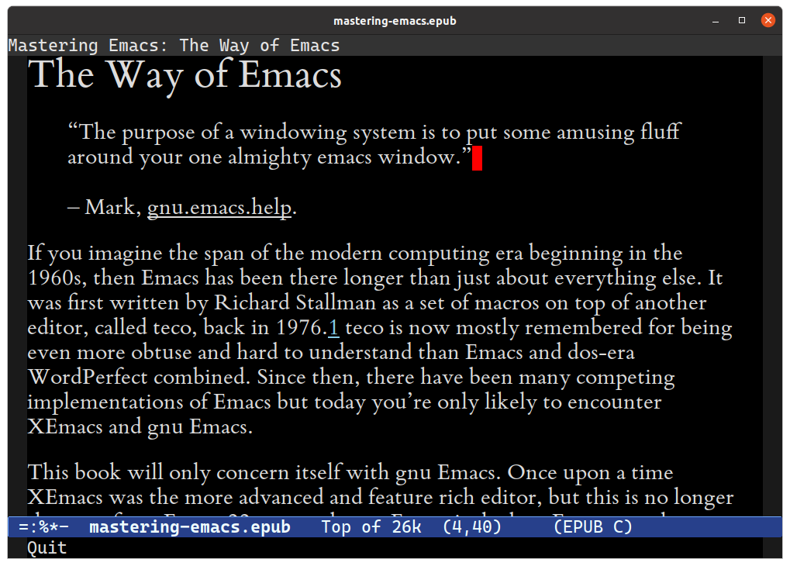
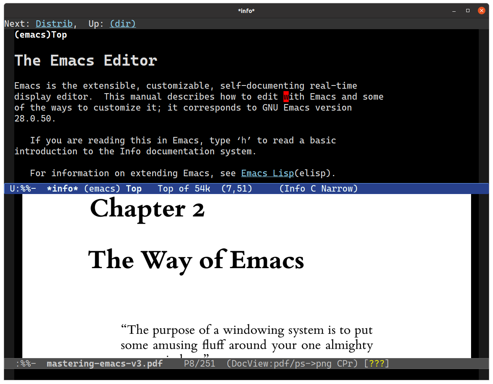
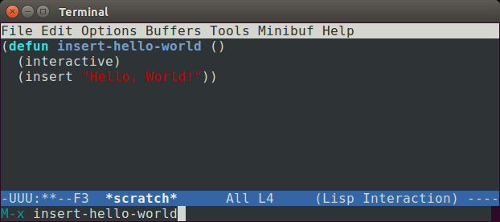
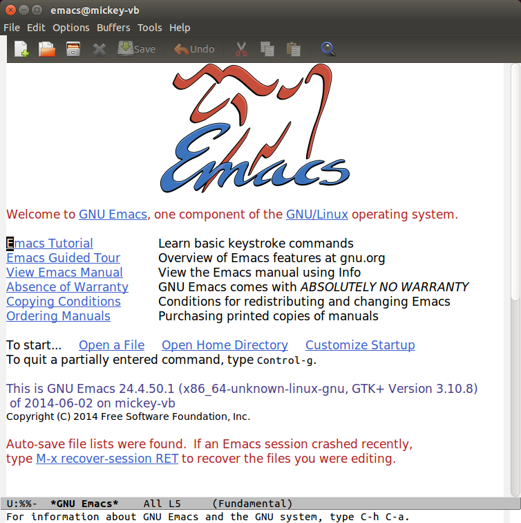
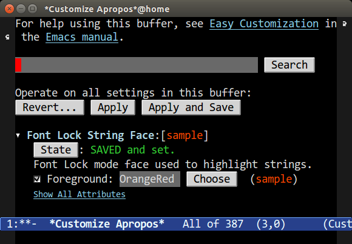
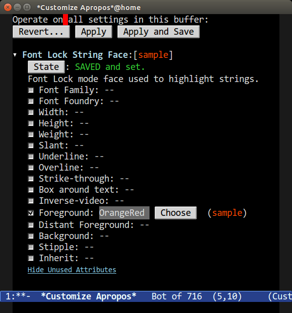
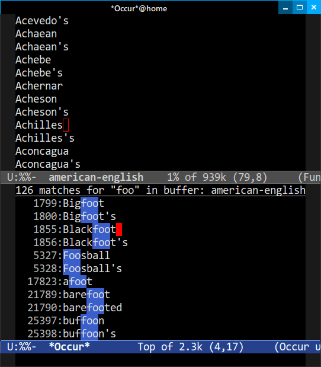
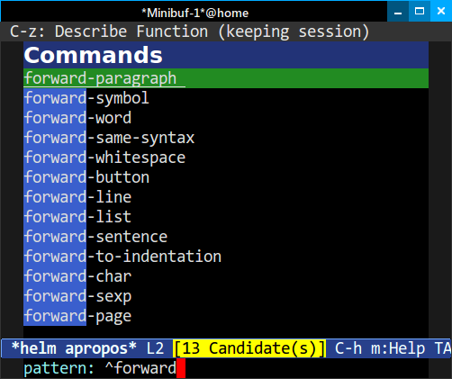
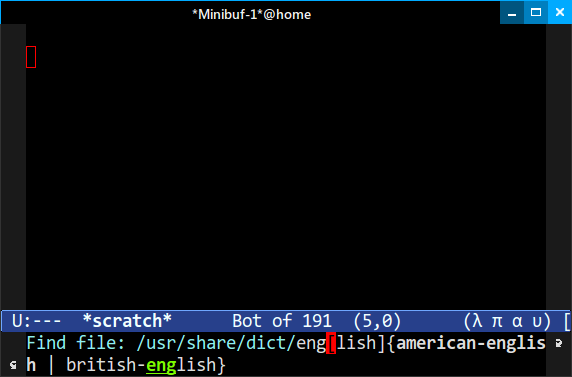

“I’m using Linux. A library that emacs uses to communicate with Intel hardware.”
– Erwin, #emacs, Freenode.
Thank you for purchasing Mastering Emacs. This book has been a long time coming. When I started my blog, Mastering Emacs, in 2010, it was at the recommendation of a good friend, Lee, who suggested that I share my thoughts on Emacs and work flow in Emacs. At the time I had accrued in an org mode file titled blogideas.org a large but random assortment of ideas and concepts that I’d learned about and wished someone had taught me. The end result of that file is the blog and now this book.
Special Thanks
I would like to thank the following people for their encouragement, advice, suggestions and critiques:
Akira Kitada, Alvaro Ramirez, Arialdo Martini, Bob Koss, Catherine Mongrain, Chandan Rajendra, Christopher Lee, Daniel Hannaske, Edwin Ong, Evan Misshula, Friedrich Paetzke, Gabriela Hajduk, Gabriele Lana, Greg Sieranski, Holger Pirk, John Mastro, John Kitchin, Jonas Enlund, Konstantin Nazarenko, Lee Cullip, Luis Gerhorst, Lukas Pukenis, Manuel Uberti, Marcin Borkowski, Mark Kocera, Matt Wilbur, Matthew Daly, Michael Reid, Nanci Bonfim, Oliver Martell, Patrick Mosby, Patrick Martin, Sebastian Garcia Anderman, Stephen Nelson-Smith, Steve Mayer, Tariq Master, Travis Jefferson, Travis Hartwell.
Like a lot of people, I was thrust into the world of Emacs without knowing anything about it; in my case it was in my first year of University where the local computer society was made up primarily of Vim users. It was explained to me, in no uncertain terms, that “you use Vim — that’s it.” Not wanting to be told what to do, I picked the polar opposite of Vim and went with Emacs.
Emacs proved to be a stable and reliable editor in all those years, but it was a tough one to get to know. Despite the extensive user documentation, it never helped me to learn and understand Emacs.
Emacs 28 is the newest version available and a significant upgrade over Emacs 27, as it introduces the long-awaited native compilation feature. With the size – and ambition – of third-party packages growing every year, so must Emacs’s performance.
Native compilation greatly improves Emacs’s performance across the board by compiling elisp into native code suitable for your platform and system architecture. It was a herculean effort by mostly one person, Andrea Corallo, that took several years of hard work before it made it into Emacs 28.
Aside from that major feature, the vast majority of changes in Emacs 28 are incremental, and I’ve updated the book accordingly, when I feel the new commands or customizations are worth knowing about.
However, there are a couple of larger features that I want to highlight here:
Some of them made it into Emacs 27, but it’s been greatly enhanced in Emacs 28. A dedicated project management keymap makes it more accessible and easy to use, and it enhances a lot of features already present in Emacs.
Emacs is self-documenting, but it did have a few blind spots that I think this release helps address. The Help system is updated slightly with additional key bindings and better descriptions.
The describe system is the primary way of looking up symbols in Emacs, and Emacs 28 adds a couple of new commands that helps with that.
Finding useful commands related to a minor or major mode is not always that easy. A mode may introduce many commands, of which only a handful are likely of interest to the average user. Emacs now lets you ask it to execute a command pertinent to the modes active in your current buffer. It greatly improves discoverability.
As for the book itself, I’ve also gone through and removed most version markers – some dating back to Emacs 24 – as they’re not going to make a material difference to readers today. As part of that process, I’ve reworded and clarified things that I felt weren’t as obvious or clear as I wanted them to be.
What’s in store for Emacs in the coming years, then? One tantalizing possibility is recognizing that regular expressions – the preferred tool of most editors to syntax highlight and extract semantic information – peaked decades ago, and if we want more intelligent tooling, we need to smarten up how we parse source code. That’s not a new or novel idea, but one that is hard to achieve at scale — a fact that held back intelligent code completion until Language Servers democratized it with a standardized protocol anyone could tap into and build on.
Emacs does have a few major modes that use language parsers for syntax and semantic enrichment, like js2-mode and nxml-mode. CEDET, a sprawling polyglot IDE with its own language parsers and semantic tooling, was merged into Emacs’s core about a decade ago, but it never caught on.
I believe tree sitter 1, a general-purpose incremental language parsing library that has seen significant adoption in other editors already, is the right tool for the job. It will not replace regular expressions completely, and nor should it: regular expressions have their place. But, tree sitter works with dozens of languages already and, rather propitiously, uses an s-expression-based query language. That makes it a perfect fit for Emacs and elisp. It’s also fast, and it can handle broken source code, so it’ll still work properly when you’re writing code. If you’re keen on experimenting, you can use tree sitter in Emacs 2 right now for a much-improved syntax highlighting experience.
It’s been ten years since I started my blog where I shared detailed articles on areas of Emacs I felt warranted people’s interest. And it’s been five years since I published the first edition of this book.
In those five years, entire text editors have come out of nowhere and exploded in popularity, only to wane in the face of even newer upstart challengers. Meanwhile, Emacs users are still using Emacs, learning from the advances (and retreats…) of other editors. But there were plenty of advances in the last five years for Emacs users to benefit from.
Microsoft VSCode deserves a special mention for standardizing something that should have been agreed on and implemented decades ago in the software community: a protocol for exposing – or re-implementing, where that is not possible – the internals of compilers, interpreters and other programmable engines in a format that enables a tool, like Emacs, to support high-level features familiar to anyone who has used a closed-source IDE: automatic refactoring; syntax and error highlighting; code completion; documentation lookup, and more. Microsoft, perhaps surprising to some, has won the argument with the Language Server Protocol, an open JSON-RPC standard. Before the advent of said protocol most IDEs and editors had insular, homegrown implementations that varied in breadth, depth and quality. It’s a major win for Emacs and its users especially: they will benefit from the collective works of people who build these Language Servers.
Language Servers in Emacs
There are two implementations of note: LSP mode3 and EGlot4. LSP mode offers a complete IDE experience out of the box, with EGlot preferring a more ascetic, Emacs-centric approach. You should try both and pick the one you like best.
Both products are under active development, and as such they are rapidly changing. They support a large variety of both tools and languages.
Better IDE-like features does raise Emacs’s profile, but one inescapable fact about learning Emacs is, once it’s second nature, you tend to forget what a rough time you had learning it. That is one thing non-users seize on as it is skin-deep and easy to critique: that the terminology is baroque; the UI brutalist; and the key bindings byzantine. True. But this is Emacs: you can change all of that. But I believe there is a kernel of truth to these complaints: a prettier UI is a quick win; changing some of Emacs’s more obscure defaults is another, despite the risk of upsetting a few vocal, ornery graybeards.
But first impressions count: people make snap judgments based on fitness and form; if the editor doesn’t code complete but another free editor does, then that might just mean they’ll never try Emacs. The curb appeal of all-in-one packages like Spacemacs and Doom Emacs – two kitchen sink kits for Emacs – are a testament to the importance of first impressions and the value of sensible defaults. Many jump straight into Emacs using either of those kits, and just as many then graduate to their own Emacs configuration when the shine wears off: but at that point they’re Emacs users for life.
This book details how to learn Emacs, and learn it you will: Emacs’s terminology predates modern computing, but it is easy to learn, as there are but a handful of terms that distinguishes it from the UI terminology used elsewhere. The key bindings and commands are harder to learn, but then that gets us to the crux of what Emacs is.
Emacs is a complex piece software, and it will take you time and hard work to learn. But, if you do, you will have an editor for life. It has an active, friendly community that will seize on any advances made in other editors and bring them into the fold. And that excludes – as you’ll see in the rest of the book – the untold benefits that other editors cannot even begin to match.
The Emacs maintainers know this, and are tirelessly working on Emacs’s core behind-the-scenes, with the aim of incrementally improving Emacs for everybody, while keeping backwards compatibility. They are excellent stewards, carefully balancing the need to respect the GNU project’s philosophy5 and Emacs’s heritage and commitment to stability, with advances in technology and feedback from their users.
Your patient mastery of Emacs is well-rewarded. I assure you.
It’s a bit weird talking about the intended audience when you’ve already bought the book on the subject. But it bears mentioning anyway so no matter your Emacs skill level you will get something out of this book.
The first and (most obvious) audience are people new to Emacs. If you’ve never used Emacs before in your life, you will hopefully find this book illuminating. However, if you’re new to Emacs and non-technical, then you’re going to have a harder time. Emacs, despite being suitable for much more than just programming, is squarely aimed at computer-savvy people. Although it’s perfectly possible to use Emacs anyway, this book will assume that you’re technically inclined, but not necessarily a programmer.
If you’ve tried Emacs before but given up, then I hope this book is what convinces you to stick with it. But it’s fine if you don’t; some languages or environments don’t (contrary to what a lot of Emacs users would claim) work well with Emacs. If you’re primarily a Microsoft Windows developer working with Visual Studio, using Emacs is going to be a case of two steps forward, one step back: you gain unprecedented text editing and tool integration but lose some of the benefits a unified IDE would give you.
If you’re a Vim refugee, then welcome to the dark side! If your primary objective is to use Emacs’s Vim emulation layers, then some of this book is redundant; it concerns itself with the default Emacs bindings and it teaches “the Emacs way” of doing things. But not to worry: a lot of the tips and advice herein are still applicable, and who knows — maybe you’ll switch away from Evil mode in time.
And finally, if you’re an existing Emacs user but struggling to take it to the next level, or maybe you just need a refresher course “from the ground up,” then this book is also for you.
Covering all of Emacs in just one book would be a Sisyphean task. Instead, I aim to teach you what you need to be productive in Emacs, which is just a small subset of Emacs’s capability. Hopefully, by the end of this book, and with practice, you will know enough about Emacs to seek out and answer questions you have about the editor.
To be more specific, I will teach you, in broad terms, six things:
A thorough explanation of important terminology and conventions that Emacs uses which in many cases differs greatly from other editors. You will also learn what the philosophy of Emacs is, and why a text editor even has a philosophy. I will also talk about Vim briefly and the Editor Wars and what the deal is with all those different keys.
How to install Emacs, how to run it, and how to ensure you’re using a reasonably new version of Emacs. I explain how to modify Emacs and what you need to do to make your changes permanent. I will introduce the Customize interface and how to load a custom color theme. And finally, I’ll talk about the user interface of Emacs and some handy tips in case you get stuck.
Emacs is self-documenting; but what does it mean and how can you leverage that aspect to discover more about Emacs or answer questions you have about particular features? I will show you what I do when I have to learn how to use a new mode or feature in Emacs, and how you can use the self-documenting nature of Emacs to find things for which you’re looking.
How to move around in Emacs. At first glance a simple thing to do, but in Emacs there are many ways of going from where you are to where you need to go in the fewest possible keystrokes. Moving around is probably half the battle for a developer and knowing how to do it quickly will make you more efficient. Some of the things you’ll learn: moving by syntactic units, and what exactly syntactic units are; using windows and buffers; searching and indexing text; selecting text and using the mark.
As in the chapter on movement, I will show you how to edit text using a variety of tools offered to you by Emacs. This includes things like editing text by balanced expressions, words, lines, paragraphs; creating keyboard macros to automate repetitive tasks; searching and replacing; registers; multi-file editing; abbreviations; remote file editing; and more.
Emacs can do more than just edit text and this chapter is only a taste of what attracts so many people to Emacs: its tight integration with hundreds of external tools. I will whet your appetite and show you some of the more interesting things you can do when you choreograph Emacs’s movement and editing.
“The purpose of a windowing system is to put some amusing fluff around your one almighty emacs window.”
– Mark, gnu.emacs.help.
If you imagine the span of the modern computing era beginning in the 1960s, then Emacs has been there longer than just about everything else. It was first written by Richard Stallman as a set of macros on top of another editor, called TECO, back in 1976.1 TECO is now mostly remembered for being extremely arcane. Since then, there have been many competing implementations of Emacs but today you’re only likely to encounter XEmacs and GNU Emacs.
This book will only concern itself with GNU Emacs. Once upon a time XEmacs was the more advanced and feature rich editor, but this is no longer the case: from Emacs 22 on-wards GNU Emacs is the best Emacs out there. The history of XEmacs and GNU Emacs is an interesting one. It was one of the first major forks2 in a free software project. Today, XEmacs is no longer maintained.
Note
To almost everyone, the word Emacs refers specifically to GNU Emacs. I will only spell out the full name when I am distinguishing between different implementations. When I mention Emacs, I always talk about GNU Emacs.
Because of Emacs’s age there are a number of… oddities. Weird choices of terminology and historical anachronisms persist because in most cases Emacs was ahead of the editor-IDE curve for many decades and thus had to invent its own terminology for things. There are talks of replacing Emacs’s own vernacular with words familiar to everyone, but that is still a long way off, if it ever happens.
Despite the lack of marketing; a small core of Emacs developers; and the anachronisms and terminology that predates the modern Personal Computing-era; there are many people out there who just love using Emacs. Emacs’s strength is its ability to adapt: and with that, I mean not only the software, but the large body of volunteer maintainers and contributors who set the direction of Emacs. They work tirelessly – within the constraints of a product that is older than most of its users – to stay abreast of changes in the wider world. The myth of an ossified Emacs community and platform are just that – a myth.
This chapter will talk about the Way of Emacs: the terminology and what Emacs means to a lot of people, and why understanding where Emacs comes from will make it easier to adopt it.
Emacs is a tinkerer’s editor. Plain and simple. People who hack on Emacs do it because almost every facet of it is extensible. It is the original extensible, customizable, self-documenting editor. If you come from other text editors, the idea of being able to change anything may seem like an unnecessary distraction from your work – and indeed, a lot of Emacs hacking does happen at the expense of one’s real job – but once you realize that you can shape your editor to do what you want it to do, it opens up a world of possibilities.
That means you can truly rebind all of Emacs’s keys to your liking; you are not hidebound by your IDE’s undocumented and buggy API nor the limitations that would follow if you did change things — such as your custom navigation keys not working in, say, the search & replace window or in the internal help files. Truly, in Emacs, you can change everything — and people do. Vim users are migrating to Emacs because, well, Emacs is often a better Vim than Vim.
Emacs pulls you in. Once you start using Emacs for the editing, you realize that using Emacs for IRC, email, database access, organizing your thoughts, command-line shells, compiling your code or surfing the Internet is just as easy as editing text – and you get to keep your key bindings, theme and all the power of Emacs and elisp to configure or alter the behavior of everything.
And when everything is seamlessly tied together you avoid the usual context switches of going from application to application: most Emacs users use little more than the editor, a browser and maybe a dedicated terminal application.
Emacs’s history
Emacs’s source code repository (now in Git) stretches back over 30 years and has more than 130,000 commits and nearly 600 committers.
If you want to modify Emacs, or any of the myriad packages available to you, Emacs Lisp (also known informally as elisp) is what you will have to write. There have been a few attempts to graft other languages onto elisp and Emacs but with no lasting effect. As it turns out, LISP is actually a perfect abstraction for a very advanced tool like Emacs. And most modern languages wouldn’t necessarily stand the test of time: TCL was briefly considered in the 90s as it was popular at the time — but that has the distinction of being even more obscure than LISP, nowadays.
The only downside is that fiddling with your Emacs configuration is something you will have to learn to live with (and in LISP no less, but as I explain in the next part that’s actually a good thing.) That’s why I reinforced the point that it’s a tinkerer’s editor. If you hate the idea of tweaking anything and want everything to work perfectly out of the box, you have two options left:
There are many free starter kits that come equipped with additional packages and what the author thinks are sensible default settings. They can be a good way to start out but with the caveat that you don’t know where Emacs ends and the starter kits’ added functionality begins.
I recommend you look at one of the following starter kits:
Steve Purcell’s .emacs.d
Bozhidar Batzov’s Prelude
If you want an opinionated kit with a strong slant towards Vim:
Spacemacs, a very popular kit that combines Vim’s modal editing with Emacs’s extensibility
Doom Emacs, like Spacemacs, is a full-fledged kit
Certainly an option, but Emacs ships with neutral but old-fashioned defaults. You are expected to configure Emacs to your liking or let someone else do the work for you. For an editor that is so radically different from mainstream editors, the maintainers are conservative about changing the defaults for fear of upsetting the old guard (who, of all people, should know how to configure Emacs.)
Personally, I never used a starter kit – they did not exist in the same way they do now when I started nearly 20 years ago – but instead borrowed heavily from other people’s .emacs files, as we called it back then.
This approach is well-suited to people who want to understand their editor end-to-end. I recommend you look at starter kits – see the aforementioned kits for good ideas – and borrow liberally from them.
Emacs is powered by its own LISP implementation called Emacs Lisp or just elisp. Many are put off or intimidated by this esoteric language; that’s a shame, because it’s a practical and fun way to learn LISP in an editor built up around the idea of LISP as a singular machine. Every part of Emacs can be inspected, evaluated or modified because the editor is approximately 95 percent elisp and 5 percent C code. It’s also a practical way to learn a radical paradigm: that code and data are interchangeable and malleable; that the language, owing to its simple syntax, is trivially extensible with macros.
Unfortunately, there’s no getting around learning elisp at some point. In this book, I will talk about the Customize interface: a dynamically generated interface of customizable options in Emacs. However, something as simple as rebinding a key means you’ll have to interact with elisp. But it’s not all bad. Most of the problems you’re likely to encounter have already been solved by someone else a long time ago; it’s a simple matter of searching the Internet for a solution to your problems.
Despite the relative unpopularity of elisp versus more “modern” languages like Python, Ruby and JavaScript, I doubt Emacs would have had the same power of extensibility if a more traditional imperative/object-oriented language had been used. What makes LISP such a fantastic language is that source code and data structures are intrinsically one and the same: the LISP source code you read as a human is almost identical to how the code is manipulated as a data structure by LISP — the distinction between the questions “What is data?” and “What is code?” are nil.
The data-as-code, the macro system and the ability to “advise” arbitrary functions – meaning you can modify the behavior of existing code without copying and modifying the original – give you an unprecedented ability to alter Emacs to suit your needs. What would in most software projects be considered code smells or poor architecture is actually a major benefit in Emacs: you can hook, replace or alter existing routines in Emacs to suit your needs without rewriting large swathes of someone else’s source code.
This book will not teach elisp in any great detail: Emacs has a built-in elisp introduction3 and I highly recommend it if you are curious — and honestly you should be. LISP is fun and this is a great way to learn and use a powerful language in a practical environment. Don’t let the parentheses scare you; they are actually its greatest strength.

Emacs is like a magpie’s nest of shiny things. If you’re new to Emacs you’re thinking I am stretching the simile a bit, but consider that Emacs comes with a built-in screensaver with M-x zone; a text adventure game, M-x dunnet; a M-x tetris clone; a full-blown client-server model; a lunar phases calculator; a psychotherapist in M-x doctor; several email clients; an artist mode for drawing ASCII art; an Emacs-based X Window manager called EXWM; and, of course, an EPUB reader, nov, that can display this very book.
When you run Emacs you are in fact launching a tiny C core responsible for the low-level interactions with your operating system’s ABI. That includes mundane things like file-system and network access; drawing things to the screen or printing control codes to the terminal.
The cornerstone of Emacs though is the elisp interpreter — without it, there is no Emacs. The interpreter is creaky and old; it’s struggling to meet the growing demands of its users. Modern Emacs users expect a lot from their humble interpreter: speed and asynchrony are the two main issues. The interpreter runs in a single thread and intensive tasks will lock the UI thread. There are workarounds, though. The issues, manifold though they are, do not deter people from writing ever-more sophisticated packages. With the release of Emacs 28 – and if your instance of Emacs is compiled with support for it – all elisp code you use is seamlessly compiled to native code, resulting in significant speedups.
When you write elisp you are not just writing snippets of code run in a sandbox, isolated from everything — you are altering a living system; an operating system running on an operating system. Every variable you alter and every function you call is carried out by the very same interpreter you use when you edit text.
Emacs is a hacker’s dream because it is one giant, mutable state. Its simplicity is both a blessing and a curse. You can re-define live functions; change variables left and right; and you can query the system for its state at any time — state that changes with every key stroke as Emacs responds to events from your keyboard to your network stack. Emacs is self-documenting because it is the document. There are no other editors that can do that. No editor comes close.
And yet Emacs never crashes — not really, anyway. Emacs has an uptime counter to prove that it doesn’t (M-x emacs-uptime) — multi-month uptimes are not uncommon.
So when you ask Emacs a question – as I will show you how to do later – you are asking your Emacs what its state is. Because of this, Emacs has an excellent elisp debugger and unlimited access to every facet of Emacs’s own interpreter and state — so it has excellent code completion too. Any time you encounter a LISP expression you can tell Emacs to evaluate it, and it will: from adding numbers to setting variables to downloading packages.
Extensibility is important, but emphasizing that importance is difficult if you don’t know the scope of possibilities in Emacs. I’ve included just a few examples of what Emacs can do – or more importantly still, what Emacs can enable people to do – here.
For 25 years, Emacspeak4 has offered blind or visually impaired Emacs users a way of interacting with Emacs, and the world, through a speech interface that understands the content of what appears on your screen. Emacspeak will change the voice characteristics of the speech engine to reflect different syntactic elements in source code, or to emphasize layout, fonts or graphical icons. For blind Emacs users, Emacspeak is a lifeline that has enabled them to continue working by using Emacs’s many tools, such as e-mail or web browsing.
The fact that this functionality has been around for 25 years is in itself impressive, but Emacs’s ability to support this sort of transformational software is beyond inspiring.
Emacs’s TRAMP5 seamlessly lets you edit remote files using a variety of network protocols, including SSH, FTP, Docker, rclone, rsync, and more, as though the files were local.
Emacs has a built-in ANSI-capable Terminal emulator; an Emacs wrapper around shells, such as bash; and a full-blown shell called Eshell written entirely in elisp.
A to-do, agenda, project planner, literate programming, note-taking (and more!) application. It is widely considered the best text-based organizer ever — a feat only surpassed by the fact that people switch to Emacs just to use it.
Reverse-Polish Notation calculator capable of symbolic algebra, arbitrary precision computation, custom functions, matrix and unit-based mathematics, and much more.
The Emacs Multimedia System (EMMS) is an interactive media browser and music player.
Official or unofficial support for almost every programming environment; built-in man page and info reader; a very sophisticated directory and file manager; seamless support for almost every major version control system; and thousands of other features, large or small.
There are some important Emacs conventions that I need to talk about before we continue. It’s quite important that you memorize them or at least refer back to this page if you’re in doubt. They will crop up again and again in the book and elsewhere and knowing them is paramount if you want to make use of Emacs’s extensive, internal documentation. This is not an exhaustive list of conventions used in Emacs or even in this book. I will introduce specific terms and concepts throughout the book, though some terms transcend specific topics and are therefore important to know beforehand.

Most text editors and IDEs are file based: they display text from a file, and they save the text to a file. That’s it.
In Emacs, all files are buffers, but not all buffers are files. If you want a throw-away area to temporarily store snippets from a log file, or manipulate text, or whatever your reason — you just create and name a new buffer. Emacs won’t hassle you for a filename. The buffer will exist in Emacs and only Emacs. You have to explicitly save it to a file on disk to make it persist.
Emacs uses these buffers for more than just editing text. It can also act like an I/O device and talk to another process, such as a shell like bash or even Python.
Almost all of Emacs’s own commands act on buffers. So when you tell Emacs to, for example, search & replace it will actually search and replace on a buffer – maybe the active buffer you’re writing in, or perhaps a temporary duplicate – and not an opaque, internal data structure like you might think. In Emacs, the buffer is the data structure. This is an extremely powerful concept because the very same commands you use to move around and edit in Emacs are almost always the same ones you use behind-the-scenes in elisp. So once you memorize Emacs’s own user commands, you can use them in a simple function call to mimic what you’d do by hand.
When you look at a buffer on the screen it is displayed in a window. But in Emacs, a window is just a tiled portion of the frame, which is what most window managers call a window. In Emacs, it is the other way around; and yes, it’s very confusing.
If you look at the screenshot above, you will see two windows and one frame. Each frame can have one or more windows, and each window can have exactly one buffer.
So, a buffer must be viewed in a window in order to be displayed to the user, and for the window to be visible to the user it must be in a frame.
Note
Think of it as a physical window having a frame, each frame made up of window panes.
In Emacs, you are free to create as many frames as you like, and in each frame you’re free to split and tile that frame into multiple windows. If you use a large screen monitor (and who doesn’t, these days), it is very beneficial to use Emacs’s tiling system to show multiple buffers on the screen.

The figure above is an example of a Terminal Emacs session. Emacs uses the modeline to communicate facts about Emacs and the buffer you’re in. The modeline looks like this:
-UUU:**--F3 *scratch* All L4 (Lisp Interaction) --There’s a lot of information conveyed in a fairly small area. What you should care about to begin with are the name and modes. In this case, the buffer is named *scratch* and the major mode is Lisp Interaction. Most editors have a similar concept known as a status bar.
All sorts of optional information can be displayed in the modeline: laptop battery power, the current function or class you’re in, what source control revision or branch you’re using, and much more.
The minibuffer is directly below the modeline and it is where errors and general information are shown:
-UUU:**--F3 *scratch* All L4 (Lisp Interaction) --
M-x insert-hello-worldIn this case, I have triggered Emacs’s extended command functionality – indicated by the M-x symbol, a concept that I will talk about in the chapter on keys – and I’ve typed the command insert-hello-world into the M-x prompt.
The echo area and the minibuffer share the same spot on the screen. The minibuffer is nearly identical to a normal buffer: you can use most of your editing commands, and the one-line minibuffer will expand to multiple lines if necessary. It is how you communicate with Emacs: if you want to search for a string you write the string you want to search for in the minibuffer. It supports a variety of complex completion mechanisms to help you find what you need and is a tool you will use often.
The point is just another word for the caret or cursor. The Emacs documentation is rather inconsistent in its use of point or cursor; you will see both. Nevertheless, the point itself is your current position in a buffer. In this book I will use -!- to represent the point. Each buffer tracks the position of the point separately, so if you switch between buffers the location of each point is remembered separately.
Note
In Emacs, we talk a lot about a “current buffer”, which can mean two things – only one of which is interesting to us, at the present – and that is whichever buffer has the point (the other case is basically the same, but involves programmatically changing the buffer in elisp.) A buffer that has the point is the current buffer because it is the one you write and move around in. Only one buffer can ever be the current buffer at a time, and it is this buffer that has the point.
The point, in Emacs, has more utility than just acting as a visual marker for where characters you type end up on the screen. It is also one part of a duo called the point and mark. The point and mark represents the boundary for a region, which is a contiguous block of text, usually, in the current buffer. In other editors, it is called the selection or the highlight. Most editors don’t have specific names for the beginning and end of a region but in Emacs we do, and in Selections and Regions I will talk more about the reason.
Tip
Historically, Emacs did not show you the visible region on the screen but instead you had to mentally visualize it. Emacs has supported visual regions for a very long time now, called the transient mark mode (or just TMM.) It is enabled by default. Surprisingly, there’s some value in not using TMM at all, but I will talk about that much later.
But like the point, the mark is more than what it seems. It serves as a boundary for the region, yes, but it is also a beacon you can use to return to from other parts in the buffer. The mark is typically invisible.
The first – and perhaps most abhorrent, to beginners – deviation from de-facto user interface standards is Emacs’s clipboard system. Cut, copy and paste are known, almost universally, to most as Ctrl+x or Shift+Delete; Ctrl+c or Ctrl+Insert; and Ctrl+v or Shift+Insert, respectively.
In Emacs, the keys and the terminology differ greatly: killing is cutting; yanking is pasting; and copying is awkwardly known as saving to the kill ring (or just copy, informally.)
The reasons, as before, are historical. Most of the keys and terminology stem from IBM’s Common User Access6 (CUA) and Apple. But the CUA was introduced in 1987, many years after Emacs had settled on its own terminology and standards.
In Selection Compatibility Modes, I will explain how you can switch to modern clipboard keys, with certain caveats, and why you shouldn’t do that. Instead, I’ll show you why Emacs’s system is better for text editing.
A favorite pastime of Emacs users is sharing with other Emacs hackers little snippets of code or customizations that make their lives easier.
Historically, these settings were kept in a file called .emacs, but most keep their customizations in ~/.emacs.d/init.el on Linux and %HOME%\init.el on Windows. Since Emacs now writes several more files to your file system, they are kept in a directory called .emacs.d to avoid cluttering your home directory.
XDG Support in Emacs 27
Emacs 27 or later now supports the XDG convention of storing user configuration in
~/.config/emacs/init.elon Linux platforms that support it.
So, when people talk about their init file, or their “.emacs file,” or if they tell you to put something in said file, that’s what they’re referring to. If you are new to Emacs, you should use ~/.emacs.d/init.el. When you add something to the file you will need to tell Emacs to run it. There are many ways of doing this, and I will explain how in Evaluating Elisp Code, but my preferred recommendation for beginners is to close Emacs and restart it.
Note
Starter kits in Emacs are very common now. They’re community additions to Emacs that bundle many changes and even entire third-party packages and if you use one, you should read their documentation for best practices on where to store your own changes.
Emacs will not save changes for you. If you want Emacs to keep changes, you must do it through the Customize interface. That means it is your responsibility to save changes you want to keep to init.el. Likewise, if you made a mistake and broke something in Emacs or if you made changes you do not care for, simply quit and restart Emacs.
Major modes in Emacs control how buffers behave. So, if you want to edit Python code and you visit a file in Emacs called helloworld.py, then Emacs will know, through a centralized register that maps file extensions to major modes, that this is a Python file and it should use the Python major mode. Each buffer will always have a major mode. The major mode may be basic and offer no font locking (syntax highlighting) and no specific functionality, or it may be the complete opposite and introduce font locking, an advanced indentation engine, and specialized commands.
Note
Font Locking is the correct term for syntax highlighting in Emacs, and in turn is made up of faces of properties (color, font, text size, and so on) that the font locking engines use to pretty-print the text.
The Emacs terms face and font lock predate the more common terms you see used elsewhere.
You are free to change a buffer’s major mode at any time by typing the command for another one. In addition to Emacs’s register of file extensions and associated major modes, there is another system for files with ambiguous (or no) file extensions at all: Emacs will scan the first portion of the file and try to infer the major mode from that. Rarely, Emacs will get it wrong and you will need to change it.
It’s important to remember that each buffer can have just one major mode. Minor modes, by contrast, are typically optional add-ons that you enable for some (or all) of your buffers. One example is flyspell mode, a minor mode that spell checks text as you write.
The major mode is always displayed in the modeline. Some minor modes are also displayed in the modeline, but usually only the ones that alter the buffer or how you interact with it in some way.
https://www.gnu.org/software/emacs/manual/html_mono/efaq.html#Origin-of-the-term-Emacs↩
Transparent Remote (file) Access, Multiple Protocol↩
I use Emacs, which might be thought of as a thermonuclear word processor.
– Neal Stephenson, In the Beginning… was the Command Line.
Before I get into the nitty-gritty of installing Emacs, you should check and see if it’s installed already. However, you have to be extra vigilant if it is: it might be an ancient version.
Checking Emacs’s version
You can check Emacs’s version by typing
emacs --version.
As of 2022 the newest major version is GNU Emacs 28. I recommend you adopt the latest version as soon as time permits. You should try to stay current: major releases in Emacs are infrequent enough that keeping abreast shouldn’t trouble you much. If you do upgrade, it’s rarely for the bug fixes (because Emacs is actually extremely stable) but for the features and the fact that most package authors assume you’re using the latest version. (Having said that, if you’re on a very obscure platform it may not be possible for you to upgrade at all.)
If you’re using XEmacs or another non-GNU Emacs, you really should switch. Fifteen years ago, XEmacs was leading the pack but GNU Emacs caught up and exceeded the capabilities of XEmacs a long time ago.
A hallmark of Emacs is its long held belief that breaking compatibility should take multiple major releases from deprecation to removal. Uncommonly, complaints stream into the Emacs mailing lists that a piece of code they wrote in the late 1980s suddenly broke because the Emacs maintainers finally removed a long-obsoleted variable or function.
Emacs supports most major platforms you are likely to use yourself: BSD and Linux, Mac OSX, MS-DOS, and Microsoft Windows. I will not go into too great a detail on how to compile or build Emacs on operating systems other than Linux. Emacs was made to be a cross platform editor but there are always some trade-offs if you don’t run them on Linux. Mac OSX, in particular, seems to attract a great deal of conflicting advice on how to best run Emacs; the best advice I can offer is to try out a few different approaches and find one that fits you.
Emacs releases official builds for Microsoft Windows on their official site.1 Extracting and running the executable is all it takes.
Most external tool support will not work on Windows. Functionality like built-in grep support requires the GNU coreutils to be present. You can, however, run Emacs from Cygwin2 and get a Linux-like environment on Windows that way. Alternatively, the cross-compiled GnuWin323 project has almost every Linux command line program that runs natively on Windows.
Another new opportunity that has sprung up is to use the Windows Subsystem for Linux, a compatibility layer that runs Linux natively on top of the subsystem in Windows 10.
One approach (though there are several) is to use an unofficial build of Emacs.4 There is also Aquamacs but it differs from GNU Emacs quite a bit. The topic itself is rather complex. Some prefer using a package manager like homebrew and others do not. Generally, people who use homebrew often use the homebrew version of Emacs also. EmacsWiki’s article5 on installing Emacs on Mac OSX is a good place to start if you want to compile Emacs yourself.
Emacs is almost always present in your distribution’s package manager. Some distros are slow to update to new minor releases (which are rarely minor at all, adding a lot of new functionality and bug fixes) so it may be worth your while to build from source.
On Ubuntu, it’s as easy as apt-get install emacsNN where NN is the major version of Emacs: 26, 27, and so on.
If you want to build your own version of Emacs from source, I recommend you use apt-get build-dep emacsNN to build and install Emacs’s dependencies. From that point on it’s easy to follow the usual configure, make, make install procedure outlined in the build instructions.
Starting Emacs is as simple as running emacs from the command line. If you run the command from a window manager, then Emacs will launch as GUI Emacs — as opposed to Terminal Emacs where Emacs is running inside a terminal.
You can force Emacs to run in a terminal, even in a window manager, by giving it the argument -nw, like so: emacs -nw.
There’s a host of command line switches you can pass to Emacs, but you only need four to get started:
| Switch | Purpose |
|---|---|
--help |
Display the help |
-nw |
Forces Emacs to run in terminal mode |
-q |
Do not load an init file (such as init.el) |
-Q |
Does not load the site-wide startup file6, your |
| init file, nor X resources |
If Emacs is giving you error messages when you start it, you can use -q to prevent your init file from loading. If that fixes the errors — then you have a broken init file and should take steps to remedy that: revert to an older version, comment out code until it works, or ask for help.
The Emacs binary follows the usual command line conventions: emacs [switches] [file1, file2, ...].
The Emacs way is to keep it running and do all your editing in a dedicated Emacs instance. Emacs will typically start slower than other editors (as it has a lot more packages and features) as it’s designed for long-running sessions and not quick edits.
So, how do you deal with situations where you’re whiling away at the command line but have to edit a file? Maybe you’re writing an email from the command line or writing a commit message — you’d want to use Emacs, and ideally the same instance of Emacs you already have running. The answer, ignoring the fact that Emacs has first-class support for both email and source control systems, is Emacs’s client-server mode.
Note
The client-server functionality is fantastic, but I wouldn’t spend too much time playing around with it until you’re comfortable with Emacs basics.
The myriad advantages of Emacs’s server mode are:
means Emacs will re-use the same session instead of spawning a new, distinct copy of Emacs every time.
$EDITORby opening the files in your shared Emacs session and automatically signalling the calling program when the session finishes.
from the command line using the emacsclient binary. The Emacs client will connect to the local Emacs server instance and instruct it to open the file.
There are several ways of activating Emacs’s client-server mode:
M-x server-start launches a server inside an already-running Emacs instance. The instance turns into a server when you type this; there’s no visual feedback, per se, that it’s running. When you exit this Emacs instance, it will shut down the server also — so if you want a server daemon you need the option below.
Emacs 28
If you’re using a window manager, and if it’s reasonably modern, you can also run
Emacs (Client)or ask it to open files with that entry, to re-use your existing Emacs instance.
emacs --daemon will run Emacs as a daemon. It will call server-start, as above, but will return control to your terminal immediately and run in the background, waiting for client requests.
Emacs also ships with native support for systemd, if your operating system supports it. Emacs 26 and up can configure a systemd unit file automatically by running the command systemctl --user enable emacs. Emacs’s daemon is then managed by systemd.
If you go the server route, you cannot use the default emacs binary any more. That binary will spawn standalone instances only. You must use the similarly-named emacsclient instead. Set your $EDITOR environment variable to emacsclient and things should just work from then on.
The emacsclient binary has its own set of switches you should know about:
| Switch | Purpose |
|---|---|
--help |
Displays the help. |
-c |
Creates a graphical frame (if X is available) |
| or a terminal frame if X is unavailable. | |
-nw |
Creates a terminal frame. |
-n |
The client will return immediately instead of |
| waiting for you to save your changes. | |
| Practical if you just want to open a bunch of files. |
When you launch an emacsclient instance, the client will wait for the file(s) to finish editing. Pressing C-x # will switch to the next buffer you’re editing through a client — when you’ve done this for the file(s) you opened, Emacs will signal to the client to exit and return control to the terminal. If you’re using a tool like git that lets you use your $EDITOR to edit commit messages when using other editors, git will wait until it receives the go-ahead from your editor that it has saved the commit messages to a temporary file before resuming with the commit operation.
You can add the -n switch if you want the client to just open the files and not wait. I use it when I’m doing exploratory work or if I want the files “permanently” open in Emacs.

When you first launch Emacs, you’re greeted with the splash screen. It’s probably one of the first things most Emacs hackers disable, along with the scroll bars, the menu and tool bar. Until you’re comfortable with Emacs I would recommend you leave the UI elements enabled since they will provide you with a quick way to access common functionality that you may not remember how to do off-hand, although they take up valuable real estate on your screen.
If you’re using Emacs in the Terminal, you can still access the menu bar by pressing F10.
If you don’t see a user interface similar to the figure above, it’s most likely due to customizations made to your init file. The quickest way to test this is to close Emacs and restart it with emacs -q. If that fixes things, then it’s definitely customizations made to your Emacs. Most starter kits assume you’re reasonably familiar with Emacs and they often disable things like the menu bar and tool bar.
You are actually free to play around with Emacs now: the arrows keys will work fine and, combined with the menu bar, you can open and save files. Emacs will auto-detect most file types and apply the correct major mode to it — if it doesn’t, you may have to install third-party packages, which I will talk about later.
The most important subject in Emacs. Emacs is famous for two things: its obscure keyboard incantations and that it’s the kitchen sink editor that can do everything. The comic strip xkcd7 humorously referenced that part of Emacs lore. A much older joke is that Emacs stands for “Escape Meta Alt Control Shift.”
Nevertheless, key modifiers are a big part of day-to-day Emacs use so being able to “decode” a string of keys is important.
In Emacs, there are several modifier keys you can use, each with its own character:
| Modifier | Full Name |
|---|---|
C- |
Control |
M- |
Meta (“Alt” on most keyboards) |
S- |
Shift |
Two more exist for historical reasons (Super and Hyper) but don’t have dedicated keys on today’s keyboards, but for consistency with Space Cadet keyboards8 still exist internally; another key (Alt) does exist on modern keyboards but is bound (and known by) as Meta in Emacs:
| Modifier | Full Name |
|---|---|
s- |
Super (not shift!) |
H- |
Hyper |
A- |
Alt (redundant and not used) |
Super and Hyper can still be used, and if you’re the owner of a Microsoft Windows-compatible PC keyboard – or use a programmable keyboard – with the Start and Application Context buttons, you can rebind them to serve as Super and Hyper, which is an elegant way of improving the key space available to you. Emacs supports the modifiers natively but you need to tell your operating system or window manager to bind them.
Important
Owing to the limitations of terminals, there are some key bindings you simply cannot type if you’re running Emacs in a terminal. My advice is to run Emacs in a GUI, if at all possible.
Knowing the modifiers is only one half of the equation though.
In Emacs, we formally define a key sequence (or just key) to mean a sequence of keyboard (or mouse) actions and a complete key to mean one or more keyboard sequences that invoke a command; if the sequence of keys is not a complete key, then you have a prefix key. And if the key sequence is not recognized by Emacs at all it is invalid, and an error is displayed in the echo area.
That’s a rather dry definition, so let’s look at a few examples.
C-dcalls a command named delete-char. To invoke it, hold down control and press d. As the key is a complete key, it will call the command delete-char and immediately delete the character next to point.
C-M-dis similar to the example above, but this time you must hold down both control and meta before you press d.
Let’s try a few prefix keys. Prefix keys are basically subdivisions — a way of grouping keys and increasing the number of possible key combinations. For instance, the prefix key C-x has several dozen keys bound to it. C-x is a prefix key you will use all the time.
C-x C-fin Emacs runs a command called find-file. The way to interpret it is to first hold down control and then press and release x. In your echo area, Emacs will display – after a small idle period of about a second – C-x- (with a dash at the end) which is Emacs’s way of telling you that it expects additional keys. Finally, type C-f which should be easy for you to do now: hold down control and press f.
To type C-x C-f, you don’t have to release the control key between each key — keeping control pressed helps you maintain something I call tempo, which I will talk about later.
C-x 8 Phas two prefix keys: first C-x and then 8, which is a subcategory to C-x. So 8 on its own wouldn’t do anything (it would just print the number 8) nor would C-x or even C-x 8 — both are still prefix keys. The key is complete only when you finish with P.
We call sets of keys that belong to a particular prefix key key maps, which is how Emacs internally tracks the mapping between a key and a command. In this case, the key map C-x 8 has a variety of utility characters used in writing or mathematics but not bound on most keyboards. For instance, C-x 8 P will insert the paragraph symbol ¶.
C-M-%is a tricky one for beginners. Using what you’ve learned above, hold down control and alt (and as you’ll remember from the table above, Meta is Alt) but also shift. The % character is typically shared with a number on the keyboard number range and the implication here is you must type shift also.
If you don’t press shift, you’re actually typing C-M-5 (on a US keyboard, anyway.)
It bears mentioning that this particular key is bound to a popular command (M-x query-replace-regexp) and is an example of a key that you cannot type in Terminal Emacs because of the terminal’s technical limitations (and not Emacs.)
TAB, F1–F12 and so onare occasionally written like this, but also in angle brackets: <tab>, <f1>. It’s important you don’t confuse TAB with the characters T A B. I will only use the former notation to avoid ambiguities.
Hint
If you’re stuck, or in the unlikely event Emacs has seized up, or if you have typed in a partial command that you want to cancel — press
C-g. That’s the universal “bail me out” command in Emacs.
One of the most important modifications you should make to your environment is rebinding your caps lock key to control. You’re going to use the control key a lot and to avoid the Emacs pinky I suggest you unbind your right control entirely and instead use caps lock.
Yes, it’ll be an annoying transition but a worthwhile one (that will, incidentally, serve you well outside of Emacs.) This change is necessary because on older keyboards9 the control key occupied the space now used by the caps lock key so reaching the left control key could be done without straining your left pinky.
On Windows, I recommend you use SharpKeys.10 On Ubuntu and Mac OSX, it’s built-in; go to the Keyboard settings and change it. If you’re using another Linux distribution you may have to fiddle with xmodmap.
Custom & Programmable Keyboards
If you own an ergonomic mechanical keyboard – they tend to have customizable firmware – you may want to go a step further and avoid the use of your pinkies for all modifier keys. If your keyboard has thumb keys or the ability to layer keys, as many high-end ergonomic mechanical keyboards often do, you should change your keyboard layout so the control key, at the very least, is within easy reach of your index or thumb fingers.
M-x: Execute Extended CommandOnly a small portion of available commands in Emacs are bound to actual keys. Most are not: they are rarely used, and do not warrant a key binding; or maybe you have explicitly overridden the key it was bound to, leaving it unbound; or perhaps you forgot its key binding.
In essence, it’s common that you want to run seldom-used commands. To do this press M-x (pronounced mex, M x, or meta x.) In your minibuffer, a prompt will appear and you are free to input the name of a command you wish to run.
When Emacs users say something like “run M-x lunar-phases to see the lunar phases of the moon” what they’re saying is: hold down meta and press x and the M-x prompt will appear in your minibuffer (that’s the line at the very bottom of Emacs.)
At this point you can type in the name of the command. Try it, enter lunar-phases and press RET. The lunar-phases command will open a new window on your screen displaying the lunar phases from today onward. You can type C-x 1 to hide the buffer.
You will frequently see both M-x lunar-phases RET and M-x lunar-phases to indicate to you, the user, that you must follow up the text you entered with RET. This is also true of commands that prompt you for input. I will leave out the RET unless I feel it’s ambiguous or unclear that you must (or must not) use RET to proceed.
Hint
If you enter
M-xby mistake, remember you can typeC-gto exit out again.
Emacs has built-in auto completion support so pressing TAB will open a new window and list all the potential candidates. As you type and press TAB, Emacs will automatically narrow the list of candidates. If your partially-typed match only has one candidate left when you press TAB, Emacs will complete the whole name for you. You can also just press RET — it completes like TAB but with the added benefit of running the command if it’s the only candidate left.
You may think M-x is a special Emacs command but it’s actually not. It, too, is written in elisp and bound to a key just like everything else.
Commands and functions
When I talk about commands, I’m talking about a type of function that is accessible to the user.
For a function to be accessible to a user (notwithstanding the ability to evaluate any expression in elisp) it must be interactive, which is an Emacs term for a function that has additional properties associated with it, rendering it usable through the execute extended command (
M-x) interface and key bindings.So if you’re a package author, you have to choose if a particular function is accessible to the end-user through the
M-xinterface. Marking it as interactive will make it accessible to end users.In other words, if it’s not interactive, you cannot run it from
M-xnor can you bind it to a key.
M-S-x: Execute Extended Command for BufferWhen you invoke M-x you’re shown every conceivable command you can execute in Emacs. That’s fine if you know exactly what you’re looking for; less so if you don’t. This is a problem that feeds into the concept of discoverability in Emacs: or what it takes for you to find the thing you’re looking for, even if you don’t really know what you are searching for, exactly.
Emacs 28 adds M-S-x, a command that restricts executable commands to a curated selection relevant to the current buffer. As it draws from a list of commands with dedicated key bindings, or those manually chosen by the mode authors, you may find – as it’s a recent addition – that it’s rather sparse. Nevertheless, I would recommend you make a mental note of it, and use it as another tool in the toolbox to explore Emacs.
Dealing with Shift
You may nave noticed the
S-inM-S-x. Another way of writing it isM-X, with theXcapitalized, as you’re turningxtoXwhen you hold down shift. I find the former easier to read, but both are valid notations.
Some commands have alternate states, and to access them you need to give them a universal argument (also called a prefix argument.) The universal argument is also known by its key binding C-u. When you prefix another key binding (this includes M-x by the way), you’re telling Emacs to modify the functionality of that command. What happens next will depend on the command you’re invoking: some have zero, one or even more universal argument states. If a command has N states, you simply type C-u up to N times.
The universal argument is shorthand for the number 4. If you type C-u a, Emacs will print aaaa on your screen. If you type C-u C-u a, Emacs will display 16 characters (because 4 times 4 equals 16). Keep in mind that universal arguments on their own are totally inactive. When you type them, Emacs will, much like a prefix key, wait until you give it a follow-up command — and only then will Emacs apply the universal arguments.
Understanding that Emacs’s command states are merely numbers is a handy thing to know because you can also pass arbitrary numbers to commands. A lot of Emacs hackers would write C-u 10 a to print 10 characters, but there’s a much easier way.
By the way
When you press a key – say the a button on your keyboard – how does Emacs write it on your screen? The truth is there’s a special command called
self-insert-commandthat, when invoked, will insert the last typed key. Having this command adds symmetry to keys and commands: it makes your regular keyboard characters behave in exactly the same way as all other commands in Emacs.And that also means keyboard characters, and hence
self-insert-command, are subject to the exact same rules as all other commands. They can be unbound, rebound, and otherwise modified by you.
Bound to key binding C-0 to C-9 are the digit arguments. But they’re bound to more than just that row of keys to maintain what I personally call the tempo of typing — but more on tempo below.
Here are the various ways you can pass digit arguments to a command.
| Key Binding | Notes |
|---|---|
C-u |
Digit argument 4 |
C-u C-u |
Digit argument 16 |
C-u C-u … |
Digit argument 4^n |
M-0 to M-9 |
Digit argument 0 to 9 |
C-0 to C-9 |
Digit argument 0 to 9 |
C-M-0 to C-M-9 |
Digit argument 0 to 9 |
C-- |
Negative argument |
M-- |
Negative argument |
C-M-- |
Negative argument |
Note
The negative argument commands are bound to the minus key (
-) even though it’s hard to make out from the table above.They’re written as
C--instead ofC- -because the latter is an invalid Emacs key: you cannot press a modifier key,C-, release it, and then press-. That would just print-on your screen. It’s the minus itself that is bound to several modifiers. White space matters.
So I mentioned the importance of tempo. Once you’re comfortable with Emacs, you’ll be flying across the screen, and not having to take your fingers off the modifiers to apply a negative or digit argument will help you do that. Ensuring the digits and negative arguments are bound to the modifiers C-, M-, and C-M-, three very common modifier combinations, all but guarantees you won’t have to move your fingers from the modifiers before you follow them up with your intended command.
Here are a few examples of what I mean.
M-- M-dkills the previous word before point. Without M--, M-d would kill the word immediately following point. The command has synergy with the negative argument because you can keep your finger on the meta key and press - d.
This combination maintains your tempo.
C-- M-ddoes exactly the same but it will take you about thrice as long to type. You have to press C--, release the control key, and then press M- followed by d.
This combination breaks your tempo.
A lot of people never bother working the digit and negative arguments into their workflow, but I find them immensely beneficial. Things like changing the casing on a word I just typed are easily done by reversing the direction of a command by giving it a negative argument.
and avoid moving your fingers away from the home row.11 Negative arguments add directionality to commands; digits add repetition or change how a command works.
If you can’t remember the exact command for something, then Emacs can help. Let’s say you can’t remember how to print the paragraph character ¶, but you do remember it’s somewhere in the C-x 8 key map, then all you have to do is append C-h to any prefix key to get a list of all bindings that belong to that key map.
Typing C-x 8 C-h will display a computer-generated list of keys and their commands. This interface is hyperlinked and part of Emacs’s self-documenting help system.
| Key | Binding |
|---|---|
C-x 8 " |
Prefix Command |
C-x 8 < |
« |
C-x 8 > |
» |
C-x 8 ? |
¿ |
C-x 8 C |
© |
C-x 8 L |
£ |
C-x 8 P |
¶ |
C-x 8 R |
® |
C-x 8 S |
§ |
C-x 8 Y |
¥ |
Above is a subset of the commands you see when you request the help page for C-x 8. If you see just a character in the Binding column, that means it’ll print the character when you type that key.
However, Emacs will also tell you if there are more prefix keys with further sub-levels; in this case, C-x 8 " has additional keys bound to it.
All these keys, hidden away in the dusty depths of Emacs, all haphazardly bound to all conceivable permutations of keyboard characters, may seem like a strange thing particularly if you come from modal editors like Vim.
The legacy of a particular keyboard used in the early ’80s is evident in the names Super, Hyper, and Meta.
Back then, most Emacs keys were bound to a larger range of physical keyboard modifiers but when the keyboard maker (and the business that made the machines the keyboards were plugged into) went bust, Emacs had to change with the times. Instead of undoing the cornerstone of Emacs, the developers shuffled the keys around and made them work on normal, boring PC keyboards.
So you’re probably thinking it’s a daunting task indeed to memorize all those keys — but you don’t have to. I memorize what I use frequently (as we are wont to do with our human brains) and leave the rest for Emacs to remember for me.
if you forget a particular key combination. You can always append C-h to a prefix key.
Tinkering with Emacs is every Emacs hacker’s favorite pastime. Go to Emacs meetups or talk to experienced Emacs hackers and the conversation will inevitably drift towards small changes and hacks they’ve made to make their lives easier.
It’s fun (and rewarding) knowing that, if there’s an aspect of your editor’s behavior that you don’t like that you can simply change it — indeed, a whole book could be written on the subject of changing Emacs.
Throughout this book I will make suggestions of things to change. Where possible I will use the Customize interface instead of the typical approach of suggesting elisp snippets.
If you want to change Emacs, you have two choices:
as it’s built-in and designed to be user friendly. I say that, but a lot of people find it cumbersome and hard to use. I think that’s a bit unfair: it’s utilitarian and has to support a lot of arbitrary ways of configuring fairly complicated features.
Not everything is supported by Customize. Since you need to write elisp to change variables, and because of the data-as-code paradigm LISP uses, you will find that Customize can write elisp that it’s been shown how to write, and then only for specific options. That makes it a virtual impossibility to generalize an interface across all of Emacs’s many, many settings. But most of Emacs’s built-in packages support the Customize interface and a lot of third-party packages do too.
I would strongly recommend you use the Customize interface, where possible, until you’re comfortable writing elisp.
to alter what you want to customize. This is the most powerful option but also the most complicated. You’ll have to learn elisp (it’s not too hard, and writing it is usually a lot of fun) to do this, but I think, in the long run, it’s worth doing.
I still use the Customize interface myself when I change font faces. There are hundreds of font faces in Emacs; everything from font lock faces (syntax highlighting) to the color of the modeline, the fonts to use for the info manual, and more.
The Customize interface is divided into groups and sub groups. Each group typically represents one package, mode, or piece of functionality. The top-level group is called Emacs and contains, as you would expect, all other groups.
To access the customize interface, type M-x customize. A buffer called *Customize Group: Emacs* should appear with a list of groups. This is one part of Emacs where using a mouse can be beneficial; the interface has buttons, hyperlinks and edit boxes much like a browser would. Click around — explore the interface, and marvel at just how much stuff there is to configure! And that’s just the things exposed to the Customize interface.
Searching in Customize
You can search for customizable options using the search bar at the top.

The Customize interface is rather byzantine but once you understand how it works, it’s quite easy to use. The figure above shows one face: font-lock-string-face. That’s the actual elisp variable name for the face; the pretty-printed name is Font Lock String Face and what you’ll see in the figure above. To the immediate left is an arrow — it’s tiny but it’ll hide/show each face. On a Terminal, it’s replaced with the arguably more legible texts Hide or Show.
As a quick aside, the Customize interface is made up of two things: faces and options. Options are a catch-all term for things you can Customize that aren’t faces.
The font-lock-string-face governs the face for strings — and what a string is depends on the mode in which it is used. For most programming major modes, it’ll be for actual literal strings in the source code, but mode authors are free to use the font faces for whatever they please. Having said that, most adhere to the naming standard for each face.

My personal foreground face color is OrangeRed. But there’s nothing stopping me from adding additional attributes as the figure above shows.
Supported colors
If you’re using Emacs in a GUI, you are limited only by the color depth of the display and you are free to pick any color from the RGB color space. I use named colors, and to see a list of supported names you can type
M-x list-colors-display. If you’re on a Terminal, you will be shown the colors supported by your Terminal.24-bit colors are also supported in the Terminal in addition to the usual 16 or 256. If you’re not seeing the colors you expect to see, you should read the Info manual FAQ on how to configure your Terminal:
Type
M-x info-aproposthen enterColors on a TTY. After a little while you should be presented with a hyperlink to the FAQ that explains how to configure your Terminal settings.In Emacs 28, you can set the environment
COLORTERM=truecolorand Emacs will figure out what it needs to do, regardless of your system’s terminal capabilities. If you struggle to get 24-bit colors, try setting that environment variable.
Making the changes in the Customize UI isn’t enough. You have to apply the changes and optionally save them also. If you don’t save them, the changes will not persist between Emacs sessions. Pressing the aptly named Apply and Apply and Save do just that. The Revert… button is similar but has a few more options. You only need Revert This Session’s Customizations if you’re unhappy with the changes you have applied. Keep in mind it will only revert the options you have in the current buffer — not all the customizations made globally.
Always remember that you can revert your changes until you save. After that, you have to manually go through and undo or use the Revert… button’s Erase Customizations option.
All Customizations are stored in your init file by default (or possibly a separate custom file) and like the rest of Emacs the changes are stored as elisp code, making it possible for you to go back and manually change the elisp.
Instead of navigating through the tree of groups, you can use one of several shortcut commands:
M-x customizedisplays the Customize interface and all the groups.
M-x customize-optionasks for a customizable option and opens the Customize UI with that option present.
M-x customize-browseopens a tree group browser. Much like the regular Customize interface but without the group descriptions.
M-x customize-customizedcustomizes options and faces that you have changed but not saved. Worth keeping in mind if you cannot recall if you have unsaved options.
M-x customize-changeddisplays all options changed since a particular Emacs version. Good way to discover new features and options.
M-x customize-faceprompts for the name of a face to Customize. I recommend you put your point on the face you want to change. It’ll fill in the name automatically.
M-x customize-groupprompts for a group name (e.g., python) to Customize.
M-x customize-modecustomizes the major mode of your current buffer. You should do this for every major mode you use. It’s a quick way to change things and gain an overview of what your major mode can do.
M-x customize-savedDisplays all your saved options and faces. Extremely handy if you want to track down and disable errant changes.
M-x customize-themesShows a list of installed themes you can switch to.
I encourage you to use the Customize interface to configure Emacs. It only has a subset of things you can (or want) to change, but it’s enough to get you started on the road to personalizing Emacs.
As you continue to use and personalize Emacs you may eventually reach a point where your init file is unmanageable. When that happens it’s common to split up your changes into groups of related changes. However, this is a low priority task until you’re comfortable (and your init file splitting at the seams) with Emacs.
Frequently, you will find or write snippets of elisp code on the Internet and you’ll want to evaluate it — closing and restarting Emacs every time is a chore.
There are a number of different ways of doing this and I have only shown a few of the different methods available to you. You can read Evaluating Elisp in Emacs12 for a thorough study of the subject.
is the simplest way, which I recommend if you have broken something in Emacs or if you want to be sure things work in a fresh environment.
M-x eval-bufferwill evaluate the entire buffer you’re in. This is what I use to evaluate something.
M-x eval-regionevaluates just the region that you have marked.
Naturally, this is just scratching the surface. You shouldn’t need to know much more than this to deal with the odd bits of code you see and want to try out.
Emacs comes with a package manager that seamlessly displays and installs packages from centralized repositories.
There are several package repositories available, and your Emacs is configured to read from official the GNU repositories. However, you should also add MELPA, a volunteer-run package repository. The package manager will merge all the different listings into one.
As the repositories are privately owned by volunteers, they may go down – temporarily or permanently – so I would check the Emacs Wiki13 for a current list of repositories.
Type M-x package-list-packages and Emacs should retrieve the package listings from your configured repositories. When it’s done, a new buffer will appear listing all the packages. Like a lot of ancillary buffers in Emacs, this one is also hyperlinked. Have a browse — you can one-click install the packages you care about from the detail page of a package.
Hint
If you know the name of the package, you can use the shortcut
M-x package-installand enter the name in the minibuffer. And like most minibuffer prompts, this one also hasTABcompletion.The package archive(s) change constantly and – especially if you leave Emacs running for long periods of time – your local copy becomes stale; to remedy this, you can refresh the catalog by typing
M-x package-refresh-contents.
If you dislike the default color scheme in Emacs — then good news, you can use a custom theme. Type M-x customize-themes to see a list of your installed custom themes. There are more available for free from Emacs’s package manager or sites like Github.
To install a theme with the package manager, open the package manager (M-x package-list-packages) and go look for themes; most will have the suffix -theme, and they act and install like normal packages. Once you’ve installed the themes you need, use the M-x customize-themes interface to try them out. You can override specific colors you don’t like by using the regular Customize interface described in The Customize Interface. Changes made in the Customize interface take precedence over the themes.
I should mention that you can have multiple themes active at the same time, so make sure you are aware of this.
As I mentioned earlier when I talked about keys, Emacs is a sophisticated self-documenting editor. Every facet of Emacs is searchable or describable. Learning how to do this is absolutely essential to mastering Emacs. The utility of knowing how to find the answers to questions is something I cannot overstate enough. I use Emacs’s self-documenting functionality all the time; to jog my memory, or to seek answers to questions I don’t know.
Terminology
You’ll see the word symbol used a lot when I discuss Emacs’s documentation systems. It’s not that the word is unique to that part of Emacs, but that it expresses anything you could reasonably look up: be it a variable, function, face or something else entirely.
I still haven’t talked about the actual core of Emacs yet (movement, editing, and so forth) because, although that’s obviously critical to mastering Emacs, they are specific skills that you could, with patience, acquire by using Emacs’s self-documenting help systems.
Knowing how to get help is critical because:
Your Emacs configuration will differ – sometimes just a little bit, other times a lot – from other people’s Emacs configurations. Asking a question on the Internet will only give you general answers. If you rebind keys, only your Emacs knows what the keys are.
I have stumbled upon more cool features than I can count simply by exploring — maybe a time saving command hidden away in a major mode, or a variable that changes the behavior of a command I use frequently.
A lot of third-party packages may not have an adequate user manual, forcing you to read the source or investigate the commands and variables exposed by the package.
I help people with Emacs questions all the time, but I don’t know everything — what I do know is where to look and how to read the documentation.
Not knowing how to do something in Emacs is normal but also confusing. But being able to say that “oh, I don’t know how to do this but I do know where I can look for help” — your confidence in Emacs will go up in step with your knowledge.
Emacs’s help system is roughly divided into three parts and knowing which one you need and when will save you time.
Emacs’s own manuals (and indeed, all manuals in the GNU ecosystem) are written in TeXinfo. If you have ever used the command line tool info, you will have interacted with the TeXinfo hypertext viewer. Emacs, obviously, has its own info viewer. Emacs’s info manual contains more than just topics relating to Emacs. By default, the info browser will index all the other info manuals installed on your system — things like the GNU coreutils manuals will also be present.
A lot of people dislike info and I’m not sure why. It works in much the same way as a web browser, though the key bindings do differ.
To access Emacs’s info reader type M-x info or press C-h i. info, the documentation browser, will appear and you are free to use your mouse to click on the hyperlinks, or use this table of keyboard shortcuts to navigate:
| Key | Purpose |
|---|---|
[ and ] |
Previous / next node |
l and r |
Go back / forward in history |
n and p |
Previous / next sibling node |
u |
Goes up one level to a parent node |
SPC |
Scroll one screen at a time |
TAB |
Cycles through cross-references and links |
RET |
Opens the active link |
m |
Prompts for a menu item name and opens it |
q |
Closes the info browser |
Because info manuals have hierarchies, in much the same way this and most other books do, you’ll want to use [ and ] to navigate if you’re reading an info manual end-to-end. That’s equivalent to reading a book starting from a chapter, moving through all the sub-chapters, sub-sub-chapters, and so forth, in the order they were laid out.
Everyday reading
For everyday reading, you want
SPCfor browsing and reading as it “does what you want.” It thumbs through a page until it reaches the end. Then, it either picks the next sub node or the next chapter. For browsing, use[and]to cycle back and forth through nodes.
If, instead, you want to jump to the next or previous sibling node you should use n and p. To go back or forward in history (much like a browser) use l and r.
The key u goes up one level to the parent; TAB cycles through the hyperlinks, and RET opens them.
Most info manuals are also published in HTML versions online, so why use Emacs’s own reader? For one, you can use Emacs’s universal bookmark system (and more on that later.) You can bookmark almost everything in Emacs: info pages, files, directories, and more. The other advantage is that it’s in Emacs, so keeping the info manual in a split window next to you is particularly desirable if you’re reading Emacs’s excellent An Introduction to Programming in Emacs Lisp and writing code alongside it.
If you want to read up on a specific Emacs functionality, you have to open the Emacs manual first. To do this, type C-h i followed by m. When prompted for a menu item, type Emacs for the Emacs manual or Emacs Lisp Intro for the introduction to elisp. As always, there is TAB completion. You can also browse the master list of manuals and find the one you want to read.
Emacs 28
You can open a manual with the key binding
C-h R. To openEmacs Lisp IntrotypeC-h R eintr.
You can look up the documentation for a command by typing C-h F and at the prompt enter the name of a command. Emacs will jump to the correct place in the info manual where the command is described.
Emacs has an extensive apropos system that works in much the same way as apropos does on the command line. The apropos system is especially applicable if you’re not entirely sure what you’re looking for. There is a variety of niche commands that only search particular aspects of Emacs’s self-documenting internals.
Apropos is another tool to have in your toolbox. It shines because you can narrow what you’re looking for to a particular area. If you’re looking for a variable, you can use the apropos system that searches variables; if you are looking for commands, you can search by command. And all of apropos supports regular expressions.
The most common one, bound to C-h a, is M-x apropos-command. apropos-command shows all commands (and just the commands, not functions) that match a given pattern.
For instance, you might be on the hunt for commands that work on words (but more on what a “word” actually means in What Constitutes a Word?) so entering C-h a followed by -word$, is a good place to start. That will list all commands that end with -word.
Here’s a subset of the output you would see if you ran that command:
| Command | Key | Purpose |
|---|---|---|
ispell-word |
M-$ |
Check spelling of word under |
| or before the cursor. | ||
kill-word |
M-d |
Kill characters forward until |
| encountering the end of a word. | ||
left-word |
C-<left> |
Move point N words to the left |
| (to the right if N is negative.) | ||
mark-word |
M-@ |
Set mark ARG words away |
| from point. |
As you can see, you get the name of the command, the keys bound to it (if any) and the purpose. Emacs has certain naming conventions and once you’re familiar with Emacs, you will see certain patterns emerge. For instance, it’s common to postfix a command with the syntactic unit or context it operates on: -word for words, -window for windows, and so on.
Hint
Apropos can sort results by relevancy. Type
M-x customize-option RET apropos-sort-by-scores RETto customize it.
There’s a wide range of apropos commands you can use to query Emacs. apropos-command is my choice as the most important command to memorize. As it’ll let you search by pattern, you need only remember part of a command’s name, but not all of it, to find what you are looking for. It’s also a fantastic way to accidentally discover new features in Emacs. Giving apropos-command the .+ pattern (to match everything) yields thousands of commands that Emacs knows about.
Emacs has a range of specialist apropos commands that you might find more suitable.
M-x aproposThe thermonuclear option. This command will display all symbols that match a given pattern. If you’re trying to track down both variables, commands and functions relating to a pattern.
M-x apropos-command or C-h aAs I explained above, this command will list only the commands.
M-x apropos-documentation or C-h dSearches just the documentation. In Emacs parlance, that means the doc string (documentation string) with which you can supply symbols. Has its uses, if all other options fail.
M-x apropos-libraryLists all variables and functions defined in a library. Use it if you’re investigating a new mode or package as it lists all the functions and variables defined in that library.
M-x apropos-user-optionShows user options available through the Customize interface. This is one way to get the symbol names of Customize options, but if you’re looking for ways to search the Customize interface, you are better off using the Search box in the Customize interface as it lets you customize the matches as well. I never use it.
M-x apropos-valueSearches all symbols with a particular value. If you’re looking for a variable that holds a particular value, this command may be of use to you. A potential use is if I know the value of a variable but not the name or where it’s defined.
If you’re unsure of what you are looking for – maybe you only have part of a name, or you just remember a bit of the documentation – then apropos is a tool that can help you. I find apropos indispensable; it’s a great way to list all the commands that match certain patterns and an even greater way to discover new commands.
What captures the beauty of Emacs’s self-documenting nature is the describe system of commands. If you know what you’re looking for, then describe will explain what it is. Every facet of Emacs – be it code written in elisp or the core layer written is C – is accessible and indexed through the describe system. From keys, to commands, character sets, coding systems, fonts, faces, modes, syntax tables and more — it’s all there, neatly categorized.
The describe system is not static. Every time you query a particular part of Emacs, it will fetch the required details through an internal introspection layer which itself queries Emacs’s own internal data structures. Both the introspection layer and internal data structures are queryable by you through elisp. There are no “secrets” in Emacs — sure, the documented API layer is the recommended way of accessing Emacs’s own internal state, but unlike other editors and IDEs you are not beholden to the package author or Emacs maintainers. I think this embodiment of openness, beautifully captured by the describe system, is one of the best features of Emacs.
You can find the most important describe keys bound to the C-h prefix key14; there’s more, a lot more actually, but I think most of them are of limited utility to all but elisp writers.
I use the describe system constantly. In writing this book, I have used both the info manual and apropos extensively, but the describe system is what I use to double check that everything I have written is correct. If you ever find yourself wondering what a symbol in Emacs does (be it a function, a command, a variable or a mode) then describe will tell you.
The only slight downside to the doc string is that it assumes a technical audience: the info manual generally does not. It’s not all bad, you don’t have to be an elisp expert to make sense of the description but it will take a bit of time to familiarize yourself with the terminology used in the doc strings.
Remember, the describe system describes a living system — your personalized Emacs.
You need to memorize four describe keys as they are the most important ones for day-to-day Emacs use.
M-x describe-mode or C-h mDisplays the documentation for the major mode (and any minor modes also enabled) along with any keybindings introduced by said modes. The describe command looks at your current buffer.
This command should be your first port of call when you’re using a new major mode. You will discover a lot of Emacs’s functionality this way and it is absolutely imperative that you use this command.
What it doesn’t do is list mode-specific commands that are not bound to any key: they are simply not shown.
M-x describe-command or C-h xIntroduced in Emacs 28, this command only describes commands, and not functions like its sibling below.
If you’re looking for an interactive command, I would use this.
M-x describe-function or C-h fDescribes a function. Another command on the critical path to mastering Emacs. Knowing what something does in Emacs (and how to look it up) is essential, but so is being able to jump to the part of the code where it’s declared.
Describing a function will give you the elisp function signature, the keys (if any) bound to it, a hyperlink to where it’s declared, and a doc string.
If the function is a command, it will say it is interactive. I recommend you use describe-command if you’re using Emacs 28 and you are looking for commands.
M-x describe-variable or C-h vDescribes a variable. Like describe-function, this command is also important, but perhaps less so as changing variables is not always easy to do for a beginner. Nevertheless, being able to read up on what a variable does is.
M-x describe-key or C-h kDescribes what a key binding does. Of all the commands, this is one of the most worthwhile ones to memorize, and like M-x describe-function it’s a command you will use frequently. If you’re unsure what a key binding does, simply enter the describe-key interface and re-type the key — and Emacs will tell you what it does.
It’s worth remembering that some keys come from major and minor modes and are not global. Therefore, you may get a different answer depending on the buffer in which you type the command.
Emacs 28 adds a couple of handy shortcuts to all describe buffers. They’re worth knowing about, though all but i are accessible through hyperlinks in the buffer itself.
| Key Binding | Purpose |
|---|---|
i |
Open the Info manual |
s |
Jump to the source definition |
c |
Open the Customize interface |
Emacs does have a lot more describe commands but they’re nowhere near as practical for day-to-day use. Knowing what you know now about the naming of describe commands and how to find commands by patterns, it should be a trivial15 exercise to list all of them.
The site-wide file is a global settings file like your own init file↩
If you touch type, a skill worth learning above all else.↩
https://www.masteringemacs.org/article/evaluating-elisp-emacs↩
As I mentioned in the Keys chapter, you can follow up a prefix key with C-h to list all the known bindings.↩
Hint: apropos-command is a good place to start.↩
Escape Meta Alt Control Shift– info.gnu.emacs
Getting around, and getting around efficiently, is as important as knowing how to edit text quickly and efficiently. But movement in Emacs is more than characters in a buffer; there’s a host of supplementary skills that make up navigation, like understanding Emacs’s rather complicated windowing system.
I wouldn’t expect you to remember and apply everything you learn here right away. I’ve laid things out so you can start at the beginning and work your way through, picking up bits and pieces as you read. The most important part, as I’ve stressed many times, is to give it time and practice — take a moment in your day-to-day life to ask yourself if there’s a better way of solving a problem with which you are faced.
Movement in Emacs is local, regional or global. Local movement is what you do when you edit and move around text near to the point. A syntactic unit – a semi-formal term for commands that operate on a group of characters – is a character, word, line, sentence, paragraph, balanced expression, and so forth. Regional and local movement are similar but regional movement involves whole functions or class definitions, if you are writing code; or chapters and such constructs, if you are writing prose. Global movement is anything that takes you from one buffer to another, or from one window to the next.
The first thing a beginner sees is Emacs’s penchant for creating windows: when you view a help file, when you compile a file, or when you open a shell. If you have never used a tiling window manager (for that is exactly what Emacs is), the idea of splitting and deleting windows may seem strange — in other editors you may use split panes but you almost never change it to suit the task at hand.
In Emacs, windows are transient; they come and go as you need them. You can save your window configuration (and there are several ways of doing this) but they were never meant to be immutable, like so many editors — set once and then never changed again. You have to get used to this. Now, there are many variables you can use to fine-tune Emacs’s windowing behavior, but you can’t really tweak your way out of using Emacs’s windows. Some packages try to replace windows with frames, with some success, but they are essentially hacks and I would recommend you avoid using them at least until you’re comfortable with Emacs’s system.
Buffers are rarely killed (that is, closed) when they are no longer needed; most Emacs hackers will simply switch away to something else, only to return to it when needed. That may seem wasteful, but each buffer (aside from assorted metadata and the buffer’s particular coding system) is only slightly bigger than the byte size of the characters in it. A typical Emacs session lasts weeks between restarts and most Emacs hackers have many hundreds of buffers running without issue.
No matter the task you’re doing in Emacs, you will need to contend with the notion of buffers and windows and how to handle them. Thankfully, that can be as easy or as complex, depending on your expectations or how you want things set up.
By the way
Have you re-mapped Caps Lock yet? Read Caps Lock as Control to understand why this is so important.
Learning the basic key bindings to find and save files, change buffers, and the bare essentials of day-to-day use is the first step on the path to mastering Emacs. However, you’re free to use the menu bar to do this until you have committed the keys to memory. One important thing to note about the menu bar is that it won’t be clickable in a terminal. Instead, you must press F10 to activate and navigate the menu bar with the keyboard.
Note
Like I explained in Getting Help, If you don’t see a menu bar (it should appear in both GUI and Terminal Emacs) and you have made changes to Emacs’s configuration – for instance, a starter kit or a colleague’s init file – you can show it by typing
M-x menu-bar-modebut you still need to track down the part of your configuration where it’s hidden.
Once you’re a legendary Emacs hacker, you will naturally want to hide it as it takes up valuable screen real estate. Until then, please leave it enabled. I encourage you to leave it enabled until you are confident enough in your Emacs skills that you no longer need it.
Most major modes have their own menu bar entry as well, improving the discoverability of the major mode. I used the menu bar for a long time when I was starting out, and it really helped me as I could focus on remembering important commands like navigation and editing.
If you prefer a keyboard-only approach, there are a handful of key bindings you must know to carry out basic tasks in Emacs.
| Key Binding | Purpose |
|---|---|
C-x C-f |
Find (open) a file |
C-x C-s |
Save the buffer |
C-x b |
Switch buffer |
C-x k |
Kill (close) a buffer |
C-x C-b |
Display all open buffers |
C-x C-c |
Exits Emacs |
ESC ESC ESC |
Exits out of prompts, |
| regions, prefix arguments and | |
| returns to just one window | |
C-/ |
Undo changes |
F10 |
Activates the menu bar 1 |
Emacs will guess the right major mode when you open files based on its extension (and if that fails, by the content of the file) and more or less work out of the box. Aside from the key bindings above, you can start editing and moving around with just the arrow keys like other editors.
Let’s talk about each command in turn as their simple actions belie their complexity.
C-x C-f: Find fileOpening a file in Emacs is called finding a file or even visiting a file. Having said that, it’s perfectly fine to say open also. The reason is that Emacs really doesn’t distinguish between opening an existing file and creating a new file. I use the terms interchangeably.
So, if you type C-x C-f and enter /tmp/hello-world.txt, Emacs will visit it, whether it’s there or not; if it isn’t, an empty buffer is shown instead.
When you visit a file, Emacs will pick a major mode. Most editors make a lot of assumptions about file extensions that you cannot easily change. Emacs supports an array of detection mechanisms that can all be changed to suit your needs. They are listed here in the order they are applied.
are variables that Emacs can enable per-file if they present in the file. They can appear as headers:
-*- mode: mode-name-here; my-variable: value -*-or footers:
Local Variables:
mode: mode-name-here
my-variable: value
End:Emacs will also look at commented lines using that major mode’s comment syntax.
It is worth knowing that file variables read into Emacs are local to that file’s buffer (meaning other buffers are unaffected by it.) That means if you have particular settings that apply only to that file, you can add them to the header or footer and Emacs will load them automatically. In practical terms, that means everything from indentation settings to more complex variables are controllable from file variables.
Because Emacs is in effect running code straight from a file, all Emacs variables are divided into safe and unsafe file variables: variables that are declared as safe – typically by Emacs maintainers – are evaluated automatically. For unsafe variables, you must first tell Emacs what to do: you can ignore the variable; or evaluate it once, temporarily, for that file only; or declare it as safe.
or shebangs are also supported. If your file begins with #! – for instance #!/usr/bin/env python or #!/bin/bash – then Emacs will figure out the major mode and run it, if it is available in Emacs. The variable interpreter-mode-alist lists the program loaders Emacs can detect.
uses the magic-mode-alist variable to see if the beginning of the file matches a pattern stored in the magic mode variable. This detection mode applies if you have no way of annotating the file or predicting the filename or extension ahead of time.
is how most major modes are applied. Emacs has a very large registry of patterns that match a file extension, file name or all or parts of a file’s path, stored in the variable auto-mode-alist.
For instance, if you open /etc/passwd, Emacs will detect this and open the file with etc-passwd-generic-mode major mode. If the filename ends with .zip, Emacs will instead open the file in archive-mode.
Although the different heuristics may look complicated, the good news is the work is done for you. Emacs’s major mode detection is rather sophisticated and it will almost always pick the right thing for you.
Emacs applies two other important heuristics you should know about: coding systems and line endings.
Emacs has excellent Unicode support (type C-h h to see it demonstrated), including transparently reading and writing between different coding systems, bidirectional right-to-left script support, keyboard input method switching, and more.
To see the coding system in use for the current buffer, you can type C-h C <RET>. Emacs will display a lot of information, including all the coding systems associated with the buffer — but for files, they are almost always set to the same coding system.
The modeline will also give you a rough idea:
U:**- helloworld.c 92% of 5k ...The first character, U, means the buffer helloworld.c has a multi-byte coding system. If it said 1, it would typically be part 1 of any number of ISO character encodings. The exact mnemonic will depend on which of the hundreds of supported coding systems you are using — hence why C-h C <RET> is a sure-fire way to see what it is.
When you open a file, Emacs will determine the line endings used. If the file uses DOS line endings, then they are preserved when you open the file and when you save it. Likewise for UNIX and pre-OSX Macintosh encodings.
The modeline will tell you what line ending you are using:
U:**- helloworld.c 92% of 5k ...The first character U, as explained above, indicates the coding system. The : means it’s UNIX-style line endings. For DOS it would say (DOS), and (Mac) for Macintoshes.
C-x C-s: Save BufferIn The Buffer, I explained that in Emacs a buffer need not be a file on your file system, but it could be a transient buffer used for things like network I/O or even just a scratch file for processing text. So, what that means in practice is that you can save any buffer in Emacs — even internal ones like a help or a network I/O buffer.
When you ask Emacs to save a buffer, it will save it to the file associated with the buffer – if, and only if, the buffer has a filename associated – or ask you for a name if there isn’t one. The latter instance will typically happen if you’re saving a buffer that does not yet have a file assigned to it; maybe it’s a temporary buffer or even the output from a help command.
If you want to save a buffer to a different file – akin to Save As… in other editors – you can use the command C-x C-w to write to a new file.
You can type C-x s and are asked, in turn, to save each unsaved file.
C-x C-c: Exit EmacsYou can exit Emacs – or just terminate your connection to it, if you are using Emacs in client-server mode – but Emacs will only exit after asking you if you want to save unsaved files.
You have several options when Emacs asks you to save a file:
| Key Binding | Purpose |
|---|---|
Y or yes |
Saves the file |
N or DEL |
Skips current buffer |
q or RET |
Aborts the save, continues with exit |
C-g |
Aborts save and the exit |
! |
Save all remaining buffers |
d |
Diff the file on the file system |
| with the one in the buffer |
Most of the commands above are self-explanatory. Emacs will traverse the entire list of unsaved files but not all unsaved buffers. As you may recall from earlier, it is possible to have buffers that are not attached to any one file.
And if you try to exit without saving, Emacs will always ask you one last time if you want to proceed.
C-x b: Switch BufferIf you edit more than one file at a time – or switch between documentation buffers or mode-specific buffers, such as Python’s shell – knowing how to switch buffers quickly and efficiently is very important.
Like Alt+TAB in most window managers, Emacs will remember the last buffer you visited so that, when you type C-x b, the name of the former buffer is the default action — meaning pressing RET will take you to it.
Switching buffers is second nature to Emacs hackers. Once you’re comfortable with it, you won’t even think about; you’ll switch through buffers quickly and instantaneously without so much as a second thought.
Buffer naming conventions
Some buffers in Emacs interact with external programs – perhaps a shell like
bash– or they hold transient information generated by Emacs itself. To distinguish them from user-created buffers, they have*characters in their names, like so:*buffername*.
The fact that files and buffers are two distinct (but related) concepts makes sense when you consider the nature of scratch buffers — buffers that you create and use but don’t intend to permanently save. For instance, if you want to run a keyboard macro or do extensive text editing on a region of code, an Emacs hacker would copy it to a made-up scratch buffer (created simply by switching to a buffer name that does not exist), do the requisite editing, and switch back to the original buffer.
If you later decide you want to save the buffer to the file system, you can press C-x C-s to save it.
Another worthwhile command is C-x C-b. It displays a list of all buffers running in Emacs. However, I would recommend you use its bigger brother, M-x ibuffer. It is not bound by default, so I recommend you make it so by adding this to your init file:
(global-set-key [remap list-buffers] 'ibuffer)The built-in interface for buffer switching is rather poor; it offers basic TAB-completion and some fuzzy matching, but little else. In fact, completion tooling is so important to your user experience that I recommend you set aside time to investigate completion frameworks that fit your workflow and personality. If you are using a starter kit you may already have one preconfigured and enabled in your Emacs.
Nevertheless, for most people starting out, I recommend IDO if you are using Emacsen earlier than version 27, and FIDO (a drop-in replacement) for versions 27 or later.
Regardless of the version, I use both and couldn’t live without them — indeed, most Emacs users will most certainly have used IDO or something like it at some point.
Type M-x ido-mode and then try C-x b or C-x C-f again.
You can enable it permanently by customizing the option ido-mode:
M-x customize-option ido-modeYou can also improve IDO’s fuzzy matching by enabling flex matching:
M-x customize-option ido-enable-flex
-matching RETAnd you can customize many more features by running M-x customize-group ido. For further reading on this subject, I recommend you read Introduction to IDO mode.2
Type M-x fido-mode. There are some completion options related to this mode, but they are under the umbrella group icomplete, the parent completion mechanism FIDO is built in. To view them, type M-x customize-group icomplete.
Additional Completion Frameworks
There are dozens of completion frameworks available in the package manager today. Most trade off one another, swapping one convenience or benefit for another: be it speed; simplicity; features and integration with major modes or external sources; search and completion methodology; or how results are presented to the user.
Some of the more common ones in addition to FIDO and IDO include: Helm, ivy, Selectrum, Icicles, Icomplete.
What, and how, you complete or search for information is a self-perpetuating debate in the Emacs community, and a great way to explore the different ways of combining and accessing information and workflows. I recommend you try most of these frameworks and see what they’re capable of: they are true force multipliers; especially the ones that merge results from third-party sources (command line tools, language servers, etc.)
C-x k: Kill BufferKilling a buffer in Emacs means closing it. You don’t have to kill buffers you don’t use. It’s perfectly normal to let them sit in the background until you need them again. Normally, serious Emacs users have hundreds or even thousands of open buffers at a time.
ESC ESC ESC: Keyboard EscapeThe click your heels three times key. If you’re stuck somewhere or want to “go back to normal” — then pressing ESC ESC ESC will (probably) solve your problems.
All windows are deleted (meaning they’re hidden from view), prompts are exited out of, special buffers are hidden, prefix arguments are cancelled, and recursive editing levels are unwound.
C-/: UndoUndoing is a common activity and it is bound to several keys: C-/, C-_, C-x u, Edit -> Undo, or even a physical undo button if your keyboard has it.
Which command you prefer is up to you: I think C-/ is the easiest to type, but if your character set is not US or UK, then you may prefer another. Most beginner’s guides will recommend you use C-x u or even C-_ but I find them harder to type than C-/.
Repeating Keys in Emacs 28
Emacs 28 adds the concept of repeating keys. If you enable
repeat-modewithM-x customize-option RET repeat-mode RETyou can chain repeated undo statements withC-x u ... u. Not all keys in Emacs work this way, but you can see a list of the ones that do withM-x describe-repeat-maps.
Unlike other editors, the undo system in Emacs can be a source of confusion. Instead of storing changes you make in a list that you can undo and redo from, in Emacs it’s stored in what’s known as the undo ring.
Most editors feature a linear undo list: you can undo and redo, but if you undo and then change the text, you will lose the undone steps; they will be unrecoverable and lost forever.
In Emacs, this is not the case. Every action you take is recorded in the undo ring, and this includes the act of undoing something. Emacs will group certain commands together into one cohesive undo cell — like typing characters or repeating the same command many times in a row. Some events will always “seal” the undo record and start a new one. Pressing RET, backspace, or moving the point around are three such examples.
Repeated undo commands will undo more and more things but if you break the cycle – for instance by moving around or editing text – Emacs will not resume from where you left off. Instead, the items you just undid were added to the undo ring as redo records. That means when you undo again, you will actually undo (redo) the actions you just did until you get to the state you were at when you last stopped — then Emacs will undo the rest of the changes in your buffer.
This means it’s next to impossible to lose undo history as the act of undoing is itself an undo-able action. That means you can undo a few things – like rewriting a paragraph in a buffer – only to realize later on that, actually, you liked the old text better. In other editors your undone changes would be gone forever as they have linear undo lists. In Emacs you undo your newly-written paragraphs until Emacs returns your buffer to the state it was in before you did your last undo.
It can be a little bit confusing. But with a little bit of practice you’ll soon pick it up. As it’s impossible to really lose any data with the undo ring, it’s easier to just experiment. Do remember that Emacs will keep undoing things from the ring as long as you keep undoing commands one after another. Only by breaking this “undo cycle” will you be able to redo the undone changes. And the easiest way to break the cycle is by simply moving your point, or writing something.
Here’s a simple example. It’s not how Emacs’s undo ring actually retains undo information – it’s rather more complex than that – but I think that level of detail is unnecessary.
You sit down and write out the following, with -!- representing the position of the point:
Hello
Emacs-!-Now you undo once with C-/:
Hello
-!-The first thing to note is the newline is preserved; generally, newlines will cause a ‘break’ and create a new undo cell in the undo ring. Why it does that is simple pragmatism: often, if you want to undo something, you do not want to undo many lines of prose or code, but only the most recent text. Contrast that with editing in other programs where you’d often undo large swathes of text, whether you want to or not.
Call undo again and you undo just the newline:
Hello-!-Press enter again and type World:
Hello
World-!-C-/ twice reverts from World back to Emacs.Navigating to the first line and altering Hello to GNU:
GNU-!-
EmacsNow repeatedly type C-/ and you’ll undo your previous writings and reveal the ones that were subsequently overwritten during a previous undo cycle. Repeat it enough times and you’ll eventually end up with a blank buffer.
Emacs, in other words, does not lose information when you undo.
If at any point you stop the undo process part-way through – perhaps you’ve undone enough to bring your buffer text to its desired state – you can break the chain by issuing any command that is not another undo command. Like movement.
Breaking the chain leaves the undo ring in the position it was in when you broke the chain. Subsequent undo commands now undo from that point, but in the other direction: by redoing the previous undo steps.
That’s normal. It’s a difficult concept to “get” (and much harder to explain) but most Emacs beginners will pick it up over time. The main point to take away is that it’s almost impossible to break the undo ring and lose information — so go ahead and experiment. Chances are, to begin with, you only care about undoing the most recent changes anyway.
Simulating the classic undo-redo behavior
In Emacs 28 there is a new command,
M-x undo-redo, bound toC-?andC-M-_. You can invoke it after you’ve used the regular undo command one or more times in a row. It’s a redo command for undo. However, when you invoke it, it won’t push the “redo” step to the undo ring.Combine it with the obscure
M-x undo-onlycommand – which will not redo a previous undo – and you have a facsimile of the undo-redo dynamic you may know from other editors.I recommend you instead spend the time to familiarize yourself with the default undo command as you’ll have to deal with the concept of rings in many other parts of Emacs. Although these two specialized commands may find a place in your workflow, they do little to simplify an already hard-to-grok concept.
By the way
You can download alternative undo implementations for Emacs. A popular one is Undo Tree.3
Managing windows is another core skill you have to master. Honestly, despite the chapter introduction saying it was rather complex, the truth of the matter is it isn’t: there are only a few key bindings you need to learn. What makes it complex – or to some people, downright infuriating – is the reliance on windows in the first place, and how to get used to the windowing concept.
Let’s take a look at the key bindings you need to know about.
| Key Binding | Purpose |
|---|---|
C-x 0 |
Deletes the active window |
C-x 1 |
Deletes other windows |
C-x 2 |
Split window below |
C-x 3 |
Split window right |
C-x o |
Switch active window |
These five keys are all you need to use, split and delete windows. There are more commands, as you’ll see below, but to start with, you can get by with these five commands.
Undoing window changes
Sometimes you want to return to a past window configuration. The mode,
M-x winner-mode, remembers your window settings and lets you undo and redo withC-c <left>andC-c <right>, respectively.To enable Winner mode permanently:
M-x customize-option RET winner-mode RET
Emacs will tile windows and generally ensure each new window is given roughly half the screen estate of the splitting window. If you have just one window and you split to the right, you now have two windows, each with a 50% share.
If you use C-x 0, then Emacs will delete the active window – which is always the one where the point is active – and if you type C-x 1, Emacs will delete all other windows.
A window is split either horizontally or vertically (or “below” and “right”) with C-x 2 and C-x 3, respectively. If you have a large monitor, you may want to split vertically so you can have more than one buffer visible at a time; you may even prefer additional subdivisions. I always split into two or even four windows, arranged in a 2x2 grid.
Finally, to move between windows use the command C-x o. I rebind it to M-o as it’s such a common thing to do. You should do the same by adding this to your init file:
(global-set-key (kbd "M-o") 'other-window)Directional window selection
Some people prefer the windmove package that ships with Emacs, as it lets you move in cardinal directions instead of cycling through all windows.
You can enable it by adding this to your init file:
(windmove-default-keybindings)You can now switch windows with your shift key by pressing
S-<left>,S-<right>,S-<up>,S-<down>.
Once you’re comfortable splitting and deleting windows, you can build on that by acting on other windows. That is, if you want to switch another window’s buffer, you have to C-x o to the window, then use C-x b to change the buffer. It’s a bit tedious and it breaks your tempo. The other window in this case is the one immediately after the current one when you run C-x o.
| Key Binding | Purpose |
|---|---|
C-x 4 C-f |
Finds a file in the other window |
C-x 4 d |
Opens M-x dired in the other window |
C-x 4 C-o |
Displays a buffer in the other window |
C-x 4 b |
Switches the buffer in the other window |
| and makes it the active window | |
C-x 4 0 |
Kills the buffer and window |
C-x 4 p |
Run project command in the other window |
These commands are the most applicable ones for operating on other windows. There are a few more – you can use C-x 4 C-h to list them – but you won’t use them as often.
If you look closely at the key bindings in the table above, you will see a symmetry between C-x 4 and C-x — indeed, they are almost identical in binding and purpose. This is no coincidence, and the symmetry will help you remember the commands.
You can create frames – what are called windows in other programs and window managers – and you may prefer to do this if you use a tiling window manager or to take advantage of multi-monitor setups. Note that frames also work in terminal Emacs.
The prefix key used for frames is C-x 5. Like the prefix key for windows (C-x 4) the commands are mostly the same.
| Key Binding | Purpose |
|---|---|
C-x 5 2 |
Create a new frame |
C-x 5 b |
Switch buffer in other frame |
C-x 5 0 |
Delete active frame |
C-x 5 1 |
Delete other frames |
C-x 5 C-f |
Finds a file in the other frame |
C-x 5 p |
Run project command in the other frame |
C-x 5 d |
Opens M-x dired in the other frame |
C-x 5 C-o |
Displays a buffer in the other frame |
Switching buffers with multiple frames is seamless, if a buffer is visible (it is displayed in a frame in a window) Emacs will switch to the right frame where the buffer is already visible.
Whether you choose to use frames or not is up to you. The mechanics of dealing with multiple frames is slightly awkward in Emacs as all frames share the same Emacs session — which is sometimes a blessing or a curse. I find that frames only come into their own with multi-monitor setups, but not so much elsewhere. The usefulness of frames, I find, is limited by the already excellent tiling window management system present in Emacs. My only recommendation is to try it out and see if frames fit your workflow.
One common complaint about Emacs was its lack of a native “tab bar” – like the ones in web browsers and most other editors – but in Emacs 27 they added not one but two distinct implementations that solve two common problems. It’s a long time coming, but the implementation and user experience is sound and, in true Emacs fashion, utterly customizable to third-party package authors and users alike.
If you’re not using Emacs 27, you can find third-party implementations in the package manager: they are facsimiles of the real thing, relying on a quirk in the Emacs rendering engine to provide a semblance of the real feature. But, if you are the sort of person who prefers the mental model of seeing a row of tabs, then you will likely find either implementation useful.
Custom Themes
If you’re using a custom theme that predates Emacs 27, you may find the color scheme does not extend to the new faces that govern the tab bar and tab line modes. You can customize them by typing
M-x customize-apropos-faces tab-.
There are two new tab modes, and they each solve different problems.
Tab Bars group tabs by window configurations. In Emacs, a window configuration is a collection of windows – size, location, the buffer, and so on – that represents a layout of your Emacs frame. Like most of things in Emacs, window configurations are configurable and can be saved to disk, to a register (but more on them much later) or indeed now to a tab bar.
In an IDE this would be referred to as workspaces or projects, perhaps. If you often find yourself switching between entire workflows – maybe an ORG mode agenda and planner along with your email for one thing, and another for your coding – then you’d have two distinct window configurations. The Tab Bar mode makes it easy to organize your thoughts into persistent window configurations.
One common complaint about Emacs – from new or experienced users alike – is the complexity in managing the windows as the system of splitting and where buffers appear is opaque and hard to understand.
Tab Bar Mode takes aim at that complexity with an intuitive interface very similar to the Frame, Buffer and Window Management commands I demonstrated earlier.
To enable tab bar mode you can customize M-x customize-option RET tab-bar-mode; type M-x tab-bar-mode; or simply invoke one of the key bindings below.
The prefix key for tab bar mode is C-x t.
| Key Binding | Purpose |
|---|---|
C-x t 2 |
Create a new tab |
C-x t 0 |
Close the current tab |
C-x t RET |
Select tab by name |
C-x t o, C-<tab> |
Next Tab |
C-S-<tab> |
Previous Tab |
C-x t r |
Rename Tab |
C-x t m |
Move tab one position to the right |
C-x t p ... |
Run project command in other tab |
C-x t t |
Execute command in other tab |
C-x t 1 |
Close all other tabs |
C-x t C-f, C-x t f |
Find file in other tab |
C-x t b |
Switch to buffer in other tab |
C-x t d |
Open Dired in other tab |
Like the frame, window, and buffer management key bindings, the tab bar bindings follow the same pattern: actions that affect other tabs is akin to creating a new tab.
New tabs are named according to the buffer that triggered their creation, and the active buffer thereafter. You can rename and move them around the tab bar as you see fit. If you prefer, you can use C-x t RET to select tabs by their name; likewise, you can switch to the next or previous tabs with C-<tab>, C-S-<tab>, or the mouse.
If you dislike seeing the tab bar itself, you can hide it with M-x customize-option tab-bar-show, and still benefit from all the capabilities of the tab bar.
There are a handful of commands not bound to any key.
| Command | Purpose |
|---|---|
M-x tab-list |
Shows an interactive tab list |
M-x tab-undo |
Undoes a closed tab for each invocation |
M-x tab-recent |
Switch to the last visited tab |
I think tab bar mode shines if you prefer manicured window configurations and a simple set of tooling to manage them. By including common utility functions like finding a file; switching a buffer; opening dired, etc. they let you jump from an existing tab bar configuration to a new one quickly. Combine it with the ability to quickly close, rename or jump back and you can consider tabs like you would, say, frames: a logical collection of windows and their state, but without the hassle of managing multiple frames.
However, it’s not uncommon still for a window configuration to get out of order: earlier in Window Management I talked about winner-mode, a way of undoing and redoing recent window configurations. It’s not nearly as worthwhile with tab bars as it does not understand tab-specific window configurations. Instead, I recommend you enable M-x tab-bar-history-mode with M-x customize-option tab-bar-history-mode.
Tab bar history mode manages a tab-specific history of window configurations. Unfortunately the commands to step through the history is not bound to anything. The snippet below borrows the key bindings M-x winner-mode uses by default. If you want to use both, you should choose your own key bindings4.
Add this to your init file:
(global-set-key (kbd "M-[") 'tab-bar-history-back)
(global-set-key (kbd "M-]") 'tab-bar-history-forward)Now when a tab’s window configuration (or a buffer in one of the windows) changes you can walk forward or backward through that history.
For most workflows, window and tab bar management is all you need to tame Emacs’s window management for your day-to-day needs.
Unlike tab bar mode, the tab line mode is feature more akin to the tabs you’ll find in a web browser. Like the tab bar mode, its primary purpose is to group related things together: by default the tab line will, when enabled, list buffers previously opened in that window.
To enable it, type M-x customize-option global-tab-line-mode; or M-x global-tab-line-mode.
There are only two key bindings worth learning.
| Key Binding | Purpose |
|---|---|
C-x <left> |
Select previous buffer |
C-x <right> |
Select next buffer |
Using the key bindings you can cycle through the list of buffers relevant to the window you call it from. By default that is a list of recent buffers, but you can customize that with M-x customize-option tab-line-tabs-function and, say, limit it to buffers of the same major mode.
The most elemental movement commands available to you – and indeed, to every editor – are the humble arrow keys. They work as you would expect, and if you’re new to Emacs, I recommend you use them until you learn the more advanced movement commands.
As with other editors, you can combine the arrow keys – written as <left>, <right>, <up>, and <down> – with the control key to move by word. Simultaneously, the other navigation keys, like page up and page down, also work in Emacs.
| Key Binding | Purpose |
|---|---|
<left>, … |
Arrow keys move by character in all |
| four directions | |
C-<left>, … |
As above, but by word |
<insert> |
Insert key. Activates overwrite-mode |
<delete> |
Delete key. Deletes the character after |
| point | |
<prior>, |
Page up and Page down move up and down |
<next> |
nearly one full page |
<home>, <end> |
Moves to the beginning or end of line |
Once you’re comfortable with the basics of Emacs – handling buffers, splitting and deleting windows, saving and opening files – you should move away from using the navigation keys. Though they serve their purpose well, they are too far away from the home row, and moving your right hand away from the home row just to move the point around on the screen is time consuming.
By the way
The page up/down buttons will scroll up or down a screenful of text, retaining 2 lines of text for context. You can change the amount of overlap when you page through text by altering the variable
next-screen-context-linesdirectly in your init file or by using Emacs’s customize interface, like so:M-x customize-option, then enternext-screen-context-lines.
If you regularly use shells like bash or other GNU readline-enabled terminal applications, then good news for you: by default they use Emacs-style keys. Try it, M-f moves forward by word. In fact, dozens of Emacs’s most commonly-used commands5 exist in GNU readline, meaning the mental context switch is minimal and every terminal program that uses readline supports them.
The arrow key equivalents in Emacs will seem positively strange when you first encounter them. A lot of people wonder why Emacs would bind an action as common as moving forward a character to C-f. The fact is if you know Emacs, you’ll almost never move around by character.
Moving by character – and also by line, as that is technically the smallest unit you can move up or down – is the smallest atomic movement you can make in a buffer. Character movement is for finesse; made for precision movement, if you like. Moving around a buffer by character is inefficient and tedious; limited by the speed of your keyboard’s repeat speed or how fast you can type it. That’s slow, and that slowness adds up as we often spend as much time moving around as we do editing text. You should only use character movement when it’s the most efficient command available. Moving by word is great, but that won’t help you if you want to move 2 characters into a word.
The four basic movement commands are:
| Key Binding | Purpose |
|---|---|
C-f |
Move forward by character |
C-b |
Move backward by character |
C-p |
Move to previous line |
C-n |
Move to next line |
As you can see, mnemonically, the assignments make sense – p for previous, b for backwards – and all are bound under the C- modifier.
You can apply universal arguments to the character keys and they will work as you expect. Type C-8 C-f and you will move the point forward eight characters. You can even combine the negative argument to reverse the direction of the command — that may not make much sense with movement keys, but some commands come with a forward and backward command. Most act in just in one direction – forward, that is – and the negative argument is the only way to change this direction.
Learning Emacs’s own movement commands (as opposed to using the navigation keys to the right on your keyboard) makes sense when you look at how Emacs’s other movement commands work. I see experienced Emacs users execute choreographed sequences of commands to do interesting and complex actions only to stop dead in their tracks to move their right hand away from the home row and move the point around by character. At some point you will realize how jarring (and how much it affects your speed) it is and switch to Emacs’s own commands.
The <home> and <end> keys move your point to the beginning and end of a line, respectively, and the Emacs equivalents are C-a and C-e. Both C-a and C-e behave exactly the same as <home> and <end> (indeed, both sets of keys are bound to the same command) but I cover the definition of a line in the next chapter.
| Key Binding | Purpose |
|---|---|
C-a |
Moves point to the beginning of the line |
C-e |
Moves point to the end of the line |
M-m |
Moves point to the first non-whitespace |
| character on this line |
The last command, M-m, is of general utility to all programmers. When you type M-m, the point will move to the beginning of the line and move forward until it encounters a non-whitespace character:
function foo() {
return 42;-!-
}After you type M-m:
function foo() {
-!-return 42;
}If you’re on a line without indentation, the command will simply go to the beginning of the line. That means M-m is worth internalizing instead of C-a for most use cases.
Emacs will, by default, wrap long lines to the right edge of the window, but that raises an important question: where does a line begin and end when it wraps?
The answer, unfortunately, requires a bit of explaining, and the terminology? Well, it’s jumbled:
A visual line is defined as What You See. If you open a file and a long line spans three wrapped lines in your buffer, then you have three visual lines, each of which is treated as a separate and distinct line by Emacs, even if the underlying file has just one.
A logical line is the opposite of a visual line. Logical lines are governed by the content of the buffer and nothing else; word wrapped or not, one long line in a file is treated as one long line in Emacs.
In some parts of Emacs’s documentation, you may see the term screen lines used in conjunction with logical lines. A screen line is identical to a visual line and the terms are used interchangeably.
Historically, when Emacs wrapped a long line the C-p and C-n commands for moving up or down a line didn’t change. A long line (called a logical line) wrapped into three lines (called visual lines) would still count as a single (logical) line for moving up or down by line; the end result is that you couldn’t use the line commands to move by visual lines. Whether it was The Right Way was a polarizing thing, indeed. You either loved it… or you altered Emacs.
And most people altered Emacs. The end result is today, in the latest versions of Emacs, the previous/next line commands move by visual lines. You can switch to the old behavior by typing M-x customize-option line-move-visual.
Adding to the complexity is the addition of Visual Line Mode, a minor mode that builds on the concept of visual lines with additional functionality.
Visual Line Mode wraps by word boundary resulting in “cleaner” line wrapping like what you’d see in a traditional word processor. The minor mode will also disable the fringe indicators.
Additionally, Visual Line Mode replaces a number of movement and editing commands with visual equivalents. C-p and C-n will behave as they do in default Emacs installations with the line-move-visual option enabled. Furthermore, commands like moving to the beginning and end of a line (with C-a and C-e) now work on visual lines instead of logical lines. The kill command (bound to C-k, but we haven’t covered that command yet!) will also work on visual lines.
If you want this behavior – and I encourage you to try it out and see if it fits your workflow – you can enable it globally with M-x customize-option global-visual-line-mode or in a buffer at a time by typing M-x visual-line-mode.
You can toggle word wrapping – called truncation in Emacs – with M-x toggle-truncate-lines.
The display of line numbers is a workflow that some people cannot live without. It’s not enabled by default, but you can enable it permanently with M-x customize-option global-display-line-numbers-mode or M-x customize-option display-line-numbers-mode.
The feature is extensible, as you’d expect, and comes with a number of default line number counting methods that you can configure with M-x customize-group display-line-numbers. Both relative and absolute numbers are possible, and you can configure a number of display options that aid in counting and executing commands on lines.
If you only want to see the current line number you’re on, you can enable M-x line-number-mode instead. It displays the current line your point is on in the mode line. Likewise, there is also M-x column-number-mode to show the column offset of the current line point is on.
Like character movement, moving by words is almost identical; the mnemonics are the same for backward and forward character, replacing only the C- modifier with M-.
| Key Binding | Purpose |
|---|---|
M-f |
Move forward by word |
M-b |
Move backward by word |
If you’ve used other editors, the equivalent arrow keys are C-<left> and C-<right>, and as I mentioned earlier they are also available to you in Emacs. In Emacs, word movement is rather complex behind the scenes, and the exact behavior of word movement is dictated by the major mode you’re using.
What is a word? Simply thinking of it as a series of characters separated by whitespace is what most people think – and therefore expect – but in Emacs the truth is a lot more complicated.
Mode writers in Emacs make assumptions about the nature of the text in the buffer. What you would write in M-x text-mode is different – and treated differently – from what you’d write in M-x python-mode. So, mode authors need a way of saying that in text-mode the period ‘.’ is a sentence separator and an attribute separator in Python.
Indeed, every character – printable characters, including Unicode code points – are given a meaning by the mode author, directly or indirectly, in a registry that maps the characters to a particular syntactic meaning. This registry is called a syntax table, a concept that I will refer back to several times to help you understand how it affects movement and editing, but is otherwise only of interest to elisp hackers and mode writers.
The syntax table keeps track of things like What characters are used for comments? or What characters make up a word? and, although obscured from view, affects every part of Emacs.
The syntax table alone decides the makeup of a word (or symbol, punctuation, comment, etc.) as a syntactic unit. So when you move the point around on the screen, it moves according to the syntax table and the general rules governing forward-word and backward-word.
The syntax table
Every editor has an equivalent of Emacs’s syntax table, but what sets Emacs apart from other editors is that you can inspect and change the syntax table, which in turn will affect how your point moves across the screen when you invoke certain commands.
You can view your current buffer’s syntax table by typing
C-h s. In it you will see a human readable version of the characters and their assigned syntax class.
One more thing you should know about word movement is that it’s not symmetric: typing M-f followed by M-b – in theory it should take you back to your old position – is not guaranteed. Emacs will cleverly skip symbols and punctuation it encounters in the direction (forward or backward) you’re moving.
Consider what happens when you type M-f to move forward one word:
Before: Hello, -!-World.
After: Hello, World-!-.Because the characters succeeding the point, -!-, are all alphabetical characters, the word command behaves as you would expect. Now look at what happens if we move the point to the end of the line and type M-b to move backward one word:
Before: Hello, World.-!-
After: Hello, -!-World.The word command is smart enough to realize that, although a period is not a word character, it should simply ignore it as there is a word immediately before the punctuation. Typing M-f after we type M-b will not return us to the place we started:
Before: Hello, -!-World.
After: Hello, World-!-.This reinforces my point that word commands are not symmetric. That will take a bit of getting used to. Emacs will generally ignore non-word characters immediately following the point in the direction you are travelling. For instance, we skipped over the period, ., because it was a non-word character and it was the first character the point would encounter going backwards. The reason for this behavior is simple: if Emacs didn’t do this, then every non-word character the word commands would encounter, in both text and code, would count as a word of its own and end the movement command.
Here is a more extreme example — but one you may well encounter in source code:
print(add_two(num_table[10]))-!-The point above is at the end of the line and if you type M-b and move backward one word, you end up right before 10:
print(add_two(num_table[-!-10]))This is because, as before, Emacs ignores symbols and punctuation if, and only if, it encounters them before it has encountered a word character. Moving forward again does not take us back to the end of the line as we are already at a word:
print(add_two(num_table[10-!-]))So, you might be wondering why this is a good thing. For starters, you can follow up the original M-b with M-d to kill the number 10 and because of the asymmetry you don’t kill the ])) symbols (but much more on the kill commands later.) Another reason is that it just does not make sense to think of a word as separated by just white spaces — it raises too many questions. What if there are many whitespaces in a row, and what about punctuation and symbols? When you have to navigate a mix of symbols and text, like most source code is, Emacs’s behavior is perfectly sensible; keep tapping M-b and you move back consecutive words of text but you conveniently skip any symbols you encounter in the direction of travel. The one thing people find confusing is the asymmetry; the rules seem insensible — but now that you know how Emacs moves, its behavior should make a lot more sense.
If you edit a lot of code with CamelCase, you may want your movement and edit commands to treat each sub-word – delineated by a capitalized letter – as its own word. Simultaneously, you may want the opposite: that text written_like_this which Emacs’s word movement commands usually – but again this is all down to the syntax table and vagaries of the major mode – treat as three distinct words (written, like, and this) instead of just one.
| Command | Purpose |
|---|---|
M-x subword-mode |
Minor mode that treats CamelCase |
| as distinct words | |
M-x superword-mode |
Minor mode that treats snake_case |
| as one word |
Global minor modes
There are global modes available for both and you can enable them by typing:
M-x customize-option global-subword-mode M-x customize-option global-superword-mode
When you enable M-x subword-mode, you enable special movement, transpose and kill commands that operate on each individual, capitalized word in CamelCase. If you write a lot of code in languages that use CamelCase, you’ll like subword mode.
Glasses mode
There is a whimsical minor mode,
M-x glasses-mode, that visually (it does not alter your buffer text) separatesCamelCasewords intoCamel_Case.
The superword command, M-x superword-mode, is similar but does the opposite: it rewires symbols (which usually, but not always, include the underscore) so they’re considered part of a word. Note that this command is not perfect. Major mode authors decide what syntax class a character like _ or . should fall under, and if they don’t set a character like _ to be a symbol, the command will not work.
Perhaps the most useful – but underused – feature in Emacs is the ability to move by s-expression (or just sexp.) The cryptic name deserves an explanation: it’s a LISP term that, today, covers a wide range of commands that operate on balanced expressions.
Balanced expressions typically include:
Programming languages being the primary example of strings, which are balanced expressions because they begin and end with " or '.
In most major modes brackets are considered balanced as they have defined open and close characters: [ and ], ( and ), { and }, < and >.
Balanced expressions can span multiple lines – multi-line strings for instance – and Emacs knows this.
Whether a particular set of characters defines a balanced expression will depend on your major mode, and the major mode in turn will define these characteristics in the syntax table I talked about earlier.
Like the word and character commands, these follow the same mnemonic as before but with a different modifier. This time it’s C-M-.
| Key Binding | Purpose |
|---|---|
C-M-f |
Move forward by s-expression |
C-M-b |
Move backward by s-expression |
I consider these commands to be some of the most important to learn if you’re a programmer. Look where the point moves when you press C-M-f:
d = -!-{
'Hello': 'World',
'Foo': 'Bar',
}After
d = {
'Hello': 'World',
'Foo': 'Bar',
}-!-Emacs knows that { and } in python-mode is a balanced expression – because of the syntax table – and thus treats { and } as a balanced expression, and immediately moves to the end brace when you type C-M-f.
Once you start thinking about code in terms of balanced expressions, you’ll see them everywhere. It’s not just in LISP that you’ll find them useful; almost all major modes are full of balanced expressions — and as an added bonus, the s-expr movement commands act like the word commands when you invoke them on “unbalanced” expressions such as regular text.
It’s absolutely vital that you learn how to use these commands.
| Key Binding | Purpose |
|---|---|
C-M-d |
Move down into a list |
C-M-u |
Move up out of a list |
Like the s-expression movement commands, the list commands were meant for LISP but have found a life outside that language. When you press C-M-d, the point will jump into the nearest balanced expression of parentheses ahead of where the point currently is:
Before:
-!-result = foo(bar())
After:
result = foo(-!-bar())The point moves inside the nearest balanced expression. To do this, the point will jump an arbitrary distance, and repeated calls will go deeper into nested structures and conversely C-M-u will go back up. Like the word commands, the list commands are not symmetric; going up will take you up one level but leave your point at the opening character:
Before:
result = foo(bar(-!-))
After:
result = foo(bar-!-())Moving out of strings
In newer versions of Emacs, you can use
C-M-uinside a string to jump to the opening quote.
On their own, the commands do little more than jump in and out of “list” expressions, but realize that combining this behavior with another command, kill-sexp6, will kill the balanced expression in front of the point — so typing C-M-u and C-M-k for kill-sexp will move up and kill the balanced expression you were just in:
; Before:
(+ (* -!-5 2) (- 10 10))
; After going up one level with C-M-u:
(+ -!-(* 5 2) (- 10 10))
; After killing the s-expression with C-M-k:
(+ -!- (- 10 10))I use this functionality all the time; it’s one of Emacs’s hidden gems that will make you very productive, even if you don’t program in LISP. For instance, languages like Python use parentheses all over the place: for dictionaries, for tuples, and for lists. Combine the list commands with C-M-k and you can refactor large swathes of code easily and maintain your tempo because most commands that work on balanced expressions are bound to the C-M- modifier.
Because C-M-d jumps into the next “list” expression following point – regardless of where it is in the buffer – it’s a powerful tool for moving around as well. Like everything in Emacs, realizing the potential of a command and committing it to working memory so you use it is hard, but the reward is well worth it.
Two more functional navigational aids are C-M-n and C-M-p. They move to the next or the previous list expression in the same nested level.
| Key Binding | Purpose |
|---|---|
C-M-n |
Move forward to the next list |
C-M-p |
Move backward to the previous list |
For instance, here’s what happens when you type C-M-n repeatedly:
(+ -!-(* 5 2) (- 10 10))
(+ (* 5 2)-!- (- 10 10))
(+ (* 5 2) (- 10 10)-!-)As you can see, it moves from one expression to the next, and this includes the beginning and end of the balanced expression. Typing C-M-n again yields an error: we have reached the end of balanced expressions at this nested level. If we type C-M-u to move up the list:
-!-(+ (* 5 2) (- 10 10))Now, we move out of the nested expression and into its parent. A subsequent call to C-M-n takes us to the end of the balanced expression:
(+ (* 5 2) (- 10 10))-!-For LISP, the commands are invaluable. Nested parentheses indicate hierarchy so LISP hackers require an efficient set of tools to move up, down and around balanced expressions. For all other programming languages, the utility depends entirely on how frequently you encounter balanced expressions. In most languages – like C, Java, Python, or JavaScript – they are very useful. And it’s an elegant way of moving between some balanced expressions like curly or square braces.
I consider moving by character, line, word and s-expression to be the most important movement commands. They have the greatest utility across a wide range of editing tasks – specifically programming and text editing – but there are some movement commands that are best suited for specific tasks — and whether or not they are to you depends entirely on what you do.
| Key Binding | Purpose |
|---|---|
M-} |
Move forward to end of paragraph |
M-{ |
Move backward to start of paragraph |
The definition of a paragraph depends on who you ask and your personal style, and Emacs tries to cater to most of them. The paragraph commands themselves rely on a set of variables that define the beginning and end of a paragraph:
| Variable Name | Purpose |
|---|---|
paragraph-start |
Defines the beginning of a paragraph |
| using a large regular expression | |
paragraph-separate |
Defines the paragraph separator as a |
| regular expression | |
use-hard-newlines |
Set by the command |
M-x use-hard-newlines and defines |
|
| whether a hard newline defines a | |
| paragraph |
I recommend you describe the variables (using C-h v) to get a better picture of how Emacs’s paragraph system works. The paragraph-start variable in particular is a jumble of regular expressions that tries to do everything for everyone. By default, when you use M-} and M-{, Emacs will treat newline-delimited blocks of text as a paragraph.
You can alter the behavior of the paragraph commands so leading spaces mark the beginning of a new paragraph by running M-x paragraph-indent-minor-mode.
The paragraph commands find their way into in programming modes also. A lot of programmers group lines of code together and separate them from each other with blank lines, making them an ideal candidate for the paragraph commands.
The sentence commands share symmetry with the line commands, replacing the C- modifier with M-:
| Key Binding | Purpose |
|---|---|
M-a |
Move to beginning of sentence |
M-e |
Move to end of sentence |
Like a paragraph, the definition of a sentence is a house style that varies, but Emacs assumes you begin your sentences with two whitespaces after a period:
This is one sentence. This is another.You can alter this behavior by customizing (with M-x customize-option) the following variables:
| Variable Name | Purpose |
|---|---|
sentence-end-double-space |
Non-nil means a single space |
| does not end a sentence. | |
sentence-end-without-period |
Non-nil means a sentence will |
| end without a period. | |
sentence-end-without-space |
A string of characters that |
| end a sentence without | |
| requiring spaces after. |
The one you are most likely to customize is sentence-end-double-space.
The word defun is another piece of LISP arcana that stands for define function — and in Emacs you will see it in places where commands act on functions.
Like the sentence and line commands, the defun commands use C-M- as their modifier:
| Key Binding | Purpose |
|---|---|
C-M-a |
Move to beginning of defun |
C-M-e |
Move to end of defun |
The defun commands move to the logical beginning or end of the function point is in. I must point out that function is really a rather loose term. It doesn’t have to be a function but in programming modes it’s usually functions, classes, or both; for other modes, it might do other things — in reStructuredText, for instance, it will jump to the beginning and end of a section or chapter.
Moving to the beginning of defun is really useful if you want to, say, quickly change the name or function arguments of a function in a programming language.
Consider the location of point:
int addtwo(int x)
{
return x + 2-!-;
}Pressing C-M-a will take us to the beginning of defun, addtwo:
-!-int addtwo(int x)
{
return x + 2;
}Subsequent calls to C-M-a will take you further and further “up the chain” to a parent block, perhaps, or the top of the file if you are at the root.
A page in Emacs is only tangentially related to the real-life concept of a page. In Emacs, a page is anything delimited by the character defined in the variable page-delimiter, which by default is the control code ^L — better known as the ASCII control code form feed. It is unlikely that you will ever use these commands, so I would not worry about memorizing them.
In some LISP circles, it is common to group things by pages and as Emacs has close ties to the LISP community it comes with a battery of commands to interact with pages.
| Key Binding | Purpose |
|---|---|
C-x ] |
Moves forward one page |
C-x [ |
Moves backward one page |
Discovering the page commands
Here’s one way to find page commands:
C-h a(forM-x apropos-command), then search forpage$to find all commands ending with the word “page.”Knowing how to ask Emacs the right questions – using apropos or the describe system – is the cornerstone of Emacs mastery.
Like the arrow keys, the <prior> and <next> commands (Pg. Up and Pg. Down respectively) have their own Emacs equivalents, but Emacs’s scrolling mechanism is different enough that some people find it frustrating. That’s because Emacs will scroll by nearly full screens, where a full screen is the number of lines visible in that window. To help with continuity when you scroll, Emacs will retain two or three lines (as governed by the variable next-screen-context-lines) so you don’t lose track of where you are.
| Key Binding | Purpose |
|---|---|
C-v |
Scroll down a near full screen |
M-v |
Scroll up a near full screen |
C-M-v |
Scroll down the other window |
C-M-S-v |
Scroll up the other window |
C-v and M-v work the same way as the navigational keys <prior> and <next>.
The odd ones out are the two commands that scroll the other window. It has its uses. I almost always work with multiple windows and being able to scroll another window – containing a help buffer, or a log file, or even another source code file – is a common thing for me to do.
Most editors lack this functionality; instead you have to:
With your mouse, move over the window, and finally use the scroll wheel to scroll up and down, or click and press <prior> and <next>.
Switch to the other split window or tab, use <prior> or <next> to scroll up and down.
In Emacs, you can use the other window scroll commands.
I don’t use C-M-S-v often. I find it easier to type C-M-- C-M-v to reverse the direction of the scroll with a negative argument than typing C-M-S-v. The latter command requires a particularly dexterous finger maneuver and if you scroll too far, you have to swap finger positions so you can type C-M-v. It’s far easier to use C-M-- and C-M-v.
Maintaining tempo
Notice that the negative argument command,
C-M--, is conveniently bound to the same modifier keys asC-M-v. Like I explained in the chapter on universal arguments, this is no coincidence. By binding the argument commands to all major modifier combinations, you don’t have to contort your fingers between commands to prefix a command with an argument.
You can also scroll horizontally — or just left and right in Emacs parlance:
| Key Binding | Purpose |
|---|---|
C-x < |
Scroll left |
C-<next> |
Scroll left |
C-<prior> |
Scroll right |
C-x > |
Scroll right |
S-<wheel> |
Scroll left/right with |
| the mouse wheel (Emacs 28) |
If you edit a lot of text files with very long lines – CSV files, perhaps – you may want to first disable word wrapping (or line truncation as it’s known in Emacs) with M-x toggle-truncate-lines. I would not bother memorizing the horizontal scrolling commands unless you really need them.
You can, of course, still use the mouse wheel to scroll, though whether it works in the terminal or not will depend on your system.
Now for two more commands for moving around, namely the ability to go to the beginning and end of the buffer:
| Key Binding | Purpose |
|---|---|
M-< |
Move to the beginning of the buffer |
M-> |
Move to the end of the buffer |
When you move to the beginning or end of the buffer, Emacs will place the mark – an invisible location marker – where you came from, so you can return to your old position. For instance, if you type M-< to jump to the beginning of the buffer, you can type C-u C-<SPC> to go back. C-u, as you remember, is the universal argument; in this case, it sets a flag so that when you type C-<SPC> Emacs will interpret that to mean jump to the last mark. The mark, and its utility in Emacs, is a topic I will discuss a little bit later.
Bookmarks in Emacs work identically to the ones in your web browser but with the notable exception of supporting a wider variety of sources. That makes Emacs’s bookmarking system flexible enough for you to bookmark files, M-x dired directories, M-x man pages, Org mode, DocView (including PDF files), and info manual pages. Because of Emacs’s TRAMP system, it is therefore also possible to bookmark remote files and directories for speedy access.
Bookmarks in Emacs are permanent, meaning they are automatically saved to a bookmark file in ~/.emacs.d/ called bookmarks.
Bookmark file
The variable
bookmark-default-filedetermines where Emacs stores your bookmarks. The file is plain text (elisp s-expressions, actually) meaning it is possible to edit it manually (if you absolutely must) or merge the files if you regularly add or remove bookmarks from multiple machines.
| Key Binding | Purpose |
|---|---|
C-x r m |
Set a bookmark |
C-x r l |
List bookmarks |
C-x r b |
Jump to bookmark |
Bookmarks are a very efficient way of jumping to frequently-used files or directories. Bookmarks also work if there are sections of Emacs’s manual that you want to return to frequently. And because of the unified nature of Emacs – namely buffers – the three are seamlessly stored and recalled from the same list of bookmarks.
Registers, however, are different; they are the flip side of the coin — where bookmarks are permanent, registers are transient. A register is a single-character store-and-recall mechanism for several types of data, including:
You can store and recall the layout of your window configuration, though I would argue there are much better tools (such as M-x winner-mode I talked about in Window Management, and Tab Bar Mode) for the job.
Framesets are identical to window configurations but hold information about Emacs’s frames instead.
The location of point is another thing you can store in a register. If you are used to line-based bookmarks from other IDEs or editors, these are the closest equivalents in Emacs. Unfortunately, the key bindings (as you will see below) diminish their usefulness.
Plain text is also storable. If you want to insert more than one piece of text, making the kill ring a less ideal candidate. You can also store numbers, though the only distinction between text and number is the ability to use simple arithmetic (addition) on a register containing a number.
| Key Binding | Purpose |
|---|---|
C-x r n |
Store number in register |
C-x r s |
Store region in register |
C-x r SPC |
Store point in register |
C-x r + |
Increment number in register |
C-x r j |
Jump to register |
C-x r i |
Insert content of register |
C-x r w |
Store window configuration in register |
C-x r f |
Store frameset in register |
A register is a single character only. When you want to store or recall something, you are asked for a single character to query. Emacs pops up a preview window after register-preview-delay seconds with a quick overview of known registers and its contents.
C-x r s is the one I use most frequently. It stores the region in a register – very practical, and probably what you’ll do most – and C-x r i which inserts the content of a register at point. By default the point is placed after the inserted text. If you give it a prefix argument (C-u C-x r i) it’ll instead place the point before.
You can store the location of point with C-x r SPC, but to jump to it you must use C-x r j; arguably C-x r i should Do The Right Thing here and jump to the point if the register stores a point. Instead, Emacs inserts the internal point location which is not useful at all to anyone.
If you want to store and recall the window or frame layout – beneficial to anyone who prefers a particular window arrangement – you can store a window or frame configuration in a register also.
To store a number, place the point before it and type C-x r n. To increment it by prefix-numeric-value (default 1), type C-x r + and to increment it by an arbitrary amount, give it a numeric argument (and a negative one to decrement.) You can recall a number register with C-x r i.
Both registers and bookmarks have their place, but they serve two different purposes. I would focus on memorizing the bookmark commands as they are more likely something you use daily.
Selecting text is a common action, but in Emacs’s info documentation and describe system it’s referred to as the region. As I mentioned in The Point and Mark, a region boundary is made up of the point and the mark.
Other editors make little or no distinction between the beginning and end of the region but in Emacs that distinction is rather important. The region is always defined as the contiguous block of text between the point and the mark.
For a visual demonstration, try this in Emacs: press C-<SPC> In the echo area, a message will appear saying “Mark Set.” Now, move your point around the buffer – with the arrow keys or the other movement commands I introduced earlier – and watch as the region changes because it is now activated. Press C-<SPC> again – or the universal get-out-of-trouble command C-g – to deactivate the region. Note that the region is always defined as the mark to the point, whether the point comes before the mark or not. This functionality is thus similar to what you see in other editors when you hold down shift and move around with the arrow keys.
Therefore, when you make visual selections, you are using Emacs’s Transient Mark Mode, also known as TMM. TMM came about much later in Emacs’s history than you might think; in fact, it was only recently switched on by default.
So what came before TMM? Well, for starters, you didn’t have visual highlighting at all — so you had to remember where you left the mark. And a lot of the commands didn’t know about things like regions at all. Simple commands like M-x replace-string that does a simple string replacement in a buffer worked from the point to the end of the buffer, no exceptions. So if you wanted to modify particular parts of a buffer, you had to use Emacs’s cryptic narrowing commands that shrink the visible content of a buffer to what you wanted the command to act on. As you can imagine, that didn’t help beginners learn Emacs.
So, today you don’t have to worry about region narrowing (for anything except specialized editing), nor do you have to memorize the location of the mark as TMM will show you the region.
However, the union of TMM and Emacs’s region system is not perfect. The mark in Emacs is not just for the region. It’s an important tool for jumping around in a buffer as some commands that whisk you away from your current location will leave a mark (a breadcrumb trail, effectively) on the mark ring that you can return to later. One example would be M-< and M-> – the commands for jumping to the beginning and end of the buffer – they both mark your old position before they jump so you can later return to your old position by typing C-u C-<SPC>.
The mark ring
Like the undo ring, the mark ring contains all the marks you have placed in a buffer — both directly, using mark commands like
C-<SPC>; and indirectly, from commands likeM-<andM->. There is also the global mark ring for commands that work across buffer boundaries.You can tell when the mark ring has changed because the text Mark set (or a variation thereof) appears in your echo area.
And because of this, the command C-<SPC> will set the mark and with TMM enabled it also activates the region highlighting when you move the point around. That means if you just want to set the mark just so you can return to it later (with C-u C-<SPC>), you have to press C-<SPC> C-<SPC> — once to set the mark, and once more to deactivate the region. Another gotcha is that some commands in Emacs that operate on regions – text replace, changing text to uppercase in a region, and so on – work just fine even if the region isn’t activated as Emacs will not check if the region is active (just that you are using TMM.)
Here are the keys needed to activate selection and jump to the mark. If you are new to Emacs, feel free to use the shift selection keys until you are comfortable with Emacs’s own selection mechanism.
| Key Binding | Purpose |
|---|---|
C-<SPC> |
Sets the mark, and toggles the region |
C-u C-<SPC> |
Jumps to the mark, and repeated calls |
| go further back the mark ring | |
S+<left>, … |
Shift selection similar to other editors |
C-x C-x |
Exchanges the point and mark, and |
| reactivates your last region |
The C-x C-x command (called exchange-point-and-mark) is interesting. It reactivates the region from point – which is your current location in the buffer – and wherever the mark is; then, it swaps the point and mark positions. This command works well when you want to reactivate the last region or if you simply want to swap the position of mark and point. Exchanging the point and mark has its place if you want to edit text near the mark or point or if you simply want to reactivate the region between your last mark and point.
Let’s finish with a list of simple rules to remember:
C-<SPC>, which sets the mark then activates the region (if you use TMM, and you should!). Pressing C-<SPC> again deactivates the region.C-u C-<SPC>, even one you set with C-<SPC>. Repeat calls to C-u C-<SPC> go further and further back the mark ring.C-x C-x re-activates the region and switches your point and mark around.As always, I encourage you to learn Emacs’s own commands in time but if you are overwhelmed, you can use the mouse to click-drag selections or use the arrow key selection with S+<arrow key>.
To ease the transition to Emacs, there are several helper modes you can enable to mimic the behavior of other editors. Emacs enables one or two of them by default now as part of their drive to modernize Emacs. My personal recommendation is to start off with what you know and slowly wean yourself off the compatibility modes as you improve your Emacs skills.
M-x delete-selection-modeWhen the region is active and you type text into the buffer, Emacs will delete the selected text first. This behavior mimics most other editors.
To enable (or disable) it, use the customize interface:
M-x customize-option delete-selection-modeshift-select-mode (variable, enabled by default)Shifted motion keys – both traditional navigation keys like the arrow keys and Emacs’s own commands – activate the region and extend it in the direction you are moving.
The shift selection works differently from setting the mark with C-<SPC>. When you shift select a region, any non-shifted movement command will deactivate the region. Like delete-selection-mode, this functionality mimics the behavior in other editors.
For instance, S-<left>, S-<right>, etc. will region select one character at a time, and C-S-f will do the same but with Emacs’s own movement commands.
To disable (or enable) it, use the customize interface:
M-x customize-option shift-select-mode
M-x cua-modeProbably, the most radical departure from Emacs’s selection and clipboard system is CUA mode. Named after IBM’s Common User Access, cua-mode lets you use C-z, C-x, C-c, and C-v to undo, cut, copy and paste like you would in other programs.
Because CUA mode and Emacs’s own prefix key bindings C-x and C-c conflict, CUA mode is disabled by default. If you enable it, the prefix keys C-x and C-c continue to work but with minor side effects and additional constraints:
C-x or C-c with an active region, you must double tap the prefix key in rapid succession (e.g., C-x C-x).C-x or C-c followed by another key, you must type them in rapid succession or you will trigger a clipboard command.S- modifier: C-S-x replacing C-x and C-S-c replacing C-c.CUA mode is one of those quality of life features that will make or break Emacs adoption for some people. If you’re one of them, by all means enable it! You can always wean yourself off the CUA keys over time or simply live with the side effects I mentioned.
To enable (or disable) it, use the customize interface:
M-x customize-option cua-modeMy personal recommendation is to learn Emacs’s own region commands (and more on that shortly) as Emacs was never designed around the idea of CUA mode.7 Having said that, eliminating barriers to entry – and this is something the Emacs maintainers are working on – is more important in the shorter term for a new Emacs user.
I have shown you how to activate the mark interactively with the arrow keys (S+<arrow key>) and C-<SPC> but Emacs has a host of mark commands that work on syntactic units which, as you may recall from earlier, are things like words, s-expressions and paragraphs.
Setting the mark with C-<SPC> is the primary method of activating the region, but it is cumbersome to use. You have to set the mark, move to your desired location, and then run your command. Worse, it breaks your tempo.
If you want to make precise selections, you are better off using Emacs’s dedicated mark commands:
| Key Binding | Purpose |
|---|---|
M-h |
Marks the next paragraph |
C-x h |
Marks the whole buffer |
C-M-h |
Marks the next defun |
C-x C-p |
Marks the next page |
M-@ |
Marks the next word |
C-M-<SPC> and |
|
C-M-@ |
Marks the next s-expression |
C-<SPC>, C-g |
Deactivates the region |
All mark commands append to the existing selection if you already have a region active. So if you want to mark two words in a row, all you have to do is press M-@ twice or combine it with a numeric argument: M-2 M-@. Likewise, you can reverse the direction by using the negative argument modifier.
Appending to the existing region has a simple implementation: Emacs simply moves the mark from one position to the next. That makes it easy to do topical edits like deleting the selection or executing a command against it, and you can daisy-chain as many different mark commands as you like, until you’ve marked everything you want to mark.
In the chapter What Constitutes a Word? I talked about syntax tables and how a major mode’s syntax table affects movement commands. A lot of mark commands are similar, notably the M-x mark-word command M-@. However, some mark commands are overridden in some major modes so they work correctly for that particular mode. For instance, in reStructuredText, the M-x mark-defun command bound to C-M-h will select a whole chapter; this is sensible, as there are no defuns (a LISP term for a function) in a text file. Not all major modes support M-x mark-defun but most modes supplied with Emacs do — ultimately it’s down to the author of the major mode to tell Emacs how to mark complex things like defuns.
Deactivating the region
Remember, you can deactivate the region with
C-<SPC>orC-g, Emacs’s universal quit command.
I recommend you ignore C-x C-p (the key binding that marks the next page.) Focus on memorizing C-x h as that marks the entire buffer; C-M-h, as that will mark the defun; and C-M-<SPC>, as that will mark by s-expression and will, in most cases, act the same if it encounters a word.
C-M-<SPC> is one of my most-used commands. Combine it with a negative argument (C-M-- C-M-<SPC>) to reverse the direction and you can mark s-expressions in reverse easily too.
Finally, a lot of manual marking is redundant if you follow it up with a kill8 command, as Emacs has its own kill commands that act on syntactic units directly. I will go into much greater detail about the kill command later on in The Theory of Editing.
Elemental movement commands act mostly on syntactic units. Their primary purpose is to serve as successively more precise tools for getting you from A to B — from navigating by entire paragraphs or defuns down to moving by a single character.
Often, however, you want to search for text in a buffer. Naturally, this is something Emacs does well. What is perhaps unique to Emacs is the idea that text search should be as fast and streamlined as everything else. As you’ll soon see, that means Emacs’s search facilities work equally well for navigating.
Emacs’s incremental search – or just Isearch – is a supremely powerful search function bound to C-s and one you will use a lot in your Emacs career. Beneath its simple exterior is a sophisticated set of auxiliary commands:
| Key Binding | Purpose |
|---|---|
C-s |
Begins an incremental search |
C-r |
Begins a backward incremental search |
C-M-s |
Begins a regexp incremental search |
C-M-r |
Begins a regexp backward incremental |
| search | |
RET |
Pick the selected match |
C-g |
Exit Isearch |
M-<, M-> |
Jump to first or last match (Emacs 28) |
C-v, M-v |
Jump to the next or previous match |
| not currently visible (Emacs 28) |
Using Isearch is easy:
You can begin a forward or backward Isearch with C-s or C-r, as per the table above. The minibuffer will show I-search: or I-search backward:.
If you previously searched for something, you can recall the last search term by repeating the Isearch command. So, if you want to recall the last search term, you can type C-s C-s to first open Isearch and then recall the last search string. Emacs will automatically do an incremental search when you do.
Every key you press will trigger the incremental search engine to find the first match in the direction of your search that matches your search string. When it encounters the first match, the incremental search engine will highlight all other matches of that search string in your buffer; if there are no matches to your search string, Emacs will stop when it has matched as much as it can and tell you it has failed.
If you have more than one match, or if you simply want to walk through all the matches, keep tapping the direction key (C-s or C-r) in which you want to search. If you want to reverse the direction, simply tap the other direction and Emacs will switch directions.
If you reach the end of the matches – or if there are no matches in your search direction – you can continue the search from the beginning or end of the buffer (depending on the directionality of your search) by tapping the direction key again. The minibuffer will tell you if it wrapped the search around to the other side.
Isearch will also tell you what part of your search string failed to match and what parts didn’t, by highlighting the failed match in red.9
In Emacs 28 you can tell Emacs to jump to the first or last match in the buffer, with M-< and M->; or the next or previous match not currently visible with C-v and M-v. The key bindings are not enabled by default, though. You must customize isearch-allow-motion to enable them.
Jumping to the first or last match in a buffer is common enough that most people can find some utility in them. But I feel the ability to jump between matches not visible in your buffer deserves a special mention: it’s a great way to quickly move through a buffer with a large number of matches. Every invocation jumps to the first non-visible Isearch match in the direction, so you get one window’s worth of matches at a time.
Once you are happy with a match, you can terminate the search in two ways:
C-g exits IsearchYour isearch session is terminated, and you’re returned to your original position. If you have a search string with only a partial match, it will first return you to the last known match.
RET picks the selected matchThis also terminates Isearch. But it leaves you at the match you are at, and it drops a mark at your original location so you can return to your former location with C-u C-<SPC>.
Isearch is so good that I strongly encourage you to use it for movement as it is one of the quickest ways of moving around text in Emacs. It is also one of my most used commands. I use it hundreds of times a day, if not more. It takes a bit of practice to commit the Isearch behavior to muscle memory but it is so worth it! It has two accessible keys – C-s and C-r – and it is visual and instantaneous. There are no distractions and no ceremony, no modal dialog that pops up and obscures your buffer, no fiddly radio buttons to change the search direction, no mouse needed and no tabbing required to operate it either.
Case folding
By default, Isearches are not case sensitive; lowercase searches will match uppercase and mixed case. However, when you use one or more uppercase letters in your search, Emacs will automatically switch to a case-sensitive search. It’s called case folding.
This is another one of those strange Emacs features that nobody would think to implement elsewhere. You might be looking for an uppercase string, but your search string doesn’t have to be. And if you really need case-sensitivity, all you have to do is spell out the uppercase or mixed case name and Emacs will only look for literal matches. Of course, if you are looking for only lowercase matches but no upper- or mixed case matches, then you have no choice but to disable case folding or use Isearch’s toggles to temporarily enable case-sensitivity.
If you prefer, you can disable case folding entirely:
M-x customize-option case-fold-search
Once you start using Isearch you’ll want to use its history (formally called search ring) features more:
| Isearch Key Binding | Purpose |
|---|---|
M-n |
Move to next item in search history |
M-p |
Move to previous item in search history |
C-M-i |
“TAB”-complete search string against |
| previous search ring | |
C-s C-s |
Begins Isearch against last search |
| string | |
C-r C-r |
Begins backward Isearch against last |
| search string |
The first two should be self-explanatory by now – as they are universally available in all Emacs completions – but the third one warrants a closer look.
“TAB”-completion in Emacs
In Emacs,
C-M-iis another “TAB”-completion mechanism not unlike the one you see when you pressTABin theM-xprompt. In modes that support it – and do not forget, when you run Isearch you are essentially interacting with a mode – the command is typically bound tocomplete-symbol, a generic completion mechanism that looks at the text at point and tries to complete it against a known set of completions. In Isearch’s case, pressingC-M-iwill also trigger the completion engine – but a different one built for Isearch given its specialized nature – but this time it’ll compare your Isearch search string against your search history. Try it out.
Searching for strings at point is such a common occurrence that there are dedicated commands to help you do just that:
| Isearch Key Binding | Purpose |
|---|---|
C-w |
Add word at point to search string |
C-M-y |
Add character at point to search string |
M-s C-e |
Add rest of line at point to search |
| string | |
C-y |
Yank (“paste”) from clipboard |
| to search string |
It’s common that you will find yourself at a word you want to search for and, to save the hassle of typing it in manually, you can just type C-w. Repeated invocations will add subsequent words to the search string. I find C-M-y (which adds one character at a time) to be of marginal use to most, but if you edit a lot of text with foreign characters, you should give it a try.
Isearch is an inclusive search and it will generally err on the side of caution and match things that a more traditional, stricter search, would not. You can control how Isearch behaves using its toggles:
| Isearch Key Binding | Purpose |
|---|---|
M-s c |
Toggles case-sensitivity |
M-s r |
Toggles regular-expression mode |
M-s w |
Toggles word mode |
M-s _ |
Toggles symbol mode |
M-s <SPC> |
Toggles lax whitespace matching |
M-s ' |
Toggles character folding |
Each toggle command only affects the current Isearch and will not persist.
The case-sensitivity toggle (M-s c) simply turns on strict case-sensitive matching — for when you have case folding on by default and you only occasionally need strict case search.
Toggling regular-expression mode with M-s r is akin to activating regexp Isearch with C-M-s or C-M-r, and vice versa.
The word and symbol toggles (M-s w and M-s _) alter Isearch so word and symbol delimiters like . and - freely match other delimiters.
For instance, consider a buffer with this text:
this-is-a-hyphenated-stringSearching for hyphenated string with C-s alone will not yield a match, but if you re-run the search with C-s and then toggle word search mode with M-s w, it will. Word search is especially practical in programming languages where you want to match two successive words separated by (possibly unknown) word-delimiting characters, like this C example:
mystruct->foo = 42;Searching for mystruct foo will match the element access above if you toggle word search with M-s w.
Isearch can fold characters with M-s '. It’s neat: when you search for a Emacs will attempt to match characters like á or å; it works for a wide range of characters. You can enable it by default by Customizing search-default-mode.
Some of the toggles and commands I have covered are so frequent that they have their own global keybindings:
| Key Binding | Purpose |
|---|---|
M-s w |
Isearch forward for word |
M-s _ |
Isearch forward for symbol |
M-s . |
Isearch forward for symbol at point |
M-s M-. |
Isearch forward for thing at point (Emacs 28) |
You should recognize the first two as they are the same key bindings available to you inside Isearch itself. M-s . is only available as a global key binding. It begins a forward Isearch for the symbol at point. The definition of a symbol is mode-dependent, but Emacs is usually smart enough to deduce where the symbol begins and ends.
In a similar vein is M-s M-. which finds the thing at point. What that thing is, is contextual, and is controlled by the customizable option isearch-forward-thing-at-point. By default it’ll check for a region selection; an url; a symbol; or an s-expression, in that order. That makes it a convenient one-size-fits-all tool to grab the thing you’re most likely interested in.
If you want to Isearch with an active region, then it stands to reason you’d probably want to use that as an isearch query also. The same holds for the other choices.
Thing at Point
In Emacs, the thing at point is an extensible system for extracting “interesting” text around point. It’s a system package authors can tap into to extend, and it’s used in many parts of Emacs.
It is a powerful search tool in its own right, but it also lets you move around the buffer quickly by searching for words near where you want to go. Traditional text editors and IDEs attach too much edifice and complexity to a traditional “find text” UI. In Emacs, Isearch nearly eliminates the visual clutter and context switching and hence you keep your tempo.

Occur mode is a grep-like utility built into Emacs. Unlike grep, it has far fewer functions and will by default only operate on the current buffer. What makes M-x occur great is its speed and that it comes with Emacs, so you don’t have to call out to an external process. Occur will also preserve the syntax highlighting in its match results.
Whereas Isearch incrementally walks you through every match in a buffer, occur will instead create a new buffer called *Occur* with all the match results in it.
You can activate occur globally and from within Isearch itself:
| Key Binding | Purpose |
|---|---|
M-s o |
Occur mode |
M-s o |
Activate occur on current search string |
| inside Isearch |
Unlike Isearch, you’re asked for a regular expression for which to search. Occur mode searches for lines that match the regular expression and shows you the results in a separate buffer. Occasionally, you may want context lines – lines before and after the matching line itself – and you can enable them by customizing the variable list-matching-lines-default-context-lines.
Occur mode uses hyperlinks that jump to the matching line when you left-click it with the mouse or press RET on your keyboard. The occur mode used in the *Occur* buffer has a number of keys you can use:
| Occur Key Binding | Purpose |
|---|---|
M-n, M-p |
Go to next and previous occurrence |
<, > |
Go to beginning and end of buffer |
g |
Revert the buffer, refreshing the |
| search results | |
q |
Quits occur mode |
e |
Switches to occur edit mode |
C-c C-c |
Exits occur edit mode and |
| applies changes |
The keys are only available in the occur buffer itself.
In Emacs, the key g will revert the buffer. What happens when you do that depends on the mode, but it’s a common Emacs convention to refresh the contents from the original source. In this case, it will re-run the search on the buffer with the same regular expression. The g command is worth remembering as it’s such a common convention in Emacs.
The e key will switch the occur buffer to an editable state. This is an unbelievably powerful editing construct that lets you edit the text in-line in the occur buffer and then commit the changes to the original source lines by typing C-c C-c.
The main advantage of the occur mode is that you get a second buffer with the results, usually in a second window next to your original buffer, and an at-a-glance view of the matches and the ability to jump between the matching lines. However, that requires that you keep switching to the other window to select new matches; that is not only tedious, but it ruins your tempo. To maintain your tempo, I suggest you learn these two commands:
| Key Binding | Purpose |
|---|---|
M-g M-n |
Jump to next “error” |
M-g M-p |
Jump to previous “error” |
The purpose column says “error,” but that’s because the command names are M-x next-error and M-x previous-error. In reality, they are general-purpose commands. When you run M-x occur (or other specialized commands in Emacs like M-x compile or M-x grep), Emacs remembers that and makes M-g M-n and M-g M-p go up and down that list of matches. The great thing about these commands is you only have to remember those two and they will work with the last-known occur, compile or grep search you did.
You can use the occur mode on multiple buffers with multi-occur. The command M-x multi-occur-in-matching-buffers takes a regular expression of buffers to match – for instance \.py$ to search all Python buffers – but otherwise works the same as M-x occur. There is also M-x multi-occur where you explicitly select the buffers you want to search — also of utility, but slower to use as you have to manually select each buffer on which to run occur.
With multi-occur you can use most of the commands I explained earlier: that means you can edit (with e) across the buffers you matched. Now combine it with Emacs’s keyboard macros or search & replace and you have an exceptionally powerful tool at your disposal.
Imenu is a generic indexing framework for jumping to points of interest in a buffer. A major mode author will write a snippet of elisp that generates a list of points of interest – their name and where in the buffer they occur – so when you invoke imenu with M-x imenu, you can jump to any one of them.
Most, but not all, major modes support imenu. For programming modes, the most obvious points of interest are things like functions and class definitions; other modes may make use of them as well, such as mail programs or structured text modes like Markdown or reStructuredText.
Imenu is another tool in your toolbox for medium and long-distance movement. I find that I use it most when I am not sure of where something is in a buffer; for jumping to things I see on the screen, Isearch or elemental movement commands might be better (and faster).
Oddly, imenu is not bound to any key at all. To use it, you must type M-x imenu. That is unfortunate as I think it has historically hampered its adoption since it is not bound to any known or accessible key. As you will see as you explore Emacs yourself, that is a common occurrence — so common in fact that 20-year veterans still find new things in Emacs that they had never heard about before.
I bind imenu to M-i. That key is already in use, however. The existing command, M-x tab-to-tab-stop, will insert spaces or tabs to get to the next tab stop, a concept that dates back to – and hasn’t been used since – the era of the typewriter. Personally, I have no use for such a thing and certainly not on such an accessible key.
To bind Imenu to M-i, add this to your init file:
(global-set-key (kbd "M-i") 'imenu)Like most of Emacs’s completion prompts, Imenu only supports TAB-style completion out of the box. I recommend you read the next chapter and use Helm’s Imenu support instead.

Helm is an amazing package. It’s a generic framework for filter-as-you-type completion; that is, you begin typing and Helm will automatically filter and show you what matches — not unlike Isearch’s real-time, incremental search.
What makes Helm so fantastic is that it comes with a lot of completion commands out of the box. My personal recommendation is that you follow the installation instructions below and start using Helm right away. Helm is a radical departure from Emacs’s usual low-key completion mechanism – particularly if you already have a workflow that works for you – but Helm’s extensive selection of completion sources and its filter-as-you-type is clearly superior to Emacs’s own TAB-based completion mechanism for many (but not all) tasks.
How to install
Helm is a third-party package and does not ship with Emacs. There are many ways of installing it, but this is the easiest:
- Ensure you have followed the instructions in The Package Manager.
- Run
M-x package-install, then enterhelmand pressRET.- Restart your Emacs.
All Helm commands share the prefix key C-x c. I can’t say I am a big fan of that prefix key as a lot of the keys that follow it make it an exercise in finger contortion. It is also remarkably close to C-x C-c — the command that exits Emacs.
| Prefix Key Binding | Purpose |
|---|---|
C-x c |
Prefix key for all Helm completion |
| commands. |
The trick to discovering things in Emacs is to ask Emacs the right questions. The right questions in this case are: What commands does Helm make available to me? and Does Helm have any key bindings?
As I talked about in Apropos, apropos will list all elisp symbols – variables, commands, elisp functions, and so on – that match the pattern you give it. In this case, asking M-x apropos-command (using C-h a) to show you all commands that match ^helm- would be a good place to start. Likewise, M-x apropos-variable will do the same but for variables.
Elisp does not have namespaces so package authors prefix their commands with the name of the package. As the package name is Helm, it makes sense to use apropos to find commands beginning with helm- — or more precisely as the regular expression ^helm-.
Coincidentally, Helm has its own apropos completion engine: M-x helm-apropos. It will complete commands and variables & functions — make sure you only look in the Commands header as Functions are internal elisp functions not meant for general use.
I mentioned earlier that Helm has its own prefix key, C-x c. In The Describe System, you can tell Emacs to list all key bindings in a prefix key by finishing a prefix key with C-h: C-x c C-h.
The two methods yield slightly different answers – because you are in fact asking two different questions – so you should do both.
And finally:
M-x apropos-command (C-h a) is not limited to commands bound to a prefix key and it will happily show you commands that are unbound (or even completely unrelated if your search pattern is too generic) — but this is still a great way of discovering hidden commands, bound or not.C-h will only show you the commands bound to that prefix key. Occasionally, you will discover commands that, although bound to that prefix key, have nothing to do with the other commands.Because of the sheer number of Helm commands, I will list the ones I think are the most important. I encourage you to follow the suggestions in Exploring Helm and explore Emacs and Helm yourself.
Before I do that, I should talk about Helm actions. In Helm, you can also carry out actions against the matches; the actions available depend entirely on the completion you are doing.
Helm has its own set of keys that you need to learn:
| Helm Key Binding | Purpose |
|---|---|
RET |
Primary action |
C-e |
Secondary action |
C-j |
Tertiary action |
TAB |
Switch to action selector |
C-n, C-p |
Next and previous candidate |
M-<, M-> |
Beginning and end of completion list |
RET is the primary (and most common) action you’d want to carry out on the selected candidate. Usually, it will jump to, open or display the candidate. The secondary action, if there is one, is bound to C-e which you may remember is an elemental movement command that jumps to end of the line; the command will still do that in Helm but only if your point is not at the end of the line — if it is, it acts as the secondary action.
Exiting Helm
To quickly exit Helm, press
C-g, the universal get-out-of-anything key.
The TAB key will switch to the action selector and list all available actions for the selected candidate. Like the Helm completion interface, the action interface is also filter-as-you-type.
Here are some of the more interesting Helm completion engines:
| Key Binding | Purpose |
|---|---|
C-x c b |
Resumes last Helm command |
C-x c / |
Invokes the command line utility find |
| on the active buffer’s current directory | |
C-x c a |
Completes M-x apropos results |
C-x c m |
Completion engine for the man page |
| program | |
C-x c i |
Lists completions sourced from |
M-x imenu or Semantic |
|
C-x c r |
Interactive regular expression builder |
C-x c h r |
Search Emacs topics in M-x info |
C-x c M-x |
List completions sourced from M-x |
C-x c M-s o |
Use Helm to match M-x occur patterns |
C-x c C-c g |
Show matches from Google Suggest |
Some of the Helm commands have positively byzantine key bindings, like C-x c C-c g to show Google Suggest matches. Even by Emacs standards, they’re obtuse.
Learning Helm will greatly improve your Emacs experience. It comes with a powerful fuzzy search and a large range of ready-made completion mechanisms. It also has its own burgeoning ecosystem of third-party packages.
The interesting thing about Emacs is the unexpected productivity improvements you’ll get from things like the Google Suggest completion mechanism. Why switch to a web browser and search in the browser when you can do it in Emacs and get as-you-type suggestions from Google?

As I talked about in Buffer Switching Alternatives, IDO mode is a powerful minibuffer completion engine. Helm and IDO overlap in purpose and some prefer to use one to the exclusion of the other; most use both but for different purposes:
Unlike Helm, IDO does not use a separate buffer (and window) to show completion matches. Instead, it completes in-line in your minibuffer itself. This is preferable, for things like buffer switching and file finding, as you roughly know where you’re going and for what you are looking. That is how I use IDO mode and I think it’s a great way to start out; for almost everyone out there, it is certainly a better choice than the default TAB-based completion mechanism.
However, IDO fails when you’re not entirely sure what you are looking for; stepping through the matches in the minibuffer is tedious when all you want is an overview of everything that matches your query.
Helm will open a transient buffer and window to display matches and that greatly increases visual clutter and distraction — that is not in itself bad if you are unsure what you are looking for. But if you know what you are doing – for instance you are in buffer foobar.txt and you want to open widgets.c – IDO is a better choice as you can seamlessly switch buffers and not suffer the visual overhead.
Indeed, if you are a touch-typist you will quickly reach a point where you jump from buffer to buffer without so much as glancing at the minibuffer because your primed intuition tells you that if you type C-x b wc, IDO will flex match to widgets.c.
Helm excels when you don’t know exactly what you’re looking for or if you require additional, contextual awareness of similar matches.
I recommend you enable IDO mode for file and directory finding, and buffer switching by adding the following lines to your init file:
(ido-mode 1)
(setq ido-everywhere t)
(setq ido-enable-flex-matching t)Now, when you find files or directories (C-x C-f and C-x d) or switch buffers (with C-x b), you will use IDO’s far superior completion mechanism. Of course, you are free to use Helm as well if you prefer.
I recommend you learn just a couple of IDO’s extensive key bindings.
These keys are only available when you run a command that requires you to pick a file or directory. That includes C-x C-f and C-x d, respectively, but it also includes things like file saving with C-x C-s:
| Key Binding | Purpose |
|---|---|
C-s and C-r |
Move to the next and previous match |
TAB |
Traditional non-IDO TAB-completion |
RET |
Open selected match |
C-d |
Open M-x dired buffer in current |
| directory | |
// |
Go to root directory / |
~/ |
Go to home directory ~ |
Backspace |
Delete a character or go up one |
| directory |
Buffer switching is usually only encountered when you type C-x b:
| Key Binding | Purpose |
|---|---|
C-s and C-r |
Move to the next and previous match |
TAB |
Traditional non-IDO TAB-completion |
RET |
Switch active buffer to selected match |
Further reading
I recommend you read my article Introduction to Ido Mode10 on my website for further, in-depth information on how to use IDO mode.
Searching files already open in Emacs is fine, but more often than not you want to search files that aren’t open in Emacs, and the command line utility grep is a great way to do just that.
grepin Microsoft WindowsThere is no like-for-like
grepprogram in Windows – and the built-in onefindstr, though powerful, is not supported out of the box by Emacs – so I recommend you install the cross-compiled Windows versions of the GNU Coreutils.11 They work splendidly in Windows and they give you a reasonable Linux command line facsimile in Windows.
How you interact with grep – or more generally with any external tool – depends on your editor. Many Vim users would exit Vim or use a tool like tmux or screen and switch to a terminal and run the command(s) and then return to Vim. Emacs users prefer tools they can assimilate into Emacs. Using grep from inside Emacs is a major productivity-booster as you’ll soon see.
ack,agandripgrepThough powerful, you may prefer something other than
grep, likeripgrep. You can find third-party packages in the package manager that supports them.
Emacs supports a large array of grep and grep-derivative commands. None are bound to a key by default so you will have to call the commands directly with M-x and later bind the ones you use frequently to keys:
| Command | Purpose |
|---|---|
M-x grep |
Prompts for arguments to pass to grep |
M-x grep-find |
Prompts for arguments to pass to grep |
and find |
|
M-x lgrep |
Prompts for query and glob pattern to |
search for with grep |
|
M-x rgrep |
Prompts for query and glob pattern |
then recursively searches with grep |
|
and find |
|
M-x rzgrep |
Like M-x rgrep but searches |
| compressed gzip files |
The grep commands fall into two categories:
like M-x grep and M-x grep-find. They supply you with a suggested grep command string and all you have to do is add the search pattern and any additional options you require.
I don’t use them frequently. I usually want to search for a pattern in a group of files and these commands are too low-level for that. Occasionally, I want to call grep with specific options and in that case I have no choice but to use M-x grep or M-x grep-find.
like M-x lgrep, M-x rgrep and M-x rzgrep. They hide the command string completely and instead ask you for the files you want to search and the search string you want to match.
Emacs will also cleverly suggest a file type based on your current buffer’s file type. Emacs will also look at the current symbol your point is on and ask if you want to search for that. That is convenient because you often find yourself on, or near, an identifier or word you want to search for. In that case you can type M-x rgrep and RET twice to accept the defaults.
The high-level commands – particularly rgrep – do a lot of clever behind-the-scenes guesswork when it calls out to find. First of all, Emacs runs on any number of platforms and it has to work consistently on all of them. Not all platforms come with xargs, so Emacs will check for this and use find’s own -exec switch instead. Quoting and escaping characters in strings vary on platforms and shells — and Emacs needs to work with all of them.
For Windows Users
On Windows, there is already a program called
find. To override the default choice in Emacs, you should add this to your init file, making sure to changeC:\\gnuwin32\\bin\\to the location of GNUfindand then restart Emacs:(setenv "PATH" (concat "C:\\gnuwin32\\bin\\" path-separator (getenv "PATH")))
Another arrow in Emacs’s quiver is the ability to automatically pass negative matches to find. For instance, you don’t want to search source control directories like .git or trash files that yield false positives.
A lot of people use tools like ack or rg for the ease of which you can include or exclude file patterns — but Emacs thankfully automates that tedium.
I encourage you to browse the grep category with Customize and configure it to your liking:
M-x customize-group grep| Key Binding | Purpose |
|---|---|
M-g M-n |
Jump to next match |
M-g M-p |
Jump to previous match |
Like I mentioned when I talked about M-x occur, you can re-use the jump commands. As before, they are global and work across buffer boundaries. They are worth knowing as you can quickly and easily jump between matches in a *grep* buffer. Emacs will open the files and jump to the right line if they are not already open (and if they are, Emacs will simply switch to the already-open file.)
Grepping in Emacs
Like everything in Emacs, it comes down to modes and the major mode for grep is named – you guessed it –
grep-mode. Because the buffer is the universal data structure of Emacs, all it has to do is pipe the output fromgrepto a buffer named*grep*, followed by a call togrep-mode. When activated,grep-modewill highlight the matches and hyperlink them to the line number and filename so you can jump around.If you look closely, the output in a
*grep*buffer looks identical to that ofgrepitself! You can test this by opening a blank buffer (C-x band then pick a name not in use) and enter something like this:my_file.txt:10:This does not exist!and then type
M-x grep-modeand watch as Emacs will highlight the match as though it were real output fromgrep. This is a common pattern in Emacs: re-using the raw output from a command is low-tech, but effective!
These movement commands are of limited day-to-day use for most Emacs users. They have their place, and some are worth incorporating into your workflow once you are comfortable using all the other commands in this chapter.
| Key Binding | Purpose |
|---|---|
M-r |
Re-positions the point to the top left, |
| middle left, or bottom left | |
C-l |
Re-centers the point to the middle, top, or |
| bottom in the buffer | |
C-M-l |
Re-positions the comment or definition |
| so it is in view in the buffer | |
C-x C-n |
Sets the goal column, the horizontal |
| position for the point | |
C-u C-x C-n |
Resets the goal column, the horizontal |
| position for the point | |
M-g M-g |
Go to line |
M-g TAB |
Go to column |
M-g c |
Go to character position |
M-r and C-l are functionally similar. M-r will first move your point to the beginning of the line and then alternate between the top, the middle and the bottom of the buffer. All it does is toggle between those three locations. C-l is similar only it will scroll your window so the line point is on is re-centered as the top, middle, or bottom. C-M-l is similar only it will intelligently try and re-position the window so the comment or definition point belongs to is visible in the buffer. In other words, it will try and scroll things into view.
I use C-l all the time. I use it to recenter the line I’m on so I can see more of the buffer above or below the line I am on. I encourage you to try out M-r and C-l.
The goal column command C-x C-n is of limited interest to most people. When you move up or down a line, Emacs will try to maintain your horizontal position as you move from one line to the next. If you have a goal column set, Emacs will not do that and instead make your point’s horizontal position match the goal column. So if you set the goal column to 10 – by putting point on the 10th character – Emacs will try (if the line is long enough!) to ensure your point is always placed at the tenth character. To disable goal column, type C-u C-x C-n.
Jumping to a line is something you’d want to do regularly. But because of things like Emacs’s interactive compilation mode and built-in support for things like grep, you don’t have to jump to explicit lines as often as you’d have to if you used a simpler editor. The command, bound to M-g M-g, works exactly as you would expect: it asks you for a line to which to jump. You can also give it a prefix argument, for instance M-5 M-5 M-g M-g, to jump to the 55th line — and make sure you use the M- digit argument to maintain your tempo.
The command M-g TAB does the same only it jumps to a particular column position instead. M-g c jumps to the absolute position in the buffer starting from the beginning of the buffer. If you want to jump to the 42nd character in a buffer, you’d type M-g c or M-4 M-2 M-g c.
As the previous sub-chapters have shown, there are a multitude of ways you can move around in Emacs. Emacs is often lambasted for being an operating system but a terrible text editor, but that could not be farther from the truth; Emacs is a highly sophisticated text editor and it easily rivals Vim in capability — even if the two editors are functionally different in their approach. Emacs’s modifier keys are a form of transient modality. Emacs is distinctly modal as your commands change with the modifier keys and remain so until you release the modifier keys. The one thing that will make the biggest difference is remapping Caps Lock to Control: I could not live without this, even outside of Emacs. The control keys are awkwardly placed if you’re a touch typist.
There is also a lot of symmetry to Emacs’s commands, particularly the elemental movement commands. Not all key bindings make sense and there are silly oversights like not binding M-x imenu to a key.
If you are new to Emacs, I suggest you keep using the arrow keys. You can adopt Emacs’s movement commands one key at a time. Eventually, you will slowly adopt certain Emacs-isms and you’ll soon realize that moving your right hand off the home row to use the arrow keys is slowing you down.
My next suggestion is to experiment. Keep referring back to the book until it’s muscle memory; keep experimenting with different combinations and train your brain to recognize patterns. It’s all about muscle memory and pattern matching — knowing that if you do this command, you’ll get that outcome. Nobody mastered Emacs overnight and Emacs mastery is a red herring anyway; it means a hundred things to a hundred people.
Over the course of the chapter, I showed you how to look things up using Emacs’s internal documentation – particularly apropos, C-h and the describe system – and that more than anything will help you “master” Emacs. Forgetting the name of a command or the key it is bound to is immaterial if you know how to look up the answer in Emacs.
My final advice is about experimentation. Every time you do something that you think you can do in a smarter or more efficient way — have another read through the book or search the Internet for advice. Most of my own techniques and workflow grew organically as I realized that particular problems I kept facing had solutions other than the naive, manual way.
Required in Terminal Emacs↩
https://www.masteringemacs.org/article/introduction-to-ido-mode↩
Mastering Keybindings in Emacs is a detailed article on this subject.↩
The man page on readline has a complete list. But why not read the man page in Emacs? M-x man readline↩
I will talk about killing text later on in the editing chapter.↩
There was one reason to use CUA mode and that was for its rectangle mode functionality. That functionality is now built in and does not require CUA mode any more.↩
As you may recall, the word kill means cut in Emacs.↩
Although this will depend entirely on your custom color theme.↩
https://www.masteringemacs.org/article/introduction-to-ido-mode↩
“An infinite number of monkeys typing into GNU Emacs would never make a good program.”
– Linus Torvalds, Linux Kernel Coding Style Documentation
Editing in Emacs is perhaps even easier than learning how to move around effectively in Emacs. Most day-to-day editing is writing or deleting text punctuated by specialist commands. Nevertheless, in Emacs, even mundane things like deleting text or using the kill ring (the clipboard) are highly optimized.
I think it’s more important that you master movement first as that means you learn how to switch buffers and use Emacs’s windowing system effectively. That is why I have not talked about editing text at all, until now, two thirds of the way through the book. Once you’re comfortable opening and saving files and getting around in Emacs without losing track of what you were doing — then you’re ready to tackle more advanced editing concepts.
If you are reading this chapter and are still using the navigation keys – the arrow keys, page up and down, and so on – then that is fine too. You will find the experience a bit disjointed as a lot of what makes Emacs’s movement keys so effective is the near-harmonious relationship they have with their text-editing counterparts.
This chapter will cover how to edit text; that includes traditional staples like search and replace; how to use the kill ring, or clipboard; how to use text macros; and how to use text transformation tools.
Where other text editors merely cut text, in Emacs you kill it. The terminology, as I talked about in Killing, Yanking and CUA, is bizarre and predates most graphical user interfaces entirely.
Discovering the Kill Commands
Use Emacs’s apropos functionality to find additional kill commands not listed here.
Emacs’s kill commands use the same syntactic unit concept as the movement commands do. Some of them also share modifier symmetry, making it easy to switch between kill commands.
| Key Binding | Purpose |
|---|---|
C-d |
Delete character |
<backspace> |
Delete previous character |
M-d, C-<backspace> |
Kill word |
C-k |
Kill rest of line |
M-k |
Kill sentence |
C-M-k |
Kill s-expression |
C-S-<backspace> |
Kill current line |
The ones that stand out in the table above are C-d, which deletes the next character; and <backspace>, which does the same but backwards. All other commands kill and don’t delete. The distinction is important: deleted text is not retained in your kill ring whereas killed text is.
Like the movement commands, you can use the digit arguments to kill more than one unit at a time. To maintain your tempo, ensure you use the same digit modifier as the modifier of the kill command you want to call. If you want to kill 3 s-expressions with C-M-k, type C-M-3 C-M-k.
The negative argument reverses direction, just like the movement commands. Make no mistake: that is more practical than it seems. I frequently finish writing something only to realize I want to move it elsewhere or, perhaps, delete it entirely.
Consider this example:
s = make_upper_case("hello, world!"-!-)After C-M-- C-M-k:
s = make_upper_case(-!-)Emacs has a number of generalized kill and yank commands also. They’re worth memorizing, as you will use them frequently:
| Key Binding | Kill Ring Purpose | Clipboard |
|---|---|---|
C-w |
Kill active region | cut |
M-w |
Copy to kill ring | copy |
C-M-w |
Append kill | |
C-y |
Yank last kill | paste |
M-y |
Cycle through kill ring, | |
| replacing yanked text. | ||
| Maybe show kill ring history | ||
| (Emacs 28) |
The difference between killing and deleting trips up a lot of new Emacs users. In most editors, there is a clear delineation between clipboard commands – that act solely and exclusively on the selected text – and commands that delete text. In Emacs, all commands will, with few exceptions like C-d and <backspace>, kill text straight to your kill ring. If you are new to Emacs, it will confuse you and maybe even infuriate you. No other editor fiddles with your clipboard content unless you explicitly tell it to — but Emacs does, and it’s a great feature once you get used to it.
Emacs’s kill commands are best summarized with five simple rules:
All kill commands append to the kill ring – that is to say they append to the text in the kill ring – if, and only if, the last command was also a kill command. If you break the cycle, by moving or writing or running a command, the next kill command will create a new entry in the kill ring.
For instance, if you type M-d M-d M-d – killing three words in a row – your kill ring will hold the three words you killed when you next yank the text. If you type M-d M-d M-d, then move to the next line with C-n and kill another three words. Your last three words are what you yank from the kill ring, not all six! The movement command broke the cycle.
It will take you a little while to get used to this. But it’s a smarter way of working as you don’t have to select text first.
Much like the undo ring you cannot easily lose information in the kill ring. If you kill something and then later on replace your first kill entry with another kill, you have not lost your first kill. It’s easily recoverable and in fact the kill ring is often used as a temporary and secondary “store” of snippets if you are rewriting text.
The kill ring does have a maximum size – or rather how many cells of text it holds before it silently drops the oldest ones – and you can customize it by altering kill-ring-max. I have never really had the need to myself, though, as the default is generous.
It’s shared between all the buffers in Emacs. Every item in the kill ring is available to you everywhere.
When I started my Emacs journey, I found it strange that there were no dedicated delete commands. But that’s because the kill ring is as much a dumping ground for unwanted text as it is a clipboard for useful text. There are few outright commands that delete text – Emacs will rarely put you in a position where accidental data loss is likely – so that’s why all bounds commands send text to the kill ring instead. But that’s fine too: the kill ring is finite, but larger than you would ever likely care about.
Forget the idea that your kill ring is precious — it’s not.
Whether it’s text or prose, you will find that most of the work you do involve operations on syntactic units. It’s far quicker to tap M-d three times in a row to kill three words than to mark them first with M-@ and then kill with C-w.
There are two exceptions, though:
M-w) the region, it’s quicker to mark first and then copy.Appending to the kill ring
Occasionally, you want to append a new kill to the existing one in the kill ring. This often happens if you want to kill different parts of a buffer that are not one, contiguous region or series of kill commands. To do this, first type
C-M-wand Emacs will tell you in the echo area that if the next command is a kill command, it will append to the kill ring.
If you want to kill the whole line, you should use C-S-<backspace> — but that command won’t work in a terminal as it is not possible owing to technical limitations of the terminal emulator.
The other approach, and the one I use myself, is to modify the behavior of C-w – the command that kills the active region – so it kills the current line the point is on if the region is not active. I recommend you install the package whole-line-or-region if you want your Emacs to do this also:
M-x package-install whole-line-or-regionSimilarly, there is C-k, which kills to the end of the line. The behavior is different from what most expect: C-k will not kill the newline character at the end of the line. This is a feature and not a bug. The newline character is rarely desired when you want to yank the text somewhere else: if you didn’t, you now have a spare newline in your kill ring, and you’re missing one in your buffer. Contrarily, if the point is at the end of the line, only the newline symbol is killed. Therefore, tapping C-k twice will kill the text and the newline, making it easy to include both in the same cell of text when you do want the newline.
If you prefer, you can force C-k to kill the newline permanently by customizing the option kill-whole-line. But I would encourage you to try the default before you make the change.
In Emacs, you yank from the kill ring if you want to paste text from it.
Terminology
Paste is not a widely-used term in Emacs. However, as it’s so common elsewhere – along with a handful of other words – Emacs will treat it as a synonym of yank when you use apropos.
The two yank commands you want to know about are:
| Key Binding | Purpose | Clipboard |
|---|---|---|
C-y |
Yank last kill | paste |
M-y |
Cycle through kill ring, | |
| replacing yanked text. | ||
| Maybe show kill ring history | ||
| (Emacs 28) |
Yanking works as you would expect: it inserts the current entry in the kill ring at point in your active buffer. Repeat calls to yank will insert the same text.
As I mentioned before, the kill ring is a ring, like the undo ring, and it remembers former kills so you can cycle through them.
Cycling through the kill ring is easy:
C-y where you want the yanked text to appear.M-y to step back through Emacs’s kill ring.As of Emacs 28 you can browse the kill ring with M-y and pick the kill ring entry to yank. This feature is only available if you haven’t just called yank with C-y — in other words, the default operation of M-y is to show the kill ring history.
Transposing text is the act of swapping two syntactic units of text with one another. At first glance you may think they are of limited utility; but actually they solve a real problem, and if you spend the effort and master them, you will not regret it. Switching the order of words in prose, or the arguments to a function, is a frequent occurrence.
When you transpose text, you do so using syntactic units in much the same way you move or kill text:
| Key Binding | Purpose |
|---|---|
C-t |
Transpose characters |
M-t |
Transpose words |
C-M-t |
Transpose s-expressions |
C-x C-t |
Transpose lines |
M-x transpose-paragraphs |
Transpose paragraphs |
M-x transpose-sentences |
Transpose sentences |
When you call a transpose command, Emacs will first look at where the point is and, depending on the exact transpose command you issued, swap two syntactic units surrounding the point.
How Emacs defines a syntactic unit in this case is a bit complicated as your major mode determines what a syntactic unit is.
Negative arguments also work; so do digit arguments, but not the way you would expect. When you give a digit argument to a transpose command it will get the Nth unit ahead of the point (unless you also give it a negative argument, in that case it is the other way around) and swap that unit with the one immediately before the point.
C-t: Transpose CharactersTransposing a character takes the character to the left and right of the point and swaps them:
A-!-BCAfter C-t:
BA-!-CNote that the point moved forward one character so you can repeat calls to C-t to “pull” the character to the right:
BCA-!-One important exception to this rule is when you are at the end of a line. C-t will swap the two characters to the left of the point:
BCA-!-After C-t:
BAC-!-This asymmetry is a keen way of fixing typos as they occur. Fixing mistyped characters with C-t is a time saver as it saves you the effort of deleting both characters and retyping them.
M-t: Transpose WordsTransposing two words with M-t works as you would expect when the words are plain text, like this:
Hello -!-WorldAfter M-t:
World Hello-!-Like transposing a character with C-t, the point moves forward as though you had typed M-f (M-x forward-word) and that means you can “pull” a word to the right.
Where M-t really shines is when you use it with source code. In What Constitutes a Word? the M-f and M-b movement commands ignore symbols in the direction you are moving in and M-t behaves the same way.
Consider this example Python code where we have a dictionary (a key-value hash map):
names = {
'Jerry':-!- 'Seinfeld',
'Cosmo': 'Kramer',
}With the point between the key and value, a call to M-t is pure magic:
names = {
'Seinfeld': 'Jerry',
'Cosmo': 'Kramer',
}As you can see, the key and value swapped places but the symbols remained in place. Repeat it again and Emacs will continue and swap Jerry with Cosmo; repeat it once more and you swap Jerry and Kramer.
How Transposing Actually Works
The
M-tcommand is intrinsically linked to theM-x forward-word(M-f) command. Greatly simplified, Emacs will callM-ftwo times: once with a negative argument, to get the left-side word to transpose; and once again without a negative argument, to get the right-side word to transpose. The reality is a little more complicated but not by much. It’s also an easy theory to test: callM-- M-fandM-ffrom your original position – making sure to move the point back to the original position between the calls – and you will find the left and right edge of the wordsM-twill transpose.
If Emacs’s word movement behavior made no sense before, I hope it makes a bit more sense now. It’s not to everyone’s liking but it is consistent across movement, kill and transpose.
It also works on prose:
Hello,-!- World!After M-t:
World, Hello-!-!C-M-t: Transpose S-expressionsYou can transpose s-expressions – balanced expressions – with C-M-t and, like word transposition with M-t, the mechanics are identical; the same forward & backward principles apply when the transposition function finds the left and right edges.
Consider the following piece of LISP code:
(/ (+ 2 n)-!- (* 4 n))Calling C-M-t on it will swap the two forms’ positions:
(/ (* 4 n) (+ 2 n)-!-)Like M-t from before, the concept is identical but the application differs. But C-M-t, much like M-x forward-sexp (C-M-f), assumes the role of M-x transpose-word if there are no balanced expressions:
Hello,-!- World!And after C-M-t it becomes:
World, Hello-!-!But consider what happens if we mix a balanced expression with a word:
Hello,-!- (insert name here)!After C-M-t:
(insert name here), Hello-!-!So, C-M-t still works as you would expect. The applicability is apparent in code as well:
ages = {
'Seinfeld':-!- 34,
}As you would expect, Emacs transposes things correctly:
ages = {
34: 'Seinfeld'-!-,
}The behavior is different compared with M-t. Consider the same scenario as before but with M-t:
ages = {
'34': Seinfeld-!-,
}The result is different indeed. Emacs did indeed swap the words but left the symbols intact. This is consistent with how Emacs treats words and word boundaries.
You can also transpose other syntactic units – lines, paragraphs and sentences – and aside from transposing lines the rest are harder, I think, to justify learning right away. The paragraph and sentence commands are unbound, making them harder to use — the only way to use them is to invoke them through M-x.
Transposing lines with C-x C-t does have a use, however. I use it frequently to re-order newline-based lists, and I find it has its place in programming also.
If you write a lot of text, you occasionally have to manually break paragraphs so the lines won’t exceed a certain length. You can use Emacs’s fill functionality to do this for you, either manually or automatically as you write. The fill command is for more than just text. For instance, you can fill comments or doc strings too so they fit in under 80 characters.
| Key Binding | Purpose |
|---|---|
M-q |
Refill the paragraph |
C-x f |
Sets the fill column width |
C-x . |
Sets the fill prefix |
M-x auto-fill-mode |
Toggles auto-filling |
I use paragraph filling, using M-q, often as I write comments in code and it is common for major modes to set a fill width (C-x f) with the best practices used for that programming language or file type.
Consider this quote by Sherlock Holmes that overruns the page:
'It is an old maxim of mine that when you have excluded […]After placing the point in the paragraph and typing M-q:
'It is an old maxim of mine that when you
have excluded the impossible, whatever
remains, however improbable, must be the
truth.'If you type M-q with the prefix C-u, Emacs will attempt to justify the text also:
'It is an old maxim of mine that when you
have excluded the impossible, whatever
remains, however improbable, must be the
truth.'Typing C-x f will prompt you for a fill width. As an example, for the quotes above I put the point on the column I wanted the paragraph broken and pressed C-x f — approximately 42 characters. The fill width is the number of characters per line, but Emacs will not hyphenate words, so don’t make the fill width too small or it won’t fill properly.
The fill prefix is an interesting feature. When you type C-x ., Emacs will take every character on the current line up to point and make it the fill prefix. A fill prefix is, as the name implies, inserted before the lines when you fill a paragraph with M-q.
To remove the fill prefix, place your point on an empty line and type C-x ..
You can tell Emacs to automatically fill text as you write by enabling M-x auto-fill-mode. I wouldn’t use it in programming modes (it doesn’t work well) and limit its use to text modes.
Inserting comments in code is something Emacs is more than capable of doing. It does come with a few different key bindings and commands, with each one serving a slightly different use case.
| Key Binding | Purpose |
|---|---|
M-; |
Comment or uncomment DWIM1 |
C-x C-; |
Comment or uncomment line |
M-x comment-box |
Comments the region but as a box |
M-j, C-M-j |
Inserts new line and continues |
| with comment on a new line |
The two you are most likely to use for in situ commenting are M-; and C-x C-;. If you type M-;, Emacs will insert a comment at the end of the line the point is on, and if you’re on an empty line, Emacs will indent the comment according to the major mode’s indentation rules.
If you have a region active, M-; will toggle between commenting and uncommenting it. The command C-x C-; toggles comments on the whole line the point is on. C-x C-; also works with a negative and digit argument.
Typing M-j or C-M-j with your point in a comment makes Emacs break the line and insert a new comment. In that sense, it is identical to fill prefix. This command works well if you write a lot of doc strings as Emacs is generally smart enough to recognize comment prefixes that some doc string formats require.
It bears mentioning that the Emacs fill commands I talked about earlier understand and respect comment syntax so feel free to use M-q in a comment.
If you are using the comment commands in a major mode that does not have the requisite comment variables set up (see table below), Emacs will ask you for a comment character to use when you first run the command.
| Variable Name | Purpose |
|---|---|
comment-style |
Style of comment to use |
comment-styles |
Association list of available |
| comment styles | |
comment-start |
Character(s) to mark start |
| of comment | |
comment-end |
Character(s) to mark end of |
| comment | |
comment-padding |
Padding used (usually a space) |
| between comment character(s) | |
| and the text |
All the variables above are customizable with M-x-customize-option. It is unlikely that you will ever have to change comment-start or comment-end as they are almost always set by the major mode authors. comment-style is a must if your team – or personal preference – dictates one comment style over another. To see a list of comment styles available, you must interrogate the variable comment-styles by reading its description in Customize or by using M-x describe-variable (also bound to C-h v).
When you search for text, you can do so either with regular expressions (see the next section Regular Expressions) or without. Replacing text in Emacs is no different, but with the added benefit of letting you leverage the power of elisp in the replace portion of search and replace.
In that sense, Emacs is different from other editors: you can use elisp and regexp capturing groups together — powerful, if you know elisp. Emacs’s regular expression implementation is also different from PCRE2 as I will explain later. It follows the GNU standard for regular expressions with many additions (and quite a few omissions) to make it suitable for both package developers and Emacs users.
Emacs’s search and replace commands are:
| Key Binding | Purpose |
|---|---|
C-M-% |
Query regexp search and replace |
M-% |
Query search and replace |
M-x replace-string |
Search and replace |
M-x replace-regexp |
Regexp search and replace |
You can also access Emacs’s search and replace from inside Isearch:
| Isearch Key Binding | Purpose |
|---|---|
C-M-% |
Query regexp search and replace |
M-% |
Query search and replace |
The query commands are interactive and will prompt you for instruction at every match. Like Isearch, the interface is rather spartan but utilitarian. It is also divided into two parts: the prompts for search and replace, which work the same way other prompts do and the interactive part where you select each match.
When presented with a match, you can choose one of the following options:
| Query Key Binding | Purpose |
|---|---|
SPC, y |
Replaces one match, then continues |
. |
Replaces one match, then exits |
, |
Replace, but stay at current match |
RET, q |
Exits without replacing match |
! |
Replaces all matches in buffer |
^ |
Moves point back to previous match |
u, U |
Undo last / all replacement(s) |
In Isearch: Incremental Search, I talked about case folding, a clever feature in Emacs that intelligently matches string case insensitively unless you search for a mixed case or uppercase string, at which point it activates case-sensitive search. It’s a great feature, and Emacs’s replace mechanism also uses it.
Consider a buffer with the following pseudo-code:
HELLO_WORLD = "Hello, World!"
function hello() {
print(HELLO_WORLD)
}If we do a query replace with C-M-% for hello -> goodbye, the result of the buffer above is:
GOODBYE_WORLD = "Goodbye, World!"
function goodbye() {
print(GOODBYE_WORLD)
}As you can see, Emacs preserved the case of each replacement match because we searched for hello and not Hello or HELLO. If you searched for Hello or HELLO, Emacs would only replace those literal matches because they contain uppercase characters.
Earlier, I alluded to the differences between PCRE and Emacs. The long and the short of it is: Emacs’s regexp engine is nowhere near as user-friendly as it could be. It’s old, weathered and too entrenched – and heavily modified to suit Emacs’s peculiar needs – to be easily replaced. For instance, in PCRE-style engines the characters ( and ) are meta-characters, meaning the engine will not treat them as literal characters but as a capturing group. In Emacs, it is the other way around. They are literal characters until you escape them with a backslash (\) at which point they assume the role as meta-characters.
In practical terms, that causes confusion in regexp building for people unaccustomed to Emacs’s quirky regexp engine. It’s even worse if you write elisp as you have to escape the escape character as Emacs’s C-style string reader would otherwise trigger on backslashes.
I will not cover regular expressions in great detail since that is a whole book onto itself. Instead, I will tell you how Emacs’s regexp engine differs from modern ones.
The following constructs require backslashes or Emacs will treat them like literal characters:
| Constructs | Description |
|---|---|
\| |
Alternative |
\(, \) |
Capturing group |
\{, \} |
Repetition |
Emacs does not support any kind of negative or positive look-ahead or look-behind except specific, hard coded constructs. More obscure regexp features like branch reset groups and so forth are also missing. For most text editing, this is usually not a huge problem.
One annoyance is the missing shorthand, \d, for the digit class. You must use [0-9] in lieu of \d or the explicit class [:digit:].
One area where Emacs’s regexp engine does shine is its support for match constructs and Unicode support:
| Constructs | Description |
|---|---|
\<, \> |
Matches beginning and end of word |
\_<, \_> |
Matches beginning and end of symbol |
\scode |
Matches any character whose syntax |
table code is code |
|
\Scode |
Matches any character whose syntax |
table code is not code |
Matching symbols and words with \<, \> and \_<, \_> is common in programming for ad hoc re-factoring. The definition of a word and symbol is again down to Emacs’s syntax table and thus major mode-dependent.
Both \s and \S have their place as you can match characters against a specific syntax class. The naming of each class is really just a guideline as there is nothing stopping you from declaring that the number 9 belongs in the whitespace class if you are a major mode author.
Here is an abridged list of interesting syntax classes:
-)Includes, as you would expect, your humble space but also newlines and usually Unicode-equivalents like non-breaking space.
w)This is typically all lower- and upper-case characters, digits, and equivalent Unicode characters from non-Latin character sets.
_)Includes all word constituents and additional symbols, like ! or _, used most often in programming languages. This class more than any other is likely to change depending on your major mode.
.)Includes the usual characters like . and ;. Text modes and programming modes are likely to differ greatly.
( and ))Any set of characters that form a grouped pair. Most text and programming modes include (), [] and {}.
")Includes any symbols that mark a contiguous block as a string. Double and single quotes, ' and ", are usually among them. Unicode characters such as left and right versions, guillemots and so on may also exist in this class.
< and >)Any character, or pair of characters, that define the boundary of a comment. Some languages only support line-level comments, in which case only < is used.
For instance, to match all whitespace characters you should search for \s-. If you want to match all string quote characters – for example in Python where you can have both 'strings' and "strings" – use \s" to match all quote symbols. That makes it possible to transform (or merely find, as these commands also work in regexp Isearch or Occur) text bolstered by Emacs’s understanding of the syntax of your major mode.
Determining a character’s syntax class
Emacs’s Unicode support is fantastic and as part of its extensive Unicode support you have the option of inspecting any character of your liking using
C-u M-x what-cursor-position. To use it, place your point on a character you want to inspect and either run the command or typeC-u C-x =. You will see an array of information including syntax class, font lock, Unicode name and much more.
There are several types of capturing groups available in Emacs:
| Constructs | Description |
|---|---|
\1 to \9 |
Inserts text from group \N |
\#1 to \#9 |
Inserts text from group \N but |
| cast as an integer | |
| (For use in elisp only) | |
\? |
Prompts for text input from user |
\# |
Inserts a number incremented from 0 |
\& |
Inserts whole match string |
The \#N capturing groups are of little use outside of an elisp form. \? lets you replace matches with strings that you enter manually. The \# group inserts a number starting from 0 that increments by 1 after every match. Finally, \& simply inserts the entire match string.
You can call out to elisp functions from within the replace portion of the search and replace interface. Whether you find a use for it depends entirely on how well you know elisp (or how willing you are to experiment) and how often you find yourself doing complex search and replace.
To call an elisp form, you use this format:
\,(form ...)Where form is the name of a function you want to call.
There are some rules you must follow if you want to call out to elisp:
by default; passing a string to an elisp function that expects another type, like an integer, will result in an error.
if your function does not require them. It is perfectly possible to replace a match with the sole output from a function.
so if you want to call more than one, you must wrap it in something like progn or prog1 or use functions such as concat to concatenate the results from multiple functions into one.
as they are passed as literal strings (if you use \N) or numbers (if you use \#N) to Emacs’s interpreter.
Here are a few example replacement strings you can try out:
| Replace String | Description |
|---|---|
\,(upcase \N) |
Uppercases capturing group \N |
\,(format "%.2f" \#N) |
Casts \#N to a number and |
| formats it as a decimal with two | |
| decimal points |
Although it’s a powerful feature, it is situational. Most of Emacs’s internal functions – just about anything that does something interesting – operate on buffers and not strings as I mentioned in The Buffer. That greatly lowers the utility of this feature as you not only have to find a function that does what you want, but you have to find one that works on strings.
When I have needed this feature, I have inevitably resorted to writing my own specialized functions that transform the text the way I want. But that assumes a certain level of fluency in elisp. My advice would be to use Emacs’s keyboard macros – a topic I will cover shortly – as they are far more suited for complex editing tasks.
Case changing – capitalizing text or turning it into lower or uppercase – is a common occurrence in both code and text.
| Region Commands | Description |
|---|---|
C-x C-u |
Uppercases the region |
C-x C-l |
Lowercases the region |
M-x upcase-initials-region |
Capitalizes the region |
There is not much to say about the first two. When your region is active, you can uppercase or lowercase the region. Capitalizing the region actually means capitalizing every word in the region — not just the first word in a sentence, line or paragraph.
The case commands that act on words are far more interesting:
| Key Binding | Description |
|---|---|
M-c |
Capitalizes the next word |
M-u |
Uppercases the next word |
M-l |
Lowercases the next word |
First of all, they are mnemonic and bound to what you could call prime key real estate (easy to reach and type keys.)
They work exactly the same way other word commands in Emacs work, and they respect the same syntax table rules as the forward-word, mark-word, kill-word, and transpose-words commands do.
Both digit arguments and negative arguments work as you would expect. Like the other word-based commands, I recommend you commit these to memory. Forget memorizing the region commands. Unless you do a lot of region-based casing, you are far more likely to change case word-by-word.
Maintaining your tempo when you use them is important as you will typically use them as you write. M-- M-u will uppercase the last word you wrote, for instance, and M-b M-- M-u will move back one word and uppercase the word before that. And of course you should not release meta between keystrokes. So, with your thumb on the left meta key, your other fingers are free to type b - u.
Consider this sentence. I want to insert a full stop and capitalize the next word:
-!-Hey how are you?After typing M-f to move forward a word; . to insert a full stop, and M-c to capitalize the next word:
Hey. How-!- are you?Likewise, here I finished typing an identifier — but it should be uppercase because it points to a string constant:
print(greeting_string)-!-In most major modes, _ is either punctuation or a symbol, so it breaks the word; ergo, it would take two presses to go backward with M-b to put the point at the beginning of greeting_string.
Or you can do M-- M-2 M-u which combines digit and negative arguments:
print(GREETING_STRING)-!-With a bit of practice, you will be able to do it so quickly, and intuitively, that you won’t even have to think about it. The other benefit is that it does not move your point; you are free to continue writing. It may not seem like a huge time saver, but these things add up.
The case commands also work with non-Latin characters since Emacs maps most Unicode characters to their correct Unicode categories. In practical terms, that means Emacs knows when it encounters a lowercase or uppercase character:
Greek: αβψδεφγ -> ΑΒΨΔΕΦΓ
Danish: abcdæøå -> ABCDÆØÅUnicode categories
Try
M-x describe-categoriesto see a full list of all Unicode categories.
There’s no need to call out to wc when you want to count things as Emacs is perfectly capable of doing that too.
| Command | Description |
|---|---|
M-x count-lines-region |
Counts number of lines in |
| the region | |
M-x count-matches |
Counts number of patterns |
| that match in a region | |
M-x count-words |
Counts words, lines and chars |
| in the buffer | |
M-x count-words-region, M-= |
Counts words, lines and chars |
| in the region |
Although there is more than one way of counting things, the two worth memorizing are:
M-x count-wordsas it, unlike its unfortunate name implies, also counts lines and characters. You may occasionally want to count things in a region, in which case you can use M-=.
M-x count-matchescounts matches against a regexp pattern you specify, either from point to the end of buffer if no region is active, or just in the active region.
Text manipulation is one aspect Emacs is especially good at, and it has a variety of tools to help you. Massaging text files for further processing or extracting pertinent information from log files are both common things to do in Emacs. Although Emacs will never fully replace dedicated tools like awk and sed or languages like Python, it is a fine choice for small and medium-sized tasks.
I introduced M-x occur earlier as a way of collating all lines that match a certain pattern. One feature in occur mode that I did not talk about is the ability to edit the matches and, after you finish, commit the changes to their original lines.
To do this, you must first enter the editable occur mode by typing e. You can then commit the changes you make by typing C-c C-c. The possibilities are limitless. The feature is especially great for keyboard macros and search & replace.
You can delete duplicate lines in Emacs and the best thing about it is, unlike the command line utility uniq, the lines don’t have to be adjacent for Emacs to detect duplicates. That means you can delete duplicates without sorting the text.
| Universal Argument | Description |
|---|---|
| Without | Deletes first duplicate line |
C-u |
Deletes last duplicate line |
C-u C-u |
Deletes only adjacent duplicates |
C-u C-u C-u |
Does not delete adjacent blank |
| lines |
By default, M-x delete-duplicate-lines deletes the first duplicate line it encounters, starting from the top. With a single universal argument, it starts from the bottom and therefore deletes the last.
Sometimes you want to filter lines in a region by a pattern; whether that is to flush lines that match a pattern, or keep the ones that do.
Both commands act on the active region, so it is common – if you want to do this on a whole buffer – to call C-x h to select the entire buffer first.
| Command | Description |
|---|---|
M-x flush-lines |
Flushes (deletes) all lines in a region |
| that match a pattern | |
M-x keep-lines |
Keeps all lines in a region that |
| match a pattern and removes all | |
| non-matches |
Both commands accept a regexp pattern. If the pattern matches against a line it is either kept or flushed — not the pattern itself (for that, use search & replace.)
I use the commands frequently when I process text. You can keep lines that match a pattern and use it as a poor man’s grep, with flush serving the opposite role. Filtering log files or scrubbing data are two examples where the commands work well.
Like the commands to flush and keep lines, you can tell Emacs that it should instead copy or kill them. They’re new to Emacs 28, however, so you won’t have them in earlier versions.
| Command | Description |
|---|---|
M-x copy-matching-lines |
Copies all lines in a region |
| that match a pattern (Emacs 28+) | |
M-x kill-matching-lines |
Kills all lines in a region that |
| match a pattern (Emacs 28+) |
Unlike the kill commands that act on lines (C-M-<backspace> and C-k), these commands won’t alter your kill ring. They are also more specialized, as they insert or remove lines without moving your point.
| Key Binding | Description |
|---|---|
C-o |
Inserts a blank line after point |
C-x C-o |
Deletes all blank lines after point |
C-M-o |
Splits a line after point, keeping |
| the indentation | |
M-^ |
Joins the line the point is on with |
| the one above |
Use C-o when you want to insert a newline immediately after point. Unlike RET, your point will not follow onto the next line. It will remain in its original position. I use it to split a paragraph into two, when I don’t want to move the point also with RET.
Deleting blank lines is a common action. C-x C-o does just that, but it obeys three rules:
It will not remove the line the point is on, even if it is empty. That means if you call the command on a block of empty lines, it will always leave exactly one empty line.
Remember this rule as it’s a great way to keep a consistent number of spacing between, say, paragraphs in text or class and function definitions in code.
So, when you call it on a non-empty line, it will remove blank lines ahead of the point. Unlike the previous rule, C-x C-o removes all blank lines.
Best used in languages where you often leave tabs or whitespace characters alone on empty lines.
C-M-o is a niche command that you won’t use day-to-day. Unlike C-o that inserts a newline after the point (called opening a line), C-M-o does the same but it maintains the column offset for the text.
Consider the difference between C-o and C-M-o:
All the world's a stage, -!-and all the …After C-o:
All the world's a stage, -!-
and all the …Now consider the original example, but using C-M-o instead:
All the world's a stage, -!-
and all the …Note that the point remains in its original position.
Finally, the M-^ command does the opposite of C-o and C-M-o: it adjoins the current line the point is on with the one right above. Convenient if you want to collapse sentences into one large paragraph, or join multi-line function arguments into one line.
M-^ is clever enough to trim whitespace when you join two lines together. That is to say, Emacs will trim whitespace so that at least zero or one remain, depending on whether the line you are merging with has text on it or not. For blank lines all whitespace is trimmed, and for lines with text all but one space is trimmed.
Fill prefix
Typing
C-M-owith a fill prefix active will split the current line and insert the fill prefix on the new line. Contrarily,M-^removes fill prefixes from lines that you join.
Managing whitespace is an issue that recurs often when you yank text from elsewhere or if you work with languages or text where whitespace is significant.
| Command | Description |
|---|---|
M-x delete-trailing- |
Deletes all trailing whitespace. |
whitespace |
|
M-SPC |
Deletes all but 1 space or tab |
| to the left and right of the point | |
M-x cycle-spacing |
As above but cycles through |
| all but one, all, and undo | |
M-\ |
Deletes whitespace around point |
M-SPC trims all whitespace, to the left or right of the point, to a single whitespace character. M-\ does the same, but removes all whitespace characters, leaving none. M-x cycle-spacing cycles between leaving one, leaving none, and restoring the original spacing.
Cycle Spacing as the default
You may prefer to cycle between spacing options when you press
M-SPCinstead of defaulting to just one space. Put this in your init file to achieve that:(global-set-key [remap just-one-space] 'cycle-spacing)
You can tell Emacs to visibly show you whitespace characters and other typographic snafus, like trailing spaces or overly long lines, using Emacs’s whitespace mode.
| Command | Description |
|---|---|
M-x whitespace-mode |
Minor mode that highlights all |
| whitespace characters | |
M-x whitespace- |
Minor mode that displays newline |
newline-mode |
characters with a $ |
M-x whitespace- |
Displays a toggle menu of all |
toggle-options |
whitespace-mode options |
Emacs’s whitespace minor mode overlays otherwise invisible whitespace characters with glyphs and colors so you can tell them apart. It’s great if you want to find trailing whitespace, errant tab characters or “empty” lines with whitespace in them.
Whitespace mode tracks the following: trailing spaces, tabs, spaces, lines that are longer than whitespace-line-column (typically 80 characters), newline characters, unicode spacing, empty lines, indentation (both tabs and spaces), spaces after tabs and spaces before tabs. Basically, it tracks every conceivable combination that may cause syntax or typography errors.
I suggest you customize whitespace mode – particularly the colors, as they are a bit full-on – by customizing the group whitespace with M-x customize-group.
You can also use M-x whitespace-toggle-options and toggle the styles you want whitespace-mode to highlight.
M-x Command |
Description |
|---|---|
whitespace-report |
Shows whitespace issues |
whitespace-report-region |
As above but for the region |
whitespace-cleanup |
Attempts automatic cleanup |
whitespace-cleanup-region |
As above but for the region |
You can generate a report with M-x whitespace-report (and similarly for regions) and see a succinct list of “issues” present in your buffer or region. Furthermore, you can ask Emacs to attempt a cleanup of the buffer or region with the equivalent cleanup commands.
You can record keystrokes and commands in Emacs and save them for later playback as a keyboard macro. A keyboard macro in Emacs is very different from a LISP macro and you should not confuse the two.
Macro recording is not a new invention. Most IDEs and text editors have it, but few have one as advanced as the one in Emacs. Emacs’s keyboard macros are especially powerful as almost everything is recorded. There are few blind spots – none of which you are likely to encounter – and that is what sets it apart from IDEs and their mostly anemic macro recording. Emacs’s macro recorder is itself written in LISP. That alone speaks to the power of extensibility that Emacs offers, but it also reinforces the extent you can inspect and record changes made at a microscopic and macroscopic level in Emacs.
| Key Binding | Description |
|---|---|
F3 |
Starts macro recording, |
| or inserts counter value | |
F4 |
Stops macro recording |
| or plays last macro | |
C-x ( and C-x ) |
Starts and stops macro recording |
C-x e |
Plays last macro |
You can begin recording with F3 and stop it with F4. The other two keys are not as accessible and are there for backwards compatibility with wizened veteran users of Emacs.
The macro recorder stops when you invoke the universal quit command, C-g.
Signaling Errors
Occasionally, you may trigger an error in Emacs and that will also stop recording or playback. One common “error” is
M-g M-norM-g M-p(go to next or previous error) when you reach the beginning or end of the list of errors.Emacs will then signal an error internally which may beep or blink your screen, depending on the fidelity of your system. This will catch you out if you are not careful; it still happens to me!
It is ultimately a good thing, though: you can record a macro that invokes the next or previous error functionality, and then play back the macro repeatedly: it will signal stop when it reaches the end (or start) of the list of errors 3.
When macro recording is in progress you will see, in your modeline, the word Def. When you finish recording, you can play it back immediately by typing C-x e or F4.
Recorded macros have their own macro ring, much like the kill ring, undo ring, and history rings. That means you won’t have to worry about accidentally overriding a recorded macro if you start a new one. They are never truly lost (unless you exit Emacs!) but you can explicitly save them to disk.
You can also pass the universal argument and digit arguments to the macro commands:
| Key Binding | Description |
|---|---|
C-u F3 |
Starts recording but appends |
| to the last macro | |
C-u F4 |
Plays the second macro in the ring |
numeric F3 |
Starts recording but sets counter |
| to numeric | |
numeric F4 |
Plays last macro numeric times |
So, C-u and the digit arguments do different things. Numeric, in this case, means numbers such as C-u 10 or M-10.
Appending to the last macro (C-u F3) has its place, but passing a numeric argument to F4 is worth knowing about, as replaying the macro a set number of times is something you are more likely to do. By passing digit 0 (C-0 F4 or C-u 0 F4, for instance) Emacs will run the macro over and over again until Emacs signals an error, such as reaching the end of a buffer, or when the recorded macro sends an error signal.
There is an entire prefix key group, C-x C-k, dedicated to Emacs’s macro functionality. There are many commands, and most of them are rather niche.
Learn more
As always, you can append
C-hto a prefix key and Emacs will list all the keys bound to that prefix. Another way is to list all the commands with apropos (C-h a).The naming scheme is somewhat inconsistent. A lot of the macro commands begin with
kmacro. Some, however, predate that part of Emacs, and merely contain the wordkbd-macro.
Let’s start out with the counters. When you start recording, Emacs will automatically initialize an internal counter to zero, and every time you press F3 during the recording, Emacs will insert the counter and then increment the internal counter by 1. There are, of course, many creative uses for the counter: creating numbered lists is the most obvious.
| Key Binding | Description |
|---|---|
C-x C-k C-a |
Adds to counter |
C-x C-k TAB, F3 |
Inserts counter |
C-x C-k C-c |
Sets counter |
C-x C-k C-f |
Sets format counter |
C-x C-k q, C-x q |
Queries for user input while |
| recording |
The counter commands above do more than this. C-x C-k C-a adds a number to the counter, and, conversely, giving it a negative number subtracts from the counter. Both F3 and C-x C-k TAB insert the counter value and increments it by 1 but if you give it the universal argument C-u, it will insert the last number and not increment the counter; good if you need to use the same number multiple times in a row.
Counter Resets & Registers
Counters are only reset when you explicitly set them or when you record a new macro. The counter persists between macro playbacks
Similarly, you are free to use Emacs’s registers to track – and add or subtract from – values if you prefer. They operate independently of the macro machinery and are not reset when the macro is.
The command C-x C-k C-c explicitly sets the counter as opposed to merely adding to it like with C-x C-k C-a. Finally, C-x C-k C-f is perhaps the most advanced of the counter commands. It takes a format string and formats the counter according to this string (type C-h f format for more information on format strings). So, for instance, you can decimalize the number or print it with leading or trailing zeros — or anything similar, like inserting a plain number and text. Make sure you do not wrap the text you pass to C-x C-k C-c in quotes as they are automatically escaped.
The standout command is C-x C-k q (or simply C-x q.) When you call it, Emacs will tag that step in the macro recording and ask the user for advice – in effect stopping the macro temporarily to prompt the user – before continuing.
| Query Key Binding | Description |
|---|---|
y |
Continues as normal |
n, DEL |
Skips the rest of the macro |
RET |
Stops the macro entirely |
C-l |
Recenters the screen |
C-r |
Enters recursive edit |
C-M-c |
Exits recursive edit |
y and n continue or stop the current iteration of the macro. So if you are executing more than one macro in a row, N would skip the rest and restart at the beginning of the macro. Y merely continues on as normal. RET stops the macro entirely and halts further macro playback.
You can recenter the screen – which is not the same as the usual C-l command – and Emacs will center the point in the middle of the buffer.
Recursive editing is an advanced topic. When you enter recursive editing (C-r), Emacs will suspend any on-going command – such as Isearch, search & replace or a macro – and hand control back to you, the user. You are then free to continue editing and otherwise use Emacs as you would normally, but at any time you can type C-M-c and Emacs will snap back to the earlier recursive step that you entered and resume from then on. You can nest recursive edits as many times as you reasonably like, and if you are in recursive editing, you can see it in your modeline because square brackets ([]) appear. You can force Emacs to abandon all recursive editing levels by typing ESC ESC ESC. Note that, unlike most other things, C-g will not exit out of recursive editing.
So, how do you use this in practice? One example is realizing during Isearch or macro playback that you need to edit text, send an e-mail or otherwise temporarily suspend what you are doing. C-r lets you do that. When you are finished, type C-M-c to resume where you left off before. An extremely powerful feature, it is worth knowing once you have mastered everything else in this book.
Macros in Emacs are stored in a macro ring, a concept that you should recognize from other parts of Emacs (like the kill ring and undo ring.) Creating a new macro automatically stores old macros in the macro ring without you having to do anything. The commands below let you save and recall from the macro ring, edit and bind macros to keys, and more.
| Key Binding | Description |
|---|---|
C-x C-k C-n |
Cycles macro ring to next |
C-x C-k C-p |
Cycles macro ring to previous |
C-x C-k n |
Names the last macro |
C-x C-k b |
Binds the last macro to a key |
C-x C-k e |
Edits last macro |
C-x C-k l |
Edits the last 300 keystrokes |
M-x insert-kbd-macro |
Inserts macro as elisp |
Both C-x C-k C-n and C-x C-k C-p cycle the macro ring. Emacs will helpfully display a portion of the macro when you do so you know which one is active.
You can name the macro with C-x C-k n. You must do this first if you want to save the macro to a file, as you can then open your init file and call M-x insert-kbd-macro and Emacs will insert a code-generated version of the macro. Named and inserted macros turn into commands that you can invoke with M-x. You can also, temporarily, for the current session only, bind it to a key with C-x C-k b.
Naming Things
I recommend you pick a consistent naming scheme. You can’t use whitespace in LISP but you can use nearly any other character. However, I always start with my initials
mp-so I can combine it withC-h aand friends. Now I can find all my homegrown commands with Emacs’s own self-documenting facilities.
You can edit an existing macro if you made a mistake. The C-x C-k e command prints a list of macro commands that you edit as though it were text. You can commit those changes with C-c C-c.
Lossage
Emacs remembers the last 300 characters and commands, called lossage, you typed. You can see this list of characters by typing
C-h l. You can even save every keystroke you make in Emacs – including sensitive things like passwords, so beware – by typingM-x open-dribble-file.Lossage also shows the command the keystroke belongs to. Things like active modes in the buffer may change the command a key belongs to. So keep that in mind if you look up keys outside of the buffer and modes it was executed in. Do use the lossage feature when you want to make a keyboard macro retroactively, as you can use the command
M-x kmacro-edit-lossageto create a macro derived from your input.
The first thing that springs to mind when you say keyboard macro is simple text automation, but Emacs’s macro system is capable of so much more than that.
One overlooked aspect is the ability to combine a lot of complex tasks and then name & save the macros for reuse later. On its own that may not be such a surprising or noteworthy feature, until you realize you can orchestrate a lot of the tedium that you’d otherwise need deep Emacs or elisp knowledge (that you may not possess yet!) to accomplish without a macro.
If you want to open certain files and display them in a certain orientation, you could do this with a keyboard macro. Clear the windows first with C-x 1 and then use a macro to open the files you want; split the windows to your liking and switch them to the buffers you care about; and then end the macro.
You can now, at will, recall this setup whenever you want.
Maybe you have a selection of text patterns you want to bulk change, or maybe you want it to be semi-dynamic, depending on the workload of the day. You could, for instance, use M-x rgrep to find a selection of files that need changing, and use a keyboard macro to step through each entry in the *grep* buffer and apply a search & replace pattern. Simply start recording and type M-g M-n to pick the next match from whatever source Emacs is drawing its results from; carry out your text editing; and then end recording. Every macro invocation with C-x e will now process one entry at a time, and it’s generic enough that you could swap out grep for occur, M-x compile, and any other source that makes use of M-g M-n / M-g M-p.
You can insert query steps with C-x C-k q, so if you know you have ambiguous or complex choices before the macro can proceed, you can liberally intersperse them at key points in your macro and decide if you should quit out of the macro; skip the change; or enter a recursive edit layer to manually edit the buffer before you continue with the macro. You could even move point around, or change the buffer text before resuming.
You can call macros from macros: so why not create small, reusable pieces of macro logic and then make a macro that calls out to these macros. Once named – and even if they’re not, using the macro ring – you can recall them at will.
If you find yourself repeating the same commands over and over, you can wrap them in a quick keyboard macro.
You can even insert query markers in prompts and use it to override whatever you entered as the default during the recording by entering recursive editing with C-r; change what you typed in the prompt; and then return to the macro when you are finished with C-M-c. Emacs will seamlessly let you amend a live macro; even if it’s in a prompt.
Prompts are shown in the minibuffer, which indeed is also a buffer. This again highlights the symmetry and reuse of concepts throughout Emacs.
Macros are well worth learning and, as you can see, can serve as a flexible work-around when you don’t know how to solve a problem with elisp or customizations alone. Just remember that if you can do it as a human by interacting with Emacs, you can record a macro and have Emacs repeat it.
There are several built-in tools – and just as many third-party ones – in Emacs that expand text. All of them serve a slightly different purpose, but the goal is to minimize typing and maximize automation.
Here are some of the ones available to you in Emacs:
Expands abbreviations – such as func into function – on a per-mode or global level. A very simplistic expansion mechanism, its main advantage is that it silently whiles away as you type, fixing typos or expanding abbreviations. There is, like a lot of Emacs’s other features, little graphical ceremony: no whirligig graphics or other visual clutter to distract you when it expands a keyboard shortcut — in fact, it’s unlikely you’ll notice at all unless you are looking for it.
You would typically use this for unambiguous corrections such as correcting typos.
Similar to Abbrev but it expands the previous word by dynamically looking for things the word at point might expand into. For instance, typing func in a buffer where you have a lot of function definitions and DAbbrev will expand it to function automatically when you manually trigger the expansion mechanism.
A super-charged DAbbrev-replacement that expands more than just words, but whole lines, lisp symbols, Abbrev abbreviations, file names and file paths. This feature is exceptionally powerful and it’s a drop-in replacement for Emacs’s default DAbbrev that also ships with Emacs.
A complex templating tool that combines simple elisp primitives – prompts, region wrapping, indentation and point positioning – with Abbrev-like expansion.
Although it has been a core part of Emacs for more than 20 years, few use it. It’s a shame, really, as it’s very powerful, but it requires patience or elisp knowledge to use so almost no one does.
Yet another templating tool that ships with Emacs. It is similar to Skeletons.
A third-party package templating tool inspired by the text editor TextMate’s template tool — and TextMate itself borrowing heavily from other tools before it. It uses a simple template language to create snippets that you can trigger – with tab or space – and expand into editable templates. It’s similar to Skeletons but arguably much easier to use.
Inserts templates – much like skeletons – when you create a new file that matches a certain file type. It’s great when you want to auto generate boilerplate content in a file, such as HTML tags like html, head, and so on.
Of all the choices above, I would focus my attention on YAsnippet for templating, as it comes with a large array of snippets for many major modes and Hippie Expand since it’s a great productivity booster.
Neither Tempo nor Skeletons are not worth learning today unless you have a specific reason to. Abbrev is only suitable for word replacements as it lacks the facilities of the more advanced text expansion tools I talked about above. When you have integrated YASnippet and Hippie Expand into your workflow, you can add Abbrev and Autoinsert if you feel you need them.
Abbrev is the perfect tool for auto-correct-style features in word processors. I use it to replace common misspellings and to replace words like resume with résumé. However, it is unquestionably the wrong tool for the job if you want to use it for more advanced things, such as complex text expansions you would use in software development.
Part of what makes abbrev effective is that it is simple: it expands words without visual distractions — in fact, I rarely notice that it corrects words.
| Key Binding | Description |
|---|---|
C-x a l |
Adds mode-specific abbrev |
C-x a g |
Adds global abbrev |
C-x a i l |
Adds mode-specific inverse abbrev |
C-x a i g |
Adds global inverse abbrev |
When you add an abbrev with C-x a g or C-x a l, Emacs will look at the word before point and use that as the replacement word — that is, and I get confused myself, the word you want it expanded to and not the trigger word. So, to replace resume with résumé, you would type résumé and place your point after the word and type, say, C-x a g and enter resume. When you press SPC after typing resume, Emacs will replace it with résumé.
The inverse commands do the opposite. You type the word resume, enter C-x a i g, answer résumé and Emacs will expand resume into résumé.
Hippie Expand is great. It has an almost preternatural ability to expand the text at point into what you mean.
Before I talk about Hippie Expand, let’s talk about how you use DAbbrev, its lesser cousin and the default dynamic abbreviation tool in Emacs:
| Key Binding | Description |
|---|---|
M-/ |
Expands word at the point |
C-M-/ |
Expand, then show completions |
The key, M-/, is easy to type and repeated presses will cycle through the list of choices. Repeat the command enough times and it will revert back to the original word. And if there are many choices to choose from, the C-M-/ command will attempt to complete as much as it can and display a list of completions if there is still more than one choice.
DAbbrev is not smart. It looks at other words in your buffer and it attempts to complete the word at the point to one of those. That does not make it useless – it has its place – it’s just that Hippie Expand is so much better.
To use Hippie Expand effectively, you should replace DAbbrev as the two – though it’s possible to use both – really don’t complement one another at all. Add this to your init file to switch to Hippie Expand:
(global-set-key [remap dabbrev-expand] 'hippie-expand)Hippie Expand expands more than just words. The variable hippie-expand-try-functions-list is an ordered list of expansion functions Hippie Expand will call with the text at the point when you call M-/.
What I like most about Hippie Expand is the file name completion. It works exactly like your shell’s TAB-completion: you type M-/ and Hippie Expand will try to complete the filename or directory at the point. If you ever find yourself inserting absolute paths or relative file names in code, configuration files or documentation — Hippie Expand will make your life much easier.
Another great feature is its ability to complete whole lines. It will fall back to word completion if it runs out of ideas, and if you regularly write elisp, then Hippie Expand will guess if the text at the point is a potential elisp symbol and automatically complete it for you also.
As with DAbbrev, repeated calls to M-/ cycles through all the potential matches, but C-M-/ only shows completions found by DAbbrev — there is no equivalent completion list for Hippie Expand.
Actively using M-/ takes a bit of practice. You’ll have to develop an affinity for the sort of expansion rules that apply when you call it. Learning Hippie Expand is so worth it since it is a great time saver.
You can alter how Hippie Expand expands text. To do this, customize the variable hippie-expand-try-functions-list, but you have to know the name of the try function if you want to add a new one.
To find a list of try functions, you should:
Read the commentary in the source (M-x find-library, then enter hippie-exp and read the documentation).
But how do you find the library name? A good place to start is to describe the command – hippie-expand – and Emacs will tell you the name of the library where it found the symbol.
M-x apropos-function.As always, both methods yield different answers so try both.
When new programming languages appear, a major mode for Emacs that does basic syntax highlighting and indentation appears almost immediately. Part of what makes that possible is the ability to not only inherit (or re-use) indentation engines from other major modes but also the generic indentation engines present in Emacs.
By default Emacs will attempt to indent according to the rules governed by the major mode you are using. In older Emacs versions, you had to tell it to do this, as it would rarely do it by default — a frustrating experience for new users. It’s no longer a problem today. Emacs will apply indentation automatically using a facility known as electric indentation. You can customize electric-indent-mode if you want to turn it off.
Exactly how the indentation engine works is determined by the major mode — and the whims and personal tastes of its creators. You may find how it indents is not to your liking; especially if you’re writing in a C-like language. You will have to consult Emacs’s manual (if the major mode ships with Emacs) or possibly the documentation or commentary in the source files. Emacs does not have a one-size-fits-all approach to customizing the indentation: you’ll have to refer to the documentation for instructions on how to do this.
TAB: Indenting the Current LineWhen you press TAB, Emacs usually calls indent-for-tab-command, a generic proxy command that either indents your code or attempts to TAB-complete the word at the point.
| Key and Command | Description |
|---|---|
TAB |
Indents line using major mode’s |
| indentation command | |
M-i |
Inserts spaces or tabs to next |
| tab stop | |
M-x edit-tab-stops |
Edits tab stops |
Some major modes override the TAB key and instead call their own specialized indent command — one example is the C major mode. However, pressing TAB (or M-x indent-for-tab-command) will, if its heuristic determines that it should indent, call the indentation function stored in the variable indent-line-function. The advantage here is the generic nature of indent-for-tab-command — it’s just there to pass on the work to either a completion command or an indentation command.
The variable tab-always-indent governs Emacs’s behavior when you press TAB. Usually, it just indents but it also has a completion mechanism, though seldomly used.
Disabling tab characters
If you dislike the use of tab characters, and if you prefer space, customize the variable
indent-tabs-mode.
Finally, when Emacs indents it calls the aforementioned function in indent-line-function. The default function is indent-relative, a command that inserts an actual tab character. Modes such as text-mode and fundamental-mode (the default mode for a new, empty buffer) use indent-relative. Most programming modes do not.
Changing the amount of indentation
The variable
tab-widthcontrols how many characters of spacing each tab uses. It also controls the amount of whitespace to use if you disabledindent-tabs-mode.
There is also the concept of tab stops in Emacs and you can edit the tab stops by typing M-x edit-tab-stops and inserting : characters where you want Emacs to set the tab point. Subsequent calls to M-i (which calls the command M-x tab-to-tab-stop) then insert tab stops, by way of whitespace and tab characters.
Regions are even more difficult to indent. How do you safely indent a region of Python code when block indentation determines program flow? The answer is — you don’t. There are two types of region indentation commands: “intelligent” ones that ask your major mode’s indentation engine for advice – something that works well with languages like HTML or C – and plain, fixed-width indentation for the rest.
| Key and Command | Description |
|---|---|
TAB |
Indents a line or region as |
| per the major mode | |
C-M-\ |
Indents using major mode’s region |
| indent command | |
C-x TAB |
Rigidly indents |
In an ideal world, pressing TAB with an active region is all you need to re-indent it. Unfortunately, Emacs might not support that, or in some programming languages it is not physically possible to determine the correct indentation. Pressing TAB follows most of the same rules as line indentation: Emacs attempts to indent according to the indent-line-function and it falls back on simply inserting TAB characters (or whitespace, if you disabled indent-tabs-mode).
Typing C-M-\ explicitly indents the region; for some modes it works identically to TAB and in others it doesn’t. If you give the command a numeric argument, it will indent the region to that column (i.e., the number of characters) and Emacs will also use your fill prefix (if you have one) and fill the text accordingly. C-M-\ is worth your time, as it respects your fill prefix. However, if you want to indent a fixed number of columns, you should use C-x TAB.
C-x TAB explicitly indents the region a certain number of columns. It also takes negative and numeric arguments. However, if you don’t pass an argument, Emacs will enter an arrow-key-driven indentation mode that lets you interactively indent the region with S-<left> and S-<right>.
Both sorting and aligning text are common enough actions that Emacs has its own set of commands that do both.
Sorting in Emacs works a lot like the command line utility sort. All commands sort lines, except the lone paragraph command.
| Command | Description |
|---|---|
M-x sort-lines |
Sorts alphabetically |
M-x sort-fields |
Sorts field(s) lexicographically |
M-x sort-numeric-fields |
Sorts field(s) numerically |
M-x sort-columns |
Sorts column(s) alphabetically |
M-x sort-paragraphs |
Sorts paragraphs alphabetically, |
M-x sort-regexp-fields |
Sorts by regexp-defined fields |
| lexicographically |
M-x sort-lines sorts in ascending order, but if you call it with a universal argument it will reverse the sort order.
When you sort by line, Emacs will call out to sort (as it is much quicker) unless you are on Windows, in which case Emacs does it internally.
Lexicographic and numeric
Lexicographic sorting is how most sorting algorithms typically work. They look at the character code for each character and sort by those. That works fine for most things, except numbers. Lexicographically, the number
4comes after the number23because the ordinal of4is greater than the ordinal2in23.To sort your numbers correctly, you must use
M-x sort-numeric-fields.
You can sort lexicographically or numerically using M-x sort-fields and M-x sort-numeric-fields. You must pick a column though. To do this, pass a numeric argument (starting from 1) to sort by that column. Columns are whitespace-separated; one or more whitespaces together signify a column delimiter.
So to sort the third column, type M-3 M-x sort-fields. You can only sort by one column, and as I mentioned earlier, each column must be whitespace delimited. To alter the column delimiter, you must use M-x sort-regexp-fields.
Sorting by columns with M-x sort-columns is the only way to sort by more than one column, and then only successive columns. To use it, place the point and mark in the beginning and end columns you want to sort and all lines from point to mark are then sorted.
If you find yourself in need of sorting things not delimited by whitespace, you have to use M-x sort-regexp-fields. This command is rather complicated as it requires a good working knowledge of elisp; it is also easy to only partially sort a region and that will mess up your text.
Consider this CSV file of products:
Price,Product
$3.50,Cappuccino
$4.00,Caramel Latte
$2.00,Americano
$2.30,Macchiato
...You cannot sort this data with the other sort commands as they won’t work at all; the data is not whitespace-delimited. To sort this, we need M-x sort-regexp-fields.
Emacs’s internal sort routine needs a key – that is, what it uses to sort, such as a field – and a record, which is typically the whole line.
Here is how to sort the example above:
M-x sort-regexp-fields
Record: ^\([^,]+\),\([^,]+\)$
Key: \1This first defines the record as two capturing groups, one for each column, separated by a comma. The next step is to pick the key – in this case, the first column containing the price – to sort by.
The result looks like this:
Price,Product
$2.00,Americano
$2.30,Macchiato
$3.50,Cappuccino
$4.00,Caramel LatteSorting by regular expression is not something you will need to do often, but when you do, it is a powerful tool. One important caveat is that it is possible to partially sort a line; if your search term looks like this:
M-x sort-regexp-fields
Record: ^\([^,]+\)
Key: \1And if you sort the original text, the output looks like this:
$2.00,Cappuccino
$2.30,Caramel Latte
$3.50,Americano
$4.00,MacchiatoNote that we have sorted the first column, yes, but the second column remains unchanged! That is to say, we have sorted the prices but not the associated products. Be careful.
Text alignment in Emacs encompasses both justification and columnated text. In fact, the alignment engine in Emacs is so sophisticated that it is able to automatically align and justify code based on regexp patterns.
| Command | Description |
|---|---|
M-x align |
Aligns region based on align rules |
M-x align-current |
Aligns section based on align rules |
M-x align-regexp |
Aligns region based on regexp |
The alignment commands work on regions, which by now you are familiar with; or sections, a made-up concept unique to some alignment commands like M-x align-current. A section is a group of consecutive lines for which the first matching alignment rule applies. So, if there is a rule that aligns string constants – like = in HELLO_WORLD_CONST = "Hello World"; – then its section would be all consecutive lines that match that rule.
There are many built-in alignment rules in Emacs, and when you call M-x align on a region of text, Emacs scans the alignment rule list and finds the first one that matches all the criteria in the rule list: major mode, alignment regexp to try and align, and so on. Unfortunately, the alignment rules are hard to read and understand, and in practical terms that means the feature is not as helpful as it could be. Each alignment rule in Emacs – stored in align-rules-list – requires a deep knowledge of regexp and a desire to peel apart the layers and figure out how the rule works. The Emacs maintainers missed an opportunity here by not requiring doc strings for every alignment rule that explain how they work.
The benefit of M-x align-current is that you don’t have to mark a region first. It figures out from the line the point is on what rule applies and applies it to neighboring lines too (if they also match that rule).
Here are some of the built-in rules in Emacs, organized by major mode:
You can columnate assignments like so — notice the alignment of =:
UNIVERSE_ANSWER_CONST = 42
UNIVERSE_QUESTION = "What is The Answer ..."You can columnate alists in much the same way as the Python example above:
((universe-answer . 42)
(universe-question . "What is The Answer..."))In both cases, I had my point on either line and typed M-x align-current and Emacs figured out which rule to apply.
Despite the utility of automatic alignment, it is unlikely your scenario perfectly matches any of Emacs’s alignment rules. For all other instances, you have to use Emacs’s flexible M-x align-regexp and tell Emacs how you want your text aligned.
There are two modes of operation when you use M-x align-regexp: novice mode, which is what you see when you run the command; and complex mode, when you call it with C-u. The only situation wherein you are likely to truly use the complex mode is when you want to do multi-column alignment on the same line. Annoyingly, that feature is not available in novice mode.
Consider the following text:
Cappuccino $2.00
Caramel Latte $2.30
Americano $3.50
Macchiato $4.00To columnate the text and align the prices on the $ with M-x align-regexp:
Align regexp: \$And the output:
Cappuccino $2.00
Caramel Latte $2.30
Americano $3.50
Macchiato $4.00It gets harder if you want to align multiple columns. Consider this CSV text:
Price,Product,Qty Sold
$2.00,Cappuccino,289
$2.30,Caramel Latte,109
$3.50,Americano,530
$4.00,Macchiato,20To columnate all three columns, you must use the complex mode. So, type C-u M-x align-regexp. The first thing you will notice is the prefilled suggestion:
Complex align using regexp: \(\s-*\)The regexp matches – in a capturing group – zero or more whitespace characters. The reason it does this is because a file you want to align may have plenty of whitespace already (perhaps you aligned it a short while ago and because you changed the text it is now misaligned) so Emacs has to match and capture existing whitespace around the character you want to align, and then re-align it correctly. When you use novice mode, Emacs automatically inserts that regexp before the character you want to align by; that means any whitespace before your alignment character is removed — so even in novice mode, the whitespace capturing group is there.
So, to columnate on ‘,’ you must add ‘,’ to the beginning or end of the existing regexp. Where you put it alters the alignment outcome:
and Emacs will insert spacing to columnate after the ‘,’.
You may want to do this with a symbol like ‘,’. If you don’t, it will look like this:
Fooooo ,Bar
Bizz ,Buzzand Emacs will insert spacing to columnate before the ‘,’.
You may want to do this with a symbol like $. If you don’t, it will look like this:
Foobar Widget $ 15.00
Fizz Buzz $ 10.00So, for this, you want to answer the prompt like so:
Complex align using regexp: ,\(\s-*\)Next, pick the default answer:
Parenthesis group to modify (justify if negative): 1There is only one capturing group, though for complex alignment operations you may well have more than one group.
Finally, the spacing. Emacs will use align-default-spacing which defaults to the tab stops Emacs uses internally. It is usually safe to leave this to its default, but you can enter a number of absolute spacing and Emacs will try to follow it:
Amount of spacing (or column if negative): 1Next – and this is the one you are likely to actually care about – is whether Emacs should repeat the command throughout the line. Answer yes if you want Emacs to columnate all the ‘,’ symbols:
Repeat throughout the line: yesThe output now looks like this:
Price, Product, Qty Sold
$2.00, Cappuccino, 289
$2.30, Caramel Latte, 109
$3.50, Americano, 530
$4.00, Macchiato, 20Emacs’s align commands are powerful and practical if you often deal with unformatted text or code. The only downside is that you have to wade through the complex mode to repeat the alignment process more than once on a single line.
Note
Earlier on, I said that you may want to automate complex commands you frequently use with macros — this would surely be one of those instances!
Kill commands work well on structured text; they act on syntactic units. But sometimes you want to kill to an arbitrary character. The zap command, M-z, does just that. When you invoke it, you are asked for a single character, ahead of the point. Zap then kills up to (and including) the character you typed:
http://www.example.com/-!-articles/?id=10After zapping to /:
http://www.example.com/-!-?id=10And like the kill commands from earlier, it also appends to the kill ring. Therefore, you can combine it with both kill commands and negative & numeric arguments to control the amount of sequential zaps to do, and the direction to do it in.
Zap up to char
In Emacs 28, this command is now built in, but it is not bound to anything by default.
One possible key binding is
M-S-z:(global-set-key (kbd "M-S-z") 'zap-up-to-char)But you can remap
C-zif you prefer zapping up to the character:(global-set-key [remap zap-to-char] 'zap-up-to-char)
There are several ways of spell checking in Emacs, and they all serve different use cases. Spell checking in Emacs is, surprisingly, not performed by Emacs itself. For Linux, the choices are aspell and ispell and Emacs will choose aspell over ispell as it is faster and more modern.
| Keys and Commands | Description |
|---|---|
M-$ |
Spell checks word at the point |
M-x flyspell-mode |
Minor mode that highlights |
| spelling errors | |
M-x flyspell-prog-mode |
As above, but only highlights |
| strings and doc strings in code | |
M-x ispell-buffer |
Runs spell check on buffer |
M-x ispell-region |
Runs spell check on region |
Regardless of which spell checker you use, both are referred to as ispell in Emacs.
Spell checking on Windows
You need to install4 the
aspellorispellon Windows yourself for this functionality to work.
I use M-$ frequently for offhand corrections. When you use it, Emacs will tell you if it thinks it is correct or not. If Emacs thinks it is wrong, it will list suggestions to choose from and Emacs will replace the original word.
Flyspell mode works identically to the inline spell checker in word processors — misspelled words are highlighted with squiggly lines. However, that mode is designed for text and not code; for code, use M-x flyspell-prog-mode as it limits spell checking to just your comments, strings and doc strings. Again, a very nifty feature.
If you enable either Flyspell minor mode, it also enables a secondary command bound to C-M-i (and C-.) that auto corrects the word at point. It picks the first likely match and corrects the word at the point; subsequent calls cycle through the words — much quicker than M-$ as it insists on asking you which correction you want.
I recommend you customize this feature if you use it a lot — particularly if you have specific dictionary requirements other than the default one used by customizing the group ispell.
Emacs 28 adds support for dictionary lookups if you either host your own server, or consent to sending the word request to dict.org. The remote server is surprisingly feature rich and supports a range of languages.
| Commands | Description |
|---|---|
M-x dictionary-lookup-definition |
Looks for the word |
| at point | |
M-x dictionary-search |
Searches for a given |
| word | |
M-x dictionary-select-dictionary |
Selects the dictionary |
| to search |
If you ever find yourself in need of inserting a literal TAB, RET or ASCII control code character, then you need quoted insert, bound to C-q.
Line feed vs carriage return
If you want to insert a literal newline symbol, type
C-q C-jas that is the newline –LINE FEED– symbol and not your return key (which is aCARRIAGE RETURN.)
Quoted insert is clever enough to highlight ASCII control codes using the face escape-glyph5 so you can spot them visually. Quoted insert does a literal insert of any character you feed it — for example, C-q ESC inserts the ASCII control code ^[, also known as ESCAPE.
DWIM stands for Do What I Mean — another way of saying Emacs will try to guess what you want to do.↩
PCRE stands for Perl-Compatible Regular Expressions — a style of regexp invented by the Perl programming language.↩
Next and previous error is a bad name for a feature that works with any auto-generated list, like Occur, Grep, M-x compile, etc.↩
ASpell can be found here http://aspell.net/win32/.↩
Which, as you may recall, you can customize with M-x customize-face.↩
“[…] Emacs outshines all other editing software in approximately the same way that the noonday sun does the stars. It is not just bigger and brighter; it simply makes everything else vanish.”
– Neal Stephenson, In the Beginning… was the Command Line.
In earlier chapters, I have almost exclusively talked about the theoretical aspects of Emacs. Galvanizing your brain and finding practical or novel applications is something else though; for most, theory is not enough. In this final chapter, I will show you what I call workflow — walkthroughs that cover a specific area or problem in some depth.
Unlike the last two chapters, I won’t cover the commands and features I introduce in this chapter in any great detail. I leave that to you to discover on your own time. If you are still unsure how to do discover new features, then read on — the first part of this chapter is Exploring Emacs.
To truly master Emacs, you have to learn how to find things. It is alpha and omega in Emacs. Manuals, books and blog posts make assumptions about your editing environment — about Emacs. Once you change variables, rebind keys or alter Emacs to suit your own needs, you create a unique combination of changes that few other people, if any, have. Therefore, to diagnose issues, or fix and change things you dislike, you have to know how to find those things in the first place.
Let’s explore VC, Emacs’s Version Control interface. The VC system is a powerful and underutilized facility in Emacs that exposes a generic interface – for things like version history, blaming, committing, pushing and pulling – that then talks to your chosen version control system. VC is great if you regularly work with more than one versioning system.
If you weren’t aware of VC before and your first introduction to it is reading about it now, how would you learn about it?
Unsurprisingly, Emacs’s manual is well-written and extensive. Let’s begin by opening Emacs’s manual about Version Control.
M-x info manual by typing C-h i.Emacs hyperlink and open it.Search with C-s for version or version control.
Lo and behold, if you tap C-s enough times eventually you’ll come across the Version Control manual that way.
So, reading the manual works well — but not every feature has a manual. And perhaps the chapters are buried in a sub-sub-sub-chapter out of easy reach. And third-party packages almost never ship with info manuals.
You can use the command M-x info-apropos with a search pattern and Emacs will crawl all known info manual pages looking for matching patterns. If you are unsure of where something is, this command is a powerful tool.
In Apropos, I listed all the many ways of querying Emacs’s documentation system using apropos. One of those apropos commands will search the doc string – the documentation string accompanying most variables and functions in Emacs – and list the matching function or variable. Searching Emacs’s documentation strings is the most scattered approach to finding things: you are literally searching plain text documentation. To do this, use C-h d, which is the apropos command that searches documentation.
Namespacing in Emacs Lisp
Emacs Lisp, unlike other lisps, lacks namespacing. There is no separation of concerns using modules or namespaces in Emacs. In practice, it’s not a huge deal (there are bigger fish to fry) but it does mean that, informally, packages in Emacs prefix their symbols (functions, variables, etc.) so they don’t clash.
Examples include
python-for the Python major mode;apropos-for apropos-related commands, and so on.
Nevertheless, if you search for version control with C-h d, the first result is this:
vc-mode
Function: Version Control minor mode. This
minor mode is automatically activated whenever
you visit a file under control of one of the
revision control systems in
`vc-handled-backends'.
VC commands are globally reachable under the
prefix `C-x v':We now have a lead. The VC mode is vc-mode. However, we want the prefix it uses and it is vc-.
Knowing that VC’s prefix is vc-, we can use M-x apropos-command, bound to C-h a, to find all the VC commands:
M-x apropos-commandThen at the prompt, enter:
Search for a command (word list or regexp): ^vc-Emacs returns the results of the Apropos search:
vc-annotate C-x v g
Display the edit history of the current
FILE using colors.
vc-check-headers M-x ... RET
Check if the current file has any headers in it.
vc-clear-context M-x ... RET
Clear all cached file properties.
[...]You’ll see a list of commands along with a brief description and the key binding, if any.
A quick browse through reveals a handful of interesting commands.
| Keys and Commands | Description |
|---|---|
C-x v |
Prefix key for vc- |
M-x vc-dir, C-x v d |
Shows VC status |
M-x vc-diff, C-x v = |
Diff buffer and last revision |
M-x vc-annotate, C-x v g |
Show blame |
M-x vc-next-action, C-x v v |
Does next logical action |
M-x vc-print-log, C-x v l |
Prints commit log |
With these, it’s easy to see a trend. A lot of the commands are bound to the prefix key C-x v. The next step would be to see what commands are bound to the prefix key itself by appending C-h.
C-h: Exploring Prefix keysIn Discovering and Remembering Keys, I showed you that appending C-h when you enter a partial (prefix) key lists all the keys bound to that prefix key. C-x v is no exception: typing C-x v C-h lists all the keys bound to this prefix key.
Typing C-x v C-h yields this:
Global Bindings Starting With C-x v:
key binding
C-x v + vc-update
C-x v = vc-diff
C-x v D vc-root-diff
C-x v G vc-ignore
C-x v I vc-log-incoming
C-x v L vc-print-root-log
C-x v O vc-log-outgoing
C-x v a vc-update-change-log
C-x v b vc-switch-backend
[...]The great thing about this command is that it is so easy to type. If you forget that C-x v = diffs the current file with the last file revision? No problem – C-x v C-h shows that bound to C-x v = is M-x vc-diff. The other obvious benefit is it exposes you to commands you wouldn’t otherwise contemplate using, or even knew existed. Perhaps you have a new need to, say, create a tag (C-x v s) and if you’re unsure of what it’s called or what it is bound to – or indeed if such a feature even exists in Emacs – then C-h may shed some light on it.
C-h k: Describe what a key doesOn the other end of the spectrum is having a key and not knowing what it does. The command C-h k takes a key binding and shows you what is bound to that command in the active buffer. For instance, C-h k followed by C-x v v shows you not only the name of the command but the doc string for that command. Usually, the text is descriptive and explains what the command does:
C-x v v runs the command vc-next-action (found
in global-map), which is an interactive
autoloaded compiled Lisp function in `vc.el'.
It is bound to C-x v v, <menu-bar> <tools> <vc>
<vc-next-action>.
(vc-next-action VERBOSE)
Do the next logical version control operation on
the current fileset. This requires that all
files in the current VC fileset be in the same
state. If not, signal an error.
...Shown above is the key binding and the command it runs. It also shows you where the command was found – in this case in the global map, because it is a global key – and the library file containing the command. Next, all the keys (it may have multiple bindings) it occupies are listed, followed by the function arguments if you were to call the command directly from lisp. And then, finally, is the documentation string describing the command.
All this information is dynamically generated when you call C-h k.
The slight downside of C-h k is that its intended audience are elisp hackers and not end users; the doc string describes how the command works from a technical perspective and that usually means explaining how each argument, and other technical minutia of little relevance to end users, works. But that’s usually not a problem for a technically-minded person, even if you are not a lisp developer.
If you have the name of a command, such as vc-dir, you can use C-h f and Emacs will describe what the command does.
C-h m: Finding mode commandsIf you run the command C-x v d, a new buffer appears showing you the version status of your current buffer’s repository; things like untracked and modified files are shown here. But how do you interact with it? How do you discover how to use VC’s status buffer?
The answer is C-h m, a help command that describes the documentation strings present in the active major mode and minor modes. In other words, use this command to figure out what each major and minor mode does (and what keys, if any, they expose).
So, calling C-h m inside a VC status buffer yields a plethora of keys and documentation:
key binding
C-c Prefix Command
TAB vc-dir-next-directory
C-k vc-dir-kill-line
RET vc-dir-find-file
...From then on it’s a simple matter of clicking (with RET or the mouse) on each hyperlink you are interested in.
M-S-x: Execute Extended Command for BufferAnother option is to use M-S-x, introduced in Emacs 28. It won’t yield great results everywhere, though: it relies on both keys bound to the active modes in the current buffer, and that mode authors augment their code with hints to M-S-x to show important commands.
For VC, it works best in dedicated modes like C-x v d, and can serve as a supplement to C-h m.
Historically, Emacs always looked at files in isolation and never as a collection of related files. Despite the presence of filesets – a part of Emacs since 2002, and yet so obscure even the maintainers forgot about it – Emacs mostly left that role to directory-local variables1 and external tools like Makefile and friends. That made it hard for the Emacs maintainers and the community to build a consistent narrative to working with multiple files, such as searching & replacing, compiling, and so on. That changed in Emacs 23 with EDE, a subset of CEDET, itself a very complex suite of tools to give Emacs IDE-like functionality.
What is CEDET?
CEDET is a collection of tools that offer language parsing with semantic analysis and code completion; project management; code generation; diagramming; and more. It works well with C & C++ and had a large following in that community, but never really caught on elsewhere. An abridged version was included in Emacs 23.
Like CEDET, EDE never really caught on, and in the meantime a large number of third-party libraries (like Projectile) flourished as multi-language projects became more common. They also changed the notion of what project management should be by basing it around the existence of a source control repository instead of a static project file that you selectively add or remove files from.
Since then, Emacs introduced project.el, and it’s been actively worked on since then. The “new” project manager is feature-rich, and it’s taken inspiration from the collective work of third-party tools to build something that, I think, is a great out-of-the-box experience for most users.
Some of the feature highlights include:
Emacs will automatically guess the files relevant to the project with the assumption that if the file is indexed by the version control system you are using, then it is probably relevant to the project user.
Important, as file searches, linting tools, compile commands, and so on are often executed relative to a root directory.
For searching and replacing across multiple files in the project, or subsets of the project files.
Such as opening a M-x shell or M-x dired buffer; finding a file; killing project-related buffers; or switching to another project by name.
Though the details I listed here may seem low-level, they are important: this is a sorely-missed feature in Emacs, and laying a good foundation – which they have done – is important as uptake in the wider community is essential now that it is here.
If you don’t have strong preferences already on what to use, you should use this. To do so, all you need is a Git or Mercurial repository.
There’s a prefix keymap reserved just for projects bound to C-x p (introduced in Emacs 28):
| Project Keys | Description |
|---|---|
C-x p p |
Switch to other known projects |
C-x p b |
Switch to buffer |
C-x p f |
Find file2 in project |
C-x p k |
Kill project buffers |
C-x p g |
Search by regexp |
C-x p r |
Query regexp search and replace |
C-x p c |
Compile project |
C-x p v |
Open VC Dialog |
C-x p s |
Open a Shell |
C-x p d |
Open a Dired buffer |
Unlike their more general counterparts, key bindings like C-x p f and C-x p b work the same way but are of course restricted to files known to your project. The same goes for all the commands: they will act within the confines of the project as defined by its backend — which, by default, is the VC root directory and any files known to it.
Xref is a unified platform to match symbols (like the one under point) to their definitions, and then present them to the user so they can edit or jump to them. It does this with configurable backends that may change depending on the major mode of the buffer you execute it in. It’s designed to work with third-party packages, though it’s not widely adopted yet, and tools that generate their own lists of symbol definitions.
The four most common commands you should know about are:
| Keys | Description |
|---|---|
M-. |
Find definitions at point |
M-, |
Pop marker3 and return |
M-? |
Find references matching a pattern |
C-M-. |
Find symbols matching a pattern |
If you invoke xref’s find a definition with M-., you’re more likely asked to find a TAGS table file first if your major mode does not have xref configured already. TAGS files are an old-school way of generating identifiers and their locations and then storing them in large, static lookup tables on your file system to improve performance. TAGS files work well if you work on astronomically large projects. But for most of us, tools that search your file system on the fly (or query a Language Server) is usually all you need.
To get you started, I recommend you try the third-party package dumb-jump which, despite its name, leverages the speed of file searchers like grep, ack, ag or ripgrep to find matches relevant to your major mode. For most things it’s more than good enough. ripgrep in particular is unfathomably fast on modern hardware and pairs well with Emacs4.
Once configured, you can jump to an identifier with M-. and to return you can pop markers off the stack with M-,. If there are multiple definitions, or if Emacs is not sure which one is the best one, you’ll be shown a buffer of definitions that match. You can also match against a regexp with C-M-..
Popping the Stack
A common set of terms in Emacs is to pop something off the stack, referring to the Computer Science concept of removing the most recently added item to a list. You’ll see it here and there in Emacs’s user-facing commands, like this one.
The M-? key binding may fall back to searching your project directory with common file searching tools like grep if there is no other backend available. Usually, that is an OK starting point.
The results are shown in an xref definitions buffer.
| Xref Buffer Keys | Description |
|---|---|
RET |
Jump to definition |
TAB |
Jump to definition, and hide xref |
C-o |
Show definition |
. and , |
Navigate up or down |
r |
Query search and replace regexp |
Try using . and , to quickly browse through lists of matches to find the definition you need. Emacs will jump to the matches as you move through the list. Once you’re happy with the selection you can press TAB to jump to the definition at point and close the xref buffer.
Type r and you’re prompted for a regexp to search and replace with. It works the same as C-M-% that I talked about in Search and Replace.
Xref and Dired
Xref is also available in Dired: you can type
Ato search andQto search & replace in marked files.
Poring over log files is a common activity and there are tools in Emacs that makes it a snap to stay on top of them.
| Keys | Description |
|---|---|
C-x C-f |
Finds a file |
C-x C-r |
Finds a file in read only mode |
C-x C-q |
Toggles read only mode |
Opening the log file is the first step. You may want to open it read only; if the file is not writable, Emacs will open it in M-x read-only-mode automatically. You can toggle it on and off with C-x C-q. The reason you may want to disable read only mode is so you can apply destructive changes to the buffer, such as flushing or keeping lines:
| Keys | Description |
|---|---|
M-x flush-lines |
Flushes lines matching a pattern |
M-x keep-lines |
Keeps only lines matching a pattern |
M-s o |
List lines matching a pattern |
M-s o creates an Occur mode buffer matching a pattern. What a lot of people never consider is that you can re-run M-s o on an Occur mode buffer to filter it further.
It’s easy to suffer pattern blindness and miss things if you scroll through row after row of nearly-identical log entries. Emacs’s highlighters work well here, as they highlight patterns in your buffer in different colors so you can tell them apart:
| Keys | Description |
|---|---|
M-s h p |
Highlights a phrase |
M-s h r |
Highlights a regular expression |
M-s h . |
Highlights symbol at the point |
M-s h u |
Removes highlighting under the point |
Highlighters work well, and they work everywhere in Emacs. Even if you don’t commit the keys to memory, just know that they are all named highlight- and are thus easy to execute, when you need them, with M-x.
Log files are rarely static files: they are constantly changing or appended to. You can enable a minor mode so Emacs refreshes a file if it changes on your file system. On newer versions of Emacs, it’ll use file change events (on most modern platforms) and polling on older systems that don’t support notifications.
| Keys | Description |
|---|---|
M-x auto-revert-mode |
Reverts buffer when |
| file changes | |
M-x auto-revert-tail-mode |
Appends changes when |
| file changes |
Both modes are similar. M-x auto-revert-mode is essential if the file content changes frequently. Emacs detects changes and simply reloads the entire file. M-x auto-revert-tail-mode, on the other hand, works the same way as tail -f: when the file changes, the changes are appended to the end of the buffer and Emacs will scroll accordingly.
There is, of course, nothing stopping you from applying these concepts to other file types. For instance, Emacs ships with auto compression mode – a passive mode enabled by default – that automatically de-compresses and re-compresses files when you open and save them. Combine it with M-x dired and you can browse compressed archives as though they were directories.
You can type M-x image-dired and enter Emacs’s image thumbnail browser. You’ll see a window with thumbnails and a dired window with the files.
The thumbnail buffer comes with a large array of key bindings. Here are some of them:
| Thumbnail Keys | Description |
|---|---|
C-f, C-b |
Move to the next or previous thumbnail |
C-p, C-n |
Move up or down a row of thumbnails |
d, m, u |
Delete, mark, or unmark (like Dired) |
t t, t u |
Tag or untag image |
RET |
Open image |
l, r |
Rotate thumbnail left or right |
The full-sized image buffer offers three key bindings:
| Image Keys | Description |
|---|---|
q |
Quit |
s |
Resize image to window |
f |
Show in full size |
Note, though, that opening the file from dired puts you in Image Mode, a general-purpose image viewer (and far more powerful), and not Dired Image Display Mode.
If your system is relatively modern, and if you have the right programs installed5, you can take advantage of Emacs’s ability to render images and have it convert PDF and Open / MS Office documents on-the-fly when you open them.
DocView Support
For a full list of what Emacs will attempt to convert, you can type
C-h v auto-mode-alistand search fordoc-view. You may remember that variable from early on in the book where we talked about Major mode load order.
To use DocView, open a PDF or other supported binary file and Emacs will attempt to render it for you. When open, some of the key bindings available to you are:
| Keys | Description |
|---|---|
n, p |
Page up / page down |
<prior>, <next> |
Page up / page down |
SPC |
Scroll down |
S-SPC |
Scroll up |
M-<, M-> |
Jump to first / last page |
+, -, 0 |
Enlarge, shrink or reset |
W, H, P, F |
Fit to width, height, page or window |
This is but a small subset of available key bindings. Of note is SPC and S-SPC as they slowly advance through the document, and are intended for documents that you are reading. Use + and - for zooming in or out. You can also let Emacs take care of the guesswork with W or H to resize the document to fit the width or height of the window. F, on the other hand, will resize your window to fit the document.
If the images look pixelated, you can increase the DPI by customizing doc-view-resolution.
Slide Show Viewer
The command
M-x doc-view-presentationturns a Doc View buffer into a full screen slide show. You can navigate between “slides” withnandp, andqto quit.
Remote file editing is usually awkward: you have to interact with a remote environment, usually using a terminal emulator, and almost always without the fidelity of a graphical interface and your usual settings. Even though it’s trivial to move your .emacs.d around with you, it is still awkward. For all the improvements in technology, remote file editing usually involves trade-offs.
Emacs’s TRAMP6 system is a transparent proxy that aims to solve most of the remote file interaction woes you are likely to encounter. TRAMP is, without a doubt, the coolest feature in Emacs.
TRAMP works by monitoring C-x C-f (and other commands) and it detects when you try to access remote files using a special syntax not unlike what command line tools such as scp use. What makes TRAMP great is its total transparency. If you didn’t know Emacs had remote editing capabilities, you’d never know. It is quick and seamless to reach out and edit remote files.
All TRAMP connections follow this syntax:
/protocol:[user@]hostname[#port]:TRAMP supports many protocols – both old and new – but nowadays the one you are most likely to use is ssh or maybe scp. For a full list of TRAMP protocols and how they work, consult the variable tramp-methods or the info manual page (tramp) Internal methods.
Microsoft Windows
On Windows, your protocol choices differ. If you don’t use Cygwin or a cross-compiled version of OpenSSH, you will need to install PuTTY’s
plink.exetool and useplinkas the protocol.
Although the server landscape is a lot more homogeneous today than it was 25 years ago, TRAMP does a lot of behind-the-scenes work to ensure the remote shell delivers a consistent (and dependable) experience. The variable I mentioned above, tramp-methods, controls how TRAMP handles each protocol type. If you work with obscure systems, you may have to customize this variable.
Another nifty feature of TRAMP is that it parses your ~/.ssh/config file and autocompletes known hosts when you have entered ssh as your protocol. You can, of course, specify both a hostname, username, and port manually, with the latter two being optional.
SSH config
If you use
ssh, I strongly suggest you use the configuration file as you can store all the connection and credential details in an easy to remember name.For more information, type
M-x man ssh_configto read the relevant manual page in Emacs.
Finally, to actually invoke TRAMP you must call it from the root – typing // in FIDO or IDO mode will jump to the root – and follow the format as above.
Helm
If you also use Helm, you can install a third-party package called
helm-trampthat auto generates all reasonable TRAMP configurations you may want to use. You can also find TRAMP extensions that add support for tools like Docker.
Note that Emacs will not initiate a remote connection until you enter the second :, like so:
/ssh:homer@powerplant:/var/log/reactor.logThe command above connects to the server powerplant using ssh as the protocol and homer as the user. It then opens the file /var/log/reactor.log.
Every buffer has a default-directory variable. The variable, in elisp terms, is buffer local. Each buffer has its own default-directory variable as it is local to just that buffer and not global (like variables are by default in Emacs).
When you type C-x C-f in a buffer, Emacs looks to default-directory and picks that directory as the default one for opening new files. That is sensible as you may want to open other files that share a directory with the current buffer. Typing C-x C-f while editing a file in /etc means you may want to open another file in /etc, so Emacs picks that as your default directory.
This feature works identically with TRAMP and remote files. Invoking C-x C-f in a remotely-edited file and Emacs automatically queries the remote system and not your local one, letting you easily open other remote files.
When you have opened a file, TRAMP does its magic behind-the-scenes and you’ll end up with a file in Emacs that looks and seems much like a local one. The only visible way of telling that a file is remote is the modeline: a @ appears before the file name and default-directory reflects the TRAMP-annotated file path; try it, inspect the variable with C-h v.
So, you can edit files remotely, but because of the tight integration between TRAMP and Emacs you can do so much more. Invoking commands like M-x rgrep works seamlessly with Emacs and TRAMP. The command is run on the remote machine and the results are fed back to Emacs as though you’d called the command locally.
There is no end to the things you can call remotely. Here are some of the commands that I use remotely:
C-x d: DiredAll commands are tunnelled through the remote session so you can manage your files and directories with dired as though they were local.
You can even copy files between remote and local dired sessions and TRAMP will transparently copy the files across.
M-x compile: CompileYou can enter a compile command, such as make or python manage.py runserver, or indeed anything you like. Emacs runs the command remotely and the output is shown in the *compilation* buffer. You can even run interactive servers remotely with live feedback.
M-x rgrep: Grep CommandsBoth find and grep are called remotely and, as with the other commands, the results are displayed in Emacs. Hyperlinked files in the grep output correctly open the remote file.
M-x shell: Emacs’s Shell WrapperStarts a remote login shell and hands you control of it. It works just like M-x shell on a local machine but the shell in this case is, obviously, on the remote machine. TAB-completion – which in M-x shell is done by Emacs and not the actual shell – also works.
M-x eshell: EShell, Emacs’s elisp shellEshell is a shell written in Emacs lisp. It also transparently works with remote TRAMP connections. In fact, you can cd into remote directories straight from a local shell.
Another cool ability of TRAMP is account elevation with su or sudo. This is works even for local files if you want to edit a file as another user or root.
The ability to do this also neatly ties in with the concept of multi-hops: connecting to a remote host through intermediate hosts. An example is if you have to access an internal server but first have to connect through a public server for added security; another is if you have to log in as one user but then have to call out to sudo to edit a file as root on a remote server.
Let’s start out with the simpler case of requesting sudo access to /etc/fstab:
/sudo:root@localhost:/etc/fstabAs you can see, the syntax is identical to a normal remote TRAMP connection — only we’re using sudo and we are connecting locally. You can usually omit root@ as TRAMP is clever enough to guess it’s root. Keep in mind that this file is technically remote (in the TRAMP sense) so the usual rules about default-directory apply. Opening files with C-x C-f in a remote buffer will open other files as sudo.
Multi-hopping in TRAMP is usually done by customizing tramp-default-proxies-alist but I find it a bit fiddly; the ad hoc syntax is much easier:
/ssh:homer@powerplant|sudo:powerplant:/root/salary.txtThe example above connects to powerplant as homer. Then, another ‘connection’ invokes sudo and opens /root/salary.txt as a sudo’d user. It is very important that you repeat the hostname in the sudo string or it will not work. As before, remote files obey the same rules as earlier. Commands like M-x shell will give you a root shell on powerplant if invoked from the salary file.
Bookmarks
You can bookmark (see Bookmarks and Registers) remote files with
C-x r mand TRAMP will automatically reconnect if you re-open a bookmark later withC-x r borC-x r l. Bookmarks work with a large range of Emacs’s many features. Here they’re also a great time saver, especially for complex multi-hops.
Finally, I recommend you add this snippet to your init file. It is a custom command that, when invoked as M-x sudo, uses TRAMP to edit the current file as root:
(defun sudo ()
"Use TRAMP to `sudo' the current buffer."
(interactive)
(when buffer-file-name
(find-alternate-file
(concat "/sudo:root@localhost:"
buffer-file-name))))From the above, it’s easy to tweak the string and build multi-hopped commands — if you are new to elisp and you need multi-hops, consider it a fun first place to start learning.
TRAMP, in conjunction with Emacs’s built-in shell support, and its windows and buffers, make it a fine replacement for tmux & GNU screen-based work flows. By keeping the remote file editing inside Emacs, you unify your environment and you greatly lessen the mental context switching of having disparate Emacs sessions. TRAMP is a really powerful feature in Emacs and one that is worth using over other alternatives — it’ll never completely replace the incumbent methods of remote editing but it’s a good place to start.
Long ago Emacs succumbed to Zawinski’s Law of Software Envelopment that states, “Every program attempts to expand until it can read mail. Those programs which cannot so expand are replaced by ones which can”, by having not one, but many, mail clients built in.
Clearly, for the twenty-first century, we need to raise the bar. So it should come as no great surprise that Emacs has a built-in web browser, EWW — the Emacs Web Wowser.
EWW is a nifty, little browser engine. Its renderer is limited to basic HTML and image support so it is not terribly different from existing text-based browsers. However, despite its limited renderer, it is excellent for perusing technical documentation, quick web searches, and browsing web sites you don’t want your boss to see.
To use EWW, simply type M-x eww and you are prompted for an URL or a search term. By default, the search engine is DuckDuckGo, but you can Customize eww-search-prefix and change it to something else. Starting with Emacs 27, typing C-u M-x eww will create a new EWW buffer even if one already exists.
External and internal browsing
You can instruct Emacs to open things in a web browser with the command
M-x browse-url. Emacs will use the variablebrowse-url-default-browser, a function that will attempt to guess the right browser to use depending on your operating system and installed browser.You can customize the default browser by typing
M-x customize-option browse-url-default-browser.
Navigation in EWW is mostly through the keyboard (as you would expect from Emacs) but hyperlinks are clickable with a mouse.
| Keys | Description |
|---|---|
TAB, S-TAB |
Cycle to next/prev hyperlink |
q |
Quit EWW |
& |
Open page in with M-x browse-url |
B |
Show bookmarks |
b |
Add bookmark |
H |
Show browser history |
l, r |
Browse backward / forward in history |
p, n, u, t |
Semantic web navigation aids |
R |
Enable Reader mode |
RET |
Browse link |
C-u RET |
Open link in external browser |
M-s M-w |
Searches for point in EWW |
M-RET |
Open link in new buffer |
s |
Switch to another EWW buffer |
w |
Copy link at point |
Emacs 28
In Emacs 28, EWW now shares a bookmark system with the rest of Emacs.
The most common commands to use is TAB and S-TAB to open hyperlinks; and l and r as they are the ones you will use to go backward and forward through the browser history. The commands p, n, u and t only work if the web page semantically says which hyperlinks are the next and previous ones.
You can switch to a reader mode with R. It’s great. It strips out – or attempts to, but EWW gets it right most of the time – all the distractions and leaves just the main body of text. Great for reading.
The command M-s M-w is also handy. It will take the active region and send it to the default search engine (usually DuckDuckGo) and display the results in EWW.
Both browsing and interacting with files and directories on your file system is a task for which Emacs is eminently well-suited. Aside from editing local files the usual way, and remote files using TRAMP, you can manipulate directories and files using Emacs’s directory editor, dired.
To access dired, you can do so in multiple ways:
You can type C-d when finding files with C-x C-f to open a dired buffer in that file’s current directory.
The command M-x dired opens a prompt that asks you for the dired location to open. It defaults to default-directory, the directory the current buffer is in. As with TRAMP, if the file is remote Emacs will ask you if you want a remote dired session.
The key binding C-x d works identically to the command above. The command, C-x 4 d, does the same but in the other window.
When you open a dired buffer in Emacs, you’re greeted with a view that looks similar to this:
/usr/share/dict:
total used in directory 2328 available 187646744
drwxr-xr-x 2 root root 4096 Feb 16 09:57 .
drwxr-xr-x 326 root root 12288 Mar 27 11:43 ..
-rw-r--r-- 1 root root 938848 Oct 23 2011 american-english
-rw-r--r-- 1 root root 938969 Oct 23 2011 british-english
-rw-r--r-- 1 root root 199 Jan 14 2014 select-wordlistIf you use the Linux command line, its output should look familiar. That is because Emacs, in keeping with the spirit of other commands like M-x grep, simply augment the output from existing command line utilities. In this case, it is usually ls -al, but you can change the switches used by customizing dired-listing-switches.
Microsoft Windows
If you use Microsoft Windows, then don’t worry. Emacs includes a
lsemulation layer written in elisp. Instead of calling out tols, Emacs will instead query the operating system directly. The end result is a seamless interface that works across platforms.
As I talked about earlier, the concept of The Buffer and Emacs’s “augmentation” system is a powerful and pragmatic way of talking to external programs. When Emacs calls out to ls, the output is inserted into the buffer, the dired-mode activated, and the text augmented with highlighting and hyperlinks and other hidden properties to help Emacs navigate the text mechanically. The major mode itself supplies the key bindings so that pressing RET on a file opens it. Indeed, as with any buffer, you can copy the output of dired as it is basically plain text.
Most Emacs beginners – and even intermediate users – never really get to grips with dired. Most never get beyond navigating directories with it, which is a shame because behind its simple exterior is a very complex and efficient system for file and directory operations. Indeed, there are hundreds of dired commands and dozens of interactions with other commands that work seamlessly with dired’s interface.
Navigating dired is fairly straightforward and since it’s a buffer, all your usual navigational aids work: Isearch, arrow keys, the mouse, and so on.
| Keys | Description |
|---|---|
RET |
Visits the file or directory |
^ |
Goes up one directory |
q |
Quits dired |
n, p, C-n, C-p |
Moves the point up/down a listing |
However, ^ is the key you need if you want to go up one directory to the parent of your current directory. The commands C-n and n & C-p and p go down or up a line but also reorient your point so it is positioned right before the filename.
When you press RET, Emacs will visit the file or directory; if it is a directory, a new dired buffer is opened. So pressing q after visiting a sub-directory should take you back to your last dired buffer.
Marking and unmarking things is something you’ll do frequently if you want to carry out operations on multiple files or directories.
| Keys | Description |
|---|---|
m |
Marks active |
u |
Unmarks active |
U |
Unmarks everything |
d |
Flags for deletion |
An important distinction must be made between marking and flagging for deletion: d flags for deletion (and a D is placed next to the flagged item) and m marks. Marks are never affected by the delete command, and vice versa, except for one command that deletes marked files. Marked files are highlighted with *.
Marking and flagging both advance the point to the next item (as though you’d typed C-n) but you can reverse direction with a negative argument.
Discover more
There are so many commands in dired that listing all of them is not possible. I recommend you apply the usual exploratory approaches (Apropos, describing the mode, listing keys bound to prefixes) to discover the rest.
Alternatively, you can try out my package, Discover, that adds descriptive popup menus to Emacs. You can also browse my website for detailed articles that cover various dired features in great detail.
There are also mark commands that mark specific things:
| Keys | Description |
|---|---|
* m |
Marks region |
* u |
Unmarks region |
* % |
Marks files by regexp |
* . |
Marks files by extension |
t, * t |
Toggles marking |
* c |
Changes mark |
The prefix key * is full of mark commands. Shown above are the four most practical ones for day-to-day use. The region keys mark or unmark every dired item touched by an active region. The regexp and extension mark commands are similarly useful, and you can use * t to toggle (invert) the marks.
* c is special. It changes the mark symbol from old to new. So, you can change * (the default mark symbol) to D and turn the marked files into files flagged for deletion. However, as deleting is practically the only thing you’d want to do with flagged files, there is a special command that deletes flagged files and another that deletes marked ones too.
You can carry out actions – or operations – on either the active item (if there are no marked files in dired) or the marked ones, if there are.
When you operate on marked files, Emacs will usually ask you to confirm the action, and lists the affected files. Like the mark commands, there are many operations you can do. Let’s take a look at the basic ones first:
| Keys (Marked files) | Description |
|---|---|
C |
Copy files |
R |
Rename or move files |
O |
Change owner |
G |
Change group |
M |
Change permissions |
D |
Deletes marked (shown as *) |
x |
Deletes flagged (shown as D) |
F |
Visit files (requires dired-x) |
c |
Compress marked to a file |
Most of the keys above are self-explanatory. Just remember the difference between x and D if you want to delete files.
Copying or renaming between dired buffers
You can copy or rename (move) files between two windows with dired buffers if you customize the option
dired-dwim-target. Be careful you don’t accidentally move files to an errant dired buffer you forgot you had open — I’ve made that mistake myself quite a few times!
There are also keys that don’t act on marked files specifically:
| Keys | Description |
|---|---|
g |
Refreshes dired buffer |
+ |
Creates a sub-directory |
s |
Toggles sorting by name/date |
<, > |
Jump to prev/next directory |
j |
Jumps to file |
Dired-X
Some commands require
dired-x. It’s a package that for no good reason is not enabled by default that, unfortunately, you have to manually enable. Add this to your init file for it to take effect:(require 'dired-x)
With dired-x installed you can use F, which visits all marked files. Importantly, it will attempt to open files and give each file its own window — which you may not want. To avoid this, and open them in the background, type C-u F.
| Keys (Marked files) | Description |
|---|---|
M-s a C-s |
Begin isearch |
Q |
Xref Query replace regexp |
A |
Xref Search by regexp |
! |
Synchronous shell command |
& |
Asynchronous shell command |
Occasionally, you have to either search through or replace text in files and you can multi-file Isearch with the rather awkward key binding M-s a C-s. The command, Q, calls C-M-% – query replace regexp – on every marked file. But don’t forget to save the changes (C-x s to query to save every unsaved buffer.)
Call ! with no marks and dired will attempt to guess the next operation on that file if dired-x is enabled: If it’s a .zip file, it will ask if you want to unzip it. If it’s a .patch file, Emacs will call patch on it. There are many patterns specified in the variable dired-guess-shell-alist-default. It’s a great time saver.
With active marks, then ! and & will instead call out to an external command of your choice. You must also tell Emacs how to pass the marked items to the command:
In this mode Emacs will call the command you chose once for each marked item.
Here Emacs will space-separate each marked item and pass them to a single command.
Because some commands may take a long time to run, you must decide if you want Emacs to call the command synchronously, and thus block Emacs until it’s done, with !; or, you can tell Emacs to spawn the command asynchronously, with &.
Here’s a practical example. Consider these two files: american-english and british-english, and depending on how you phrase the shell command, the behavior changes. You can optionally specify either * or ? to indicate whether you want one command per mark, or one command for all marks.
* works like a shell’s file glob pattern and Emacs inserts all marked files as one long argument to a single command:
echo *Prints:
american-english british-englishBecause Emacs ran the command once with both marked items.
Whereas ? will instead run the command for each marked item:
echo ?The output, then, is:
american-english
british-englishThe output, if there is any, is printed in the echo area if it is only a few lines. Otherwise, it is redirected to a dedicated buffer called either *Shell Command Output*, or *Async Shell Command*.
Instead of opening directories in new dired buffers, you can tell it to insert their content into an existing dired buffer. When you type i with point on a directory, dired inserts it in the same dired buffer as a sub-directory. That means you can use the same mark and flag commands across dired directories provided they are in the same dired buffer. You can collapse a sub-directory – meaning commands won’t apply to it while it is collapsed – with $.
By inserting multiple directories into a shared dired buffer, you can not only glance at multiple directories at the same time but you can also work on them as though they were one large directory. This is another powerful but underutilized feature in Emacs.
There is another approach, however, as typing i is tedious and won’t work well if you recursively want to apply a dired or shell command.
To get around that problem, you can use Emacs’s find wrapper commands. I consider these commands, combined with the power of dired, to almost completely replace all direct use of find and xargs. With dired’s shell command support and extensive file operations, I can do in Emacs what most people struggle to do well with find.
All commands take the output of find and build a dired buffer relative to a starting directory. Emacs is clever enough to notice the relative paths in what was the filename portion of the buffer. All commands in dired work as usual.
| Commands | Description |
|---|---|
find-dired |
Calls find with a pattern |
find-name-dired |
Calls find with -name |
find-grep-dired |
Calls find and grep |
find-lisp-find-dired |
Uses Emacs and regexp to find files |
The first three commands call out to find, the command line utility. find-dired, like with the grep commands, is the most basic one: you have to give it a find pattern and a starting directory. find-name-dired finds by shell glob patterns against the filename only, starting in a particular directory of your choosing. find-grep-dired matches all files but only displays the ones that match a pattern passed to grep.
Microsoft Windows
Microsoft Windows has a choice of installing cross-compiled binaries like GNUWin32 or Cygwin or using
find-lisp-find-dired.
The command find-lisp-find-dired is Emacs’s elisp implementation of find-dired. It works on any platform and require no external tools. In return, it is not as powerful. Also, it uses Emacs’s regular expression engine, and not shell globbing.
As the chapter on dired demonstrated, there are powerful commands in Emacs that interact with the shell. For all other buffers, there are the far more general, but equally powerful, shell commands that work on generic buffers.
| Keys | Description |
|---|---|
M-! |
Calls shell command and prints output |
C-u M-! |
As above, but inserts into buffer |
M-& |
Like M-! but asynchronous |
C-u M-& |
Like C-u M-! but asynchronous |
M-| |
Pipes region to shell command |
C-u M-| |
Likes M-| but replaces region |
You can invoke any shell command with M-! and Emacs will print its output in the echo area, if the text is only a few lines long; or a dedicated buffer called *Shell Command Output* if you used M-!, and *Async Shell Command* if you used M-&. Calling either command with a universal argument will instead insert the output into your current buffer at the point.
The M-| command is far more practical. It takes the region as input and sends it to the standard input of a shell command of your choosing and returns the output in much the same way as M-!: either in the echo area or a dedicated buffer. Calling the command with a universal argument, the active region is replaced instead; that makes C-u M-| splendid for offhand calls to commands like uniq or other command line tools that modify their input.
Although M-& is asynchronous – that is, it won’t block Emacs until it terminates – it is a rather poor choice for long-running tasks. It’s far better to use M-x compile.
Calling out to shell commands is meant for quick, one-off commands and usually not something you regularly do, over and over. For that purpose, you should consider Emacs’s M-x compile command that, despite its name, excels at more than just compilation.
| Commands | Description |
|---|---|
M-x compile |
Runs a command, and tracks errors |
M-x recompile |
Re-runs last command |
M-g M-n, M-g M-p |
Jumps to next/previous error (global) |
g |
Re-runs last command |
C-x p c |
Compile in the current project |
When you invoke M-x compile, you are asked for a command and Emacs kindly assumes you’re using make. However, you are free to replace it with any command of which you want to track the output: unit tests, compiling, running a script — you name it.
The main advantage of M-x compile is its helper command M-x recompile, as it re-runs your last command. Compile also tracks errors thanks to its pattern matching engine. Like M-x grep and M-x occur, the M-g M-n and M-g M-p commands will jump through a call stack or compiler error log provided their formatting matches one Emacs knows. Everything from Python to most compilers are known to Emacs, so it will probably work for yours too.
Instead of using an external terminal emulator – or running Emacs in a terminal just so you can use it with tmux or screen – why not use Emacs as the “multiplexer” and use Emacs to run your shell instead? Combined with TRAMP and Emacs’s tiling window management and buffer support, you can replace almost all common use cases of dedicated terminal emulators.
There are three ways of interacting with shells – like bash – in Emacs. One is a simple wrapper around an external, existing shell (like bash) called M-x shell; another is a complete shell implementation written in elisp called M-x eshell; and the third is a terminal emulator called M-x ansi-term.
All three are very powerful and each attempts to solve the problem in their own special way. Whichever one you use (and you may well end up using more than one) comes with a number of trade-offs.
All three, however, use elisp to either communicate with an external program, or to implement a shell in Emacs, or to interpret the terminal control codes needed to render complex, interactive programs like top. All three also use Emacs’s powerful buffer paradigm – that by now you are quite familiar with – to provide a unified interface for all three implementations.
The buffer paradigm is especially powerful here as the ability to communicate with external programs or directly with the operating system is part of what makes Emacs such a powerful editor. You gain all the editing and movement commands, and the power of elisp, in a buffer that is simultaneously used for more traditional things like text editing but now also for far more advanced and specialized things like interacting with bash. And because both extremes share a common ground – the buffer – you don’t have to re-learn an entirely new system; no more fretting with hand-selecting text in a terminal emulator with a mouse just to copy it into your text editor or web browser. In Emacs, it is all text and all the movement and editing commands you are familiar with work exactly the same here.
M-x shell: Shell ModeShell mode in Emacs calls out to an external program – such as bash on Linux or cmd.exe on Windows – and either redirects stdin, stdout and stderr on Windows, or through a pseudo-terminal (on Linux) so you can interact with the underlying shell through Emacs.
Because Emacs redirects I/O, you gain all the benefits and downsides that go with that, however. For instance, you cannot use your shell’s native TAB-completion mechanism. Instead, you have to use Emacs’s own (which is more powerful in some respects). The flip side to the coin is that a shell mode buffer is entirely text: you can edit and delete output from commands and you can kill and yank text to and from the buffer with ease. That makes shell mode flexible but polarizing. Programs like top and man don’t work at all, or if they do, they don’t work well.7
I personally use shell mode for almost all my command line needs. I use very few interactive terminal programs and when I need to I can use Emacs’s M-x ansi-term for proper terminal emulation.
The upsides: free-form text editing and movement because shell mode is just a simple buffer outweighing the downsides.
GNU
readlineand defaultsMost Linux distributions use GNU
readline– a library – to provide basic command prompt functionality, like: command history, search and replace, and advanced movement and editing. by default, they’re accessible using Emacs key bindings.
Here are some of the most common commands. Unfortunately, they are all over the place in terms of bindings.
| Keys | Description |
|---|---|
M-p, M-n |
Cycles through command history |
C-<up>, C-<down> |
Cycles through command history |
M-r |
ISearches history backward |
C-c C-p, C-c C-n |
Jumps to previous / next prompt |
C-c C-s |
Saves command output to file |
C-c C-o |
Kills command output to kill ring |
C-c C-l |
Lists command history |
C-d |
Deletes forward char or sends ^D |
C-c C-z |
Sends stop sub job |
TAB |
Completes at the point |
Both M-p, M-n, C-<up> and C-<down> cycle through the command history in much the same way that using the up and down arrow keys would in normal terminal emulators. In Emacs, they literally move the point around in the buffer though this always confuses people not used to shell mode.
M-r is triggers the history reverse Isearch. It’s a very powerful command that is worth learning. C-d deletes a character ahead of the point, as it would anywhere else. However, if there is no input (meaning you haven’t typed anything at a prompt), Emacs will send the control code EOF to terminate the running program. Similarly, C-c C-z does the same as C-z in bash does for job control.
One nifty feature of shell mode is the ability to save the output of the last command to a file with C-c C-s, and to send it straight to your kill ring with C-c C-o.
TAB deserves its own special mention. Shells like bash feature their own complex completion mechanisms, and not just for files and paths. Emacs does too. You can complete things like hostnames for commands like ssh or groups and owners for chown.
M-x ansi-term: Terminal EmulatorEmacs has its own ANSI-capable terminal emulator. Invoking M-x ansi-term and selecting a shell, you can run interactive programs like top or even vim and emacs.
Its main downside is its slowness and some obscure terminal emulation features are not supported.
| Keys | Description |
|---|---|
C-c C-j |
Switches to line mode |
C-c C-k |
Switches to character mode |
By default, ansi-term acts like a regular terminal emulator and not like shell mode or a typical Emacs buffer. However, you can switch between two different modes: line mode, which is like a typical Emacs buffer; and character mode, which is like a normal terminal emulator.
The default mode is character mode and that means most keys – including keyboard characters, and not just Emacs key bindings – are sent directly to the underlying shell program, bypassing Emacs entirely. There is an escape character, C-c, that Emacs intercepts so commands like C-c C-j and C-c C-k are not sent to the sub-program. So if you want to send C-c to the sub-program, you must type C-c C-c.
If you want the most faithful terminal experience in Emacs, ANSI term is your best bet. I find the hassle of switching between line and character mode rather cumbersome so I prefer to use shell mode instead.
M-x eshell: Emacs’s ShellIt shouldn’t come as much of a surprise that someone has written an entire shell in elisp. When you run M-x eshell, you are using a shell that is written in elisp, that communicates, through Emacs, with the underlying host operating system and provides an excellent facsimile to a typical Linux-style bash shell, complete with elisp-emulated GNU coreutils commands like ls, cp, cd, and many more.
In practice, that means you get a consistent shell across all platforms on which Emacs runs. Combined with native TRAMP support and the ability to redirect the output of commands straight into an Emacs buffer, you have a tool that is versatile, powerful and very much in the spirit of Emacs.
Eshell is more akin to shell mode than ANSI term. It does not support interactive programs like top, preferring instead to open a dedicated M-x ansi-term instance to run those programs when you call them from Eshell — a clever and pragmatic solution to the problem.
Another important difference is that although Eshell is inspired by shells like bash, it is, in fact, its own shell implementation with all the quirks, features and limitations that go with it. It must be said that Eshell is an elisp shell first and foremost, as every command you type into Eshell is first filtered through Eshell’s own emulation layer, then through Emacs’s own interactive commands, and then finally through programs in your $PATH or in the current directory. For instance, you can type dired . to open a M-x dired session in the current directory, or find-file todo.org to open todo.org in your currently-running Emacs.
Emacs would read and evaluate a (configurable) subset of elisp if it found a .dir-locals.el file. It’s a powerful concept, but a poor substitute for project management.↩
IDO will not complete here by default if you use it. But FIDO will.↩
When commands like M-. whisk you away from where you were, they leave behind markers that you can return to later.↩
Have a look in the package manager; type M-s o ripgrep in the package list to find packages mentioning it.↩
Which ones you need is platform specific, but M-x customize-group doc-view will show you what you need. For most Linux distros, it should work out of the box.↩
Transparent Remote (file) Access, Multiple Protocol↩
Thankfully, you can use M-x proced and M-x man as replacements for both.↩
“Emacs is the ground. We run around and act silly on top of it, and when we die, may our remnants grace its ongoing incrementation.”
– Thien-Thi Nguyen, comp.emacs.
How do you master a text editor as diverse as Emacs?
The answer, surprisingly, is simple: by knowing how to ask it the right questions. As I talked about in Emacs as an Operating System, the very fabric of Emacs is modifiable and extensible through elisp. So, the only way to truly understand what happens in Emacs is to ask it — simple, but true. And asking Emacs is what all Emacs masters do. Whether it is to check what a key is bound to or what exactly a command does, it is part and parcel of what defines Emacs mastery. Yes, knowledge of elisp is a big help but it is not an absolute requirement.
Throughout this book, I have written about features and functions and my own personal views on what is worth focusing on and what isn’t. That is the truly practical, overarching aspect to this book. The deeper lesson – and what was ultimately the linchpin moment for me when I first started learning Emacs – is understanding how to ask Emacs questions.
Not remembering a key or a command is perfectly natural, especially when you’re still learning, but knowing that Emacs can tell you what it does, even if you have heavily modified or altered your key bindings, is what will ultimately help you truly master Emacs. Forgetting what C-x r l does is immaterial when you can use C-h k to find out; and partially remembering what something does is also not important when you can append C-h to any prefix key to describe all the keys bound to it.
The long-term goal of any Emacs user is to reach a point where they can seek answers to questions they have by asking Emacs. Eventually, you’ll commit to muscle memory the commands and keys you use most frequently, and the rest, well, you can always look them up.
Use Emacs long enough – and those of you who have reached this point already will probably agree with me – and one day it just clicks. And when it does, it’s not because you have managed to memorize a thousand key bindings. It’s because Emacs is no longer an opaque box but a very open and transparent one that you can peer into, modify and observe the results of those changes.
The reading order of this book is presented in the same way that I would teach someone Emacs if they sat next to me. Understanding the terminology is important as it lays a foundation; next is the most basic of keys and commands so you can use Emacs; and then comes the movement and editing commands, followed by some practical examples to help reinforce what you have learned and to give you some ideas on where to go from there.
Finally, I want to touch on what you should do once you feel you have nothing more to learn from this book. The natural next step is learn elisp; it’s a fun language, even if the LISP dialect lacks a lot of the bells and whistles of more modern LISPs. Learn LISP and you’ll appreciate why curmudgeonly old-timers decry “modern” programming languages as inferior versions of LISP — and they’re half-right, too. Once you see LISP’s data-as-code concept in action – and you will as it is used everywhere in Emacs – you’ll wonder why you never learned it earlier.
My own blog, Mastering Emacs, is full of in depth articles that you should consider reading next. A lot of the third-party packages like IDO mode or Emacs’s Eshell are described in far greater detail on the website.
I use many third-party packages myself. Here’s just a short list of some of the ones I find most interesting.
nov, an excellent EPUB reader for Emacs that you should use to read this very book.
Magit, an excellent Git UI with a unique chord-based key system.
Multiple Cursors, places multiple points on your screen and lets you edit all of them at the same time.
LSP mode and EGlot, Language Server interfaces for Emacs.
Helm, a powerful completion framework with many built-in completers
Flycheck, a generic framework for linting and syntax error checker your code. Comes pre-configured dozens of tools.
ORG Mode, an exceptional organizer, diary and agenda manager, literate programming tool, and more. It’s built in, but you should definitely visit the website and read their manual.
YASnippet, a text snippet expansion tool.
Hydra, a package that lets you build flexible popup UIs for key bindings.
dumb-jump, jumps to definitions from symbols under point. Infers the project and types of files and definitions to search for automatically. Good enough for 95% of use cases. Combine it with ripgrep.
For tools, I recommended ripgrep several times as it’s so fast. It also supports many different file formats by default, including ORG mode.
There are many community sites and blogs on the Internet. Here is a non-exhaustive list of some of the ones I recommend.
There is a lively community of Emacs users on the subreddit /r/emacs. Since I wrote the book in 2015, the community has grown tremendously.
You can also find specialized subreddits for particular areas of Emacs. /r/orgmode is also worth visiting.
Emacs now has its own site on StackExchange:
https://emacs.stackexchange.com/
It is another great place to ask questions.
There are many excellent Emacs blogs nowadays. I like the following:
Sacha Chua
Irreal’s Emacs blog
Artur Malabarba
Bozhidar Batzov
John Kitchin
However, almost all of the blogs above – and many more – are found on the excellent Planet Emacs aggregator:
And then there’s Emacs. It is, and always will be, the authoritative source of information for your Emacs.